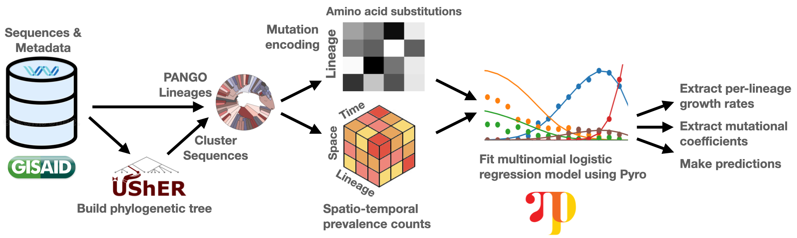

import os
import sys
REPO_ADDRESS = "https://github.com/broadinstitute/pyro-cov.git"
REPO_NAME = "pyro-cov"
# Download the repo if it doesn't exist
if not os.path.exists(REPO_NAME):
!git clone $REPO_ADDRESS
# change to the repo directory
os.chdir(REPO_NAME)virus mutation rates analysis

RSV and SARS-CoV-2 using Pyro
nextstrain offers a nice way to download data from GISAID.
usher is a tool to build a tree from a set of sequences.
cov-lineages/pango-designation suggests new lineages that should be added to the current scheme.
cov-lineages/pangoLEARN is a Store of the trained model for pangolin to access. This repository is deprecated and only for use with pangolin 2.0 and 3.0. For latest pangolin data models compatible with pangolin 4.0, use cov-lineages/pangolin-data, the repo for storing latest model, protobuf, designation hash and alias files for pangolin assignments
CSSEGISandData/COVID-19 is a repository with Novel Coronavirus (COVID-19) Cases, provided by JHU CSSE.
nextstrain/nextclade is a tool for Viral genome alignment, mutation calling, clade assignment, quality checks and phylogenetic placement
Manhattan plot of the mutation rates for the SARS-CoV-2 genome. The plot shows the log10 of the p-values for the null hypothesis that the mutation rate is zero. The plot is based on the results of the analysis of 6.4 million SARS-CoV-2 genomes. The plot shows that the mutation rate is significantly different from zero for 11 of the 29 genes in the SARS-CoV-2 genome. The genes with the highest mutation rates are ORF1ab, N, and S. The genes with the lowest mutation rates are E, M, and NSP3. The plot also shows that the mutation rate is significantly different from zero for the entire genome. The plot is based on the results of the analysis of 6.4 million SARS-CoV-2 genomes. The plot shows that the mutation rate is significantly different from zero for 11 of the 29 genes in the SARS-CoV-2 genome. The genes with the highest mutation rates are ORF1ab, N, and S. The genes with the lowest mutation rates are E, M, and NSP3. The plot also shows that the mutation rate is significantly different from zero for the entire genome.
!pip install -e .Looking in indexes: https://pypi.tuna.tsinghua.edu.cn/simple
Obtaining file:///home/ma/git/computation/pyro-cov
Preparing metadata (setup.py) ... done
Requirement already satisfied: biopython>=1.54 in /home/ma/miniconda3/envs/insight/lib/python3.8/site-packages (from pyrocov==0.1.0) (1.80)
Requirement already satisfied: pyro-ppl>=1.7 in /home/ma/miniconda3/envs/insight/lib/python3.8/site-packages (from pyrocov==0.1.0) (1.8.4)
Requirement already satisfied: geopy in /home/ma/miniconda3/envs/insight/lib/python3.8/site-packages (from pyrocov==0.1.0) (2.3.0)
Requirement already satisfied: gpytorch in /home/ma/miniconda3/envs/insight/lib/python3.8/site-packages (from pyrocov==0.1.0) (1.9.1)
Requirement already satisfied: scikit-learn in /home/ma/miniconda3/envs/insight/lib/python3.8/site-packages (from pyrocov==0.1.0) (1.2.0)
Requirement already satisfied: umap-learn in /home/ma/miniconda3/envs/insight/lib/python3.8/site-packages (from pyrocov==0.1.0) (0.5.3)
Requirement already satisfied: mappy in /home/ma/miniconda3/envs/insight/lib/python3.8/site-packages (from pyrocov==0.1.0) (2.24)
Requirement already satisfied: protobuf in /home/ma/miniconda3/envs/insight/lib/python3.8/site-packages (from pyrocov==0.1.0) (3.20.1)
Requirement already satisfied: tqdm in /home/ma/miniconda3/envs/insight/lib/python3.8/site-packages (from pyrocov==0.1.0) (4.64.1)
Requirement already satisfied: colorcet in /home/ma/miniconda3/envs/insight/lib/python3.8/site-packages (from pyrocov==0.1.0) (3.0.1)
Requirement already satisfied: numpy in /home/ma/miniconda3/envs/insight/lib/python3.8/site-packages (from biopython>=1.54->pyrocov==0.1.0) (1.23.5)
Requirement already satisfied: torch>=1.11.0 in /home/ma/miniconda3/envs/insight/lib/python3.8/site-packages (from pyro-ppl>=1.7->pyrocov==0.1.0) (1.12.1.post200)
Requirement already satisfied: pyro-api>=0.1.1 in /home/ma/miniconda3/envs/insight/lib/python3.8/site-packages (from pyro-ppl>=1.7->pyrocov==0.1.0) (0.1.2)
Requirement already satisfied: opt-einsum>=2.3.2 in /home/ma/miniconda3/envs/insight/lib/python3.8/site-packages (from pyro-ppl>=1.7->pyrocov==0.1.0) (3.3.0)
Requirement already satisfied: pyct>=0.4.4 in /home/ma/miniconda3/envs/insight/lib/python3.8/site-packages (from colorcet->pyrocov==0.1.0) (0.4.8)
Requirement already satisfied: geographiclib<3,>=1.52 in /home/ma/miniconda3/envs/insight/lib/python3.8/site-packages (from geopy->pyrocov==0.1.0) (2.0)
Requirement already satisfied: linear-operator>=0.2.0 in /home/ma/miniconda3/envs/insight/lib/python3.8/site-packages (from gpytorch->pyrocov==0.1.0) (0.3.0)
Requirement already satisfied: scipy>=1.3.2 in /home/ma/miniconda3/envs/insight/lib/python3.8/site-packages (from scikit-learn->pyrocov==0.1.0) (1.10.0)
Requirement already satisfied: threadpoolctl>=2.0.0 in /home/ma/miniconda3/envs/insight/lib/python3.8/site-packages (from scikit-learn->pyrocov==0.1.0) (3.1.0)
Requirement already satisfied: joblib>=1.1.1 in /home/ma/miniconda3/envs/insight/lib/python3.8/site-packages (from scikit-learn->pyrocov==0.1.0) (1.2.0)
Requirement already satisfied: pynndescent>=0.5 in /home/ma/miniconda3/envs/insight/lib/python3.8/site-packages (from umap-learn->pyrocov==0.1.0) (0.5.8)
Requirement already satisfied: numba>=0.49 in /home/ma/miniconda3/envs/insight/lib/python3.8/site-packages (from umap-learn->pyrocov==0.1.0) (0.56.4)
Requirement already satisfied: llvmlite<0.40,>=0.39.0dev0 in /home/ma/miniconda3/envs/insight/lib/python3.8/site-packages (from numba>=0.49->umap-learn->pyrocov==0.1.0) (0.39.1)
Requirement already satisfied: setuptools in /home/ma/miniconda3/envs/insight/lib/python3.8/site-packages (from numba>=0.49->umap-learn->pyrocov==0.1.0) (65.3.0)
Requirement already satisfied: importlib-metadata in /home/ma/miniconda3/envs/insight/lib/python3.8/site-packages (from numba>=0.49->umap-learn->pyrocov==0.1.0) (4.11.4)
Requirement already satisfied: param>=1.7.0 in /home/ma/miniconda3/envs/insight/lib/python3.8/site-packages (from pyct>=0.4.4->colorcet->pyrocov==0.1.0) (1.12.3)
Requirement already satisfied: typing_extensions in /home/ma/miniconda3/envs/insight/lib/python3.8/site-packages (from torch>=1.11.0->pyro-ppl>=1.7->pyrocov==0.1.0) (4.3.0)
Requirement already satisfied: zipp>=0.5 in /home/ma/miniconda3/envs/insight/lib/python3.8/site-packages (from importlib-metadata->numba>=0.49->umap-learn->pyrocov==0.1.0) (3.8.1)
Installing collected packages: pyrocov
Attempting uninstall: pyrocov
Found existing installation: pyrocov 0.1.0
Uninstalling pyrocov-0.1.0:
Successfully uninstalled pyrocov-0.1.0
Running setup.py develop for pyrocov
Successfully installed pyrocov-0.1.0Download data
# download the data
!make update! test -f results/DO_NOT_UPDATE
make: *** [Makefile:42: update] Error 1Preprocess data
This takes under an hour.
!make preprocesspython scripts/preprocess_usher.py
73145 Refining a tree with 4472367 nodes
113577 Found 1131065 clones
113618 Refined 2048 -> 3341302
121584 Loading usher metadata
100%|██████████████████████████████| 6590630/6590630 [01:33<00:00, 70121.77it/s]
225982 Found metadata:
{'day': 6584214, 'lineage': 6590629, 'location': 2551026}
226612 Loading nextstrain metadata
100%|██████████████████████████████| 7170954/7170954 [02:06<00:00, 56641.67it/s]
443420 Found metadata:
{'location': 5933129, 'day': 6398841, 'lineage': 6449861}
480169 Loading tree from results/lineageTree.fine.pb
551769 Accumulating mutations on 4472367 nodes
100%|█████████████████████████████| 4472367/4472367 [00:41<00:00, 107386.50it/s]
1073417 Found 6652960 samples in the usher tree
1073417 Skipped 4102146 nodes because:
Counter({'no location': 4033211, 'no date': 68935})
1073418 Kept 2550814 rows
1075152 Saved results/columns.pkl
1075168 Saved results/stats.pkl
1088888 Extracting features with 2000 clades
1248700 Pruning 4470319/4472367 nodes
100%|██████████████████████████████| 4470319/4470319 [00:56<00:00, 78751.40it/s]
1363643 Saved results/columns.2000.pkl
1363650 Loading tree from results/lineageTree.2048.pb
1364473 Accumulating mutations on 2048 nodes
100%|████████████████████████████████████| 2048/2048 [00:00<00:00, 80335.32it/s]
1365270 Found 2737 amino acid mutations
1365532 saving (2048, 2737) aa features to results/features.2000.1.pt
1365559 Saved results/features.2000.1.pt
1365613 Extracting features with 3000 clades
1522783 Pruning 4469367/4472367 nodes
100%|██████████████████████████████| 4469367/4469367 [00:56<00:00, 79289.80it/s]
1637794 Saved results/columns.3000.pkl
1637801 Loading tree from results/lineageTree.3000.pb
1638696 Accumulating mutations on 3000 nodes
100%|███████████████████████████████████| 3000/3000 [00:00<00:00, 116608.86it/s]
1639584 Found 3144 amino acid mutations
1639910 saving (3000, 3144) aa features to results/features.3000.1.pt
1639945 Saved results/features.3000.1.pt
1640071 Extracting features with 5000 clades
1802912 Pruning 4467367/4472367 nodes
100%|██████████████████████████████| 4467367/4467367 [00:56<00:00, 79139.77it/s]
1918639 Saved results/columns.5000.pkl
1918645 Loading tree from results/lineageTree.5000.pb
1919565 Accumulating mutations on 5000 nodes
100%|███████████████████████████████████| 5000/5000 [00:00<00:00, 131161.35it/s]
1920678 Found 4072 amino acid mutations
1921173 saving (5000, 4072) aa features to results/features.5000.1.pt
1921241 Saved results/features.5000.1.pt
1921381 Extracting features with 10000 clades
2081261 Pruning 4462367/4472367 nodes
100%|██████████████████████████████| 4462367/4462367 [00:56<00:00, 78665.92it/s]
2195949 Saved results/columns.10000.pkl
2195955 Loading tree from results/lineageTree.10000.pb
2196852 Accumulating mutations on 10000 nodes
100%|█████████████████████████████████| 10000/10000 [00:00<00:00, 143926.43it/s]
2198504 Found 5850 amino acid mutations
2199432 saving (10000, 5850) aa features to results/features.10000.1.pt
2199595 Saved results/features.10000.1.ptanalyze data
# analyze data
!python scripts/mutrans.py --vary-gene 1226 loading cached results/mutrans.data.single.3000.1.50.None.pt
2813 Fitting to each of genes: E, M, N, ORF10, ORF14, ORF1a, ORF1b, ORF3a, ORF6, ORF7a, ORF7b, ORF8, ORF9b, S
0%| | 0/16 [00:00<?, ?it/s] 2816 Holdout: {}
2816 loading cached results/mutrans.data.single.3000.1.50.None.pt
2861 loading cached results/mutrans.svi.3000.1.50.coef_scale=0.05.reparam-localinit.full.10001.0.05.0.1.10.0.200.6.None..pt
2905 Dense data has shape 82 x 6 x 3000 totaling 2550814 sequences
2927 |μ|/σ [median,max] = [0.0886,635]
2927 ΔlogR(S:D614G) = 0.0347 ± 0.00
2927 ΔlogR(S:N501Y) = 0.055 ± 0.00
2927 ΔlogR(S:E484K) = 0.000379 ± 0.00
2928 ΔlogR(S:L452R) = 0.0462 ± 0.00
2934 R(B.1.1.7)/R(A) = 1.42
2934 R(B.1.617.2)/R(A) = 2.03
2934 R(AY.23.1)/R(A) = 2.06
2936 KL = 0.04137, MAE = 6.431, RMSE = 2.809
2936 England KL = 0.0353, MAE = 18.1, RMSE = 4.84
2936 England B.1.1.7 MAE = 0.75, RMSE = 1.91
6%|██▊ | 1/16 [00:00<00:03, 4.97it/s] 3017 Holdout: {'exclude': {'gene': '.*'}}
3018 Loading data
3598 Training on 2550814 rows with columns:
3598 clade, index, day, location, lineage
/home/ma/git/computation/pyro-cov/pyrocov/mutrans.py:205: UserWarning: No mutations selected; using empty features
warnings.warn("No mutations selected; using empty features")
6902 Loaded 3000 x 1 feature matrix
15658 WARNING skipped 0 unsampled clades
15659 Found 3 states in 3 countries
16486 Dataset size [T x P x C] 82 x 6 x 3000
16486 Keeping 2550814/2550814 rows (dropped 0)
16716 saving results/mutrans.data.single.3000.1.50.Egene=__.None.pt
16742 Fitting full guide via SVI
16744 init stddev = 4.63
17938 Model has 15145 latent variables of shapes:
rate_scale ()
init_scale ()
rate_loc_scale ()
init_loc_scale ()
coef_decentered (1,)
init_loc_decentered (3000,)
pc_rate_decentered (6070,)
pc_init_decentered (6070,)
17938 Guide has 3059294 parameters of shapes:
coef_centered (1,)
init_loc_centered ()
pc_rate_centered ()
pc_init_centered ()
AutoLowRankMultivariateNormal.loc (15145,)
AutoLowRankMultivariateNormal.scale (15145,)
AutoLowRankMultivariateNormal.cov_factor (15145, 200)
17984 step 0 L=128.663 RS=0.00951 IS=0.951 RLS=0.0105 ILS=1.05 CD=-0.04
21398 step 100 L=34.5872 RS=0.0777 IS=1.6 RLS=0.00955 ILS=6.53 CD=0.0168
24923 step 200 L=44.8209 RS=0.125 IS=1.63 RLS=0.0197 ILS=15.8 CD=0.0102
28747 step 300 L=21.2856 RS=0.135 IS=1.36 RLS=0.0179 ILS=19.3 CD=-0.0615
32227 step 400 L=18.674 RS=0.186 IS=1.5 RLS=0.0192 ILS=30.7 CD=0.00753
35870 step 500 L=16.9714 RS=0.213 IS=1.3 RLS=0.0332 ILS=32.4 CD=-0.0259
39568 step 600 L=16.0527 RS=0.243 IS=1.37 RLS=0.0224 ILS=39.8 CD=-0.0729
42987 step 700 L=15.7821 RS=0.247 IS=1.3 RLS=0.0161 ILS=44.7 CD=0.167
46489 step 800 L=15.3804 RS=0.255 IS=1.45 RLS=0.0178 ILS=52.6 CD=-0.0317
50070 step 900 L=15.4721 RS=0.233 IS=1.23 RLS=0.0199 ILS=48.6 CD=0.183
53708 step 1000 L=15.3477 RS=0.256 IS=1.12 RLS=0.0252 ILS=57.2 CD=-0.0723
57311 step 1100 L=15.2184 RS=0.272 IS=1.01 RLS=0.0137 ILS=67.5 CD=0.131
61009 step 1200 L=15.3686 RS=0.246 IS=0.937 RLS=0.0154 ILS=64.4 CD=0.106
64570 step 1300 L=15.4843 RS=0.267 IS=0.821 RLS=0.0167 ILS=75.7 CD=0.0598
68018 step 1400 L=15.6184 RS=0.264 IS=0.823 RLS=0.0163 ILS=79.7 CD=-0.127
71531 step 1500 L=16.0391 RS=0.251 IS=0.767 RLS=0.0223 ILS=78.1 CD=-0.0785
75153 step 1600 L=15.7432 RS=0.254 IS=0.652 RLS=0.0218 ILS=82.5 CD=0.00851
78779 step 1700 L=15.8374 RS=0.238 IS=0.552 RLS=0.0194 ILS=78.6 CD=0.0479
82255 step 1800 L=15.8457 RS=0.222 IS=0.486 RLS=0.0182 ILS=76.6 CD=-0.0868
85772 step 1900 L=15.8512 RS=0.224 IS=0.468 RLS=0.0228 ILS=82.6 CD=0.0344
89300 step 2000 L=15.9062 RS=0.225 IS=0.491 RLS=0.0221 ILS=86.9 CD=0.0663
92853 step 2100 L=16.3105 RS=0.221 IS=0.528 RLS=0.019 ILS=89.7 CD=-0.0464
96114 step 2200 L=16.2025 RS=0.215 IS=0.484 RLS=0.0177 ILS=89.7 CD=0.0336
99787 step 2300 L=16.1513 RS=0.199 IS=0.495 RLS=0.0133 ILS=82.9 CD=0.0911
103088 step 2400 L=16.1982 RS=0.199 IS=0.495 RLS=0.0192 ILS=83.3 CD=0.00809
106584 step 2500 L=16.4164 RS=0.203 IS=0.523 RLS=0.0157 ILS=89.6 CD=0.00557
110046 step 2600 L=16.5092 RS=0.204 IS=0.526 RLS=0.0193 ILS=93.8 CD=-0.091
113542 step 2700 L=16.577 RS=0.192 IS=0.492 RLS=0.0247 ILS=91.8 CD=-0.0437
117132 step 2800 L=16.6907 RS=0.189 IS=0.526 RLS=0.0195 ILS=93.2 CD=-0.128
120695 step 2900 L=16.6093 RS=0.185 IS=0.55 RLS=0.0184 ILS=94.7 CD=0.111
124315 step 3000 L=16.7556 RS=0.188 IS=0.536 RLS=0.0223 ILS=103 CD=0.0213
127918 step 3100 L=16.8399 RS=0.184 IS=0.544 RLS=0.0173 ILS=104 CD=-0.0631
131342 step 3200 L=17.5969 RS=0.177 IS=0.462 RLS=0.0161 ILS=105 CD=0.00115
134855 step 3300 L=17.0009 RS=0.182 IS=0.513 RLS=0.0182 ILS=111 CD=-0.0743
138394 step 3400 L=17.3362 RS=0.18 IS=0.493 RLS=0.0167 ILS=115 CD=0.183
141703 step 3500 L=17.2599 RS=0.177 IS=0.488 RLS=0.0162 ILS=114 CD=0.04
145229 step 3600 L=17.2814 RS=0.174 IS=0.491 RLS=0.0155 ILS=116 CD=-0.0905
148673 step 3700 L=17.3327 RS=0.168 IS=0.477 RLS=0.02 ILS=117 CD=0.0414
152165 step 3800 L=17.4722 RS=0.169 IS=0.493 RLS=0.0141 ILS=124 CD=-0.0797
155394 step 3900 L=17.4684 RS=0.17 IS=0.521 RLS=0.0166 ILS=124 CD=0.0957
158782 step 4000 L=17.4255 RS=0.163 IS=0.517 RLS=0.0213 ILS=120 CD=0.0223
162522 step 4100 L=17.4924 RS=0.165 IS=0.55 RLS=0.0193 ILS=127 CD=-0.0639
166149 step 4200 L=17.5569 RS=0.162 IS=0.525 RLS=0.0202 ILS=125 CD=0.0593
169640 step 4300 L=17.5193 RS=0.164 IS=0.523 RLS=0.0186 ILS=133 CD=0.0363
173339 step 4400 L=17.6026 RS=0.153 IS=0.527 RLS=0.0175 ILS=124 CD=0.198
176927 step 4500 L=17.6016 RS=0.155 IS=0.546 RLS=0.0187 ILS=131 CD=0.104
180486 step 4600 L=17.6013 RS=0.158 IS=0.525 RLS=0.0171 ILS=137 CD=-0.00862
184141 step 4700 L=17.6465 RS=0.154 IS=0.51 RLS=0.0167 ILS=135 CD=0.0997
187570 step 4800 L=17.5918 RS=0.149 IS=0.528 RLS=0.0189 ILS=135 CD=-0.0747
191276 step 4900 L=17.6262 RS=0.148 IS=0.547 RLS=0.0197 ILS=140 CD=0.0253
194791 step 5000 L=17.6028 RS=0.153 IS=0.538 RLS=0.0179 ILS=149 CD=0.144
198346 step 5100 L=17.6897 RS=0.15 IS=0.538 RLS=0.0175 ILS=152 CD=-0.03
201923 step 5200 L=17.6145 RS=0.151 IS=0.548 RLS=0.0217 ILS=158 CD=0.0207
205363 step 5300 L=17.6325 RS=0.151 IS=0.562 RLS=0.0195 ILS=161 CD=-0.0319
208727 step 5400 L=17.6472 RS=0.147 IS=0.57 RLS=0.0187 ILS=160 CD=-0.0504
212234 step 5500 L=17.6035 RS=0.147 IS=0.56 RLS=0.0234 ILS=162 CD=0.055
215635 step 5600 L=17.6438 RS=0.147 IS=0.558 RLS=0.023 ILS=163 CD=0.0233
219023 step 5700 L=17.6189 RS=0.145 IS=0.567 RLS=0.0241 ILS=162 CD=0.00503
222596 step 5800 L=17.6333 RS=0.15 IS=0.6 RLS=0.0205 ILS=172 CD=0.0924
226178 step 5900 L=17.6502 RS=0.147 IS=0.588 RLS=0.0187 ILS=171 CD=0.0471
229742 step 6000 L=17.6202 RS=0.148 IS=0.562 RLS=0.0203 ILS=175 CD=-0.00727
233319 step 6100 L=17.5727 RS=0.146 IS=0.596 RLS=0.0203 ILS=173 CD=0.0579
236870 step 6200 L=17.5554 RS=0.145 IS=0.582 RLS=0.0194 ILS=174 CD=0.061
240559 step 6300 L=17.578 RS=0.144 IS=0.579 RLS=0.0225 ILS=176 CD=-0.0401
244068 step 6400 L=17.6072 RS=0.144 IS=0.578 RLS=0.0245 ILS=182 CD=0.0368
247576 step 6500 L=17.5503 RS=0.144 IS=0.578 RLS=0.0239 ILS=185 CD=-0.015
251007 step 6600 L=17.5534 RS=0.143 IS=0.594 RLS=0.0219 ILS=185 CD=0.0127
254521 step 6700 L=17.5402 RS=0.143 IS=0.605 RLS=0.0207 ILS=190 CD=0.00808
258074 step 6800 L=17.4922 RS=0.146 IS=0.626 RLS=0.0189 ILS=198 CD=-0.0662
261582 step 6900 L=17.5755 RS=0.145 IS=0.65 RLS=0.0181 ILS=201 CD=-0.0421
265243 step 7000 L=17.4972 RS=0.145 IS=0.642 RLS=0.0159 ILS=203 CD=0.056
268811 step 7100 L=17.4529 RS=0.142 IS=0.638 RLS=0.0164 ILS=202 CD=0.0519
272226 step 7200 L=17.4794 RS=0.142 IS=0.651 RLS=0.02 ILS=202 CD=-0.0412
275735 step 7300 L=17.4524 RS=0.142 IS=0.652 RLS=0.0217 ILS=207 CD=0.0203
279211 step 7400 L=17.3781 RS=0.143 IS=0.672 RLS=0.0205 ILS=212 CD=-0.0878
282503 step 7500 L=17.3711 RS=0.142 IS=0.664 RLS=0.0192 ILS=212 CD=0.0202
285902 step 7600 L=17.3457 RS=0.143 IS=0.676 RLS=0.0179 ILS=215 CD=0.00129
289286 step 7700 L=17.3592 RS=0.142 IS=0.688 RLS=0.018 ILS=214 CD=-0.0955
292881 step 7800 L=17.2897 RS=0.14 IS=0.691 RLS=0.02 ILS=214 CD=-0.059
296540 step 7900 L=17.3143 RS=0.14 IS=0.686 RLS=0.0226 ILS=217 CD=-0.0201
300155 step 8000 L=17.2973 RS=0.139 IS=0.685 RLS=0.022 ILS=217 CD=-0.077
303859 step 8100 L=17.2645 RS=0.141 IS=0.693 RLS=0.0189 ILS=225 CD=-0.0313
307546 step 8200 L=17.2355 RS=0.139 IS=0.702 RLS=0.0186 ILS=224 CD=-0.0793
311159 step 8300 L=17.2268 RS=0.139 IS=0.686 RLS=0.0186 ILS=224 CD=-0.102
314844 step 8400 L=17.2351 RS=0.14 IS=0.696 RLS=0.0182 ILS=227 CD=-0.0469
318575 step 8500 L=17.2353 RS=0.14 IS=0.709 RLS=0.0177 ILS=231 CD=0.00992
321999 step 8600 L=17.2547 RS=0.141 IS=0.706 RLS=0.0173 ILS=236 CD=-0.0388
325621 step 8700 L=17.1422 RS=0.141 IS=0.723 RLS=0.0172 ILS=239 CD=-0.0196
328993 step 8800 L=17.1567 RS=0.141 IS=0.728 RLS=0.02 ILS=242 CD=-0.0717
332619 step 8900 L=17.1154 RS=0.142 IS=0.743 RLS=0.0201 ILS=248 CD=0.0644
336040 step 9000 L=17.1334 RS=0.143 IS=0.742 RLS=0.0205 ILS=251 CD=0.000282
339684 step 9100 L=17.0658 RS=0.14 IS=0.736 RLS=0.0207 ILS=248 CD=-0.0215
343297 step 9200 L=17.1258 RS=0.138 IS=0.748 RLS=0.0206 ILS=247 CD=-0.0379
346810 step 9300 L=17.0203 RS=0.14 IS=0.77 RLS=0.0188 ILS=252 CD=-0.0396
350306 step 9400 L=17.053 RS=0.14 IS=0.765 RLS=0.0194 ILS=256 CD=-0.0587
353896 step 9500 L=17.0174 RS=0.137 IS=0.766 RLS=0.0183 ILS=252 CD=0.021
357306 step 9600 L=16.982 RS=0.137 IS=0.76 RLS=0.0182 ILS=252 CD=0.0349
360830 step 9700 L=16.9708 RS=0.137 IS=0.765 RLS=0.0174 ILS=254 CD=0.0119
364186 step 9800 L=17.0294 RS=0.139 IS=0.769 RLS=0.0172 ILS=260 CD=-0.0257
367832 step 9900 L=16.9366 RS=0.139 IS=0.775 RLS=0.0176 ILS=263 CD=-0.027
371282 step 10000 L=16.9276 RS=0.139 IS=0.778 RLS=0.0194 ILS=263 CD=0.0393
0%| | 0/1000 [00:00<?, ?it/s]
1%|▍ | 11/1000 [00:00<00:08, 109.90it/s]
2%|▉ | 23/1000 [00:00<00:08, 111.07it/s]
4%|█▍ | 35/1000 [00:00<00:08, 110.58it/s]
5%|█▉ | 47/1000 [00:00<00:08, 110.79it/s]
6%|██▎ | 59/1000 [00:00<00:08, 110.87it/s]
7%|██▊ | 71/1000 [00:00<00:08, 110.94it/s]
8%|███▎ | 83/1000 [00:00<00:08, 111.14it/s]
10%|███▊ | 95/1000 [00:00<00:08, 111.07it/s]
11%|████▏ | 107/1000 [00:00<00:08, 111.10it/s]
12%|████▋ | 119/1000 [00:01<00:07, 110.57it/s]
13%|█████ | 131/1000 [00:01<00:07, 110.85it/s]
14%|█████▌ | 143/1000 [00:01<00:07, 110.14it/s]
16%|██████ | 155/1000 [00:01<00:07, 110.79it/s]
17%|██████▋ | 167/1000 [00:01<00:08, 99.08it/s]
18%|███████ | 178/1000 [00:01<00:08, 94.27it/s]
19%|███████▌ | 189/1000 [00:01<00:08, 97.42it/s]
20%|███████▊ | 201/1000 [00:01<00:07, 101.20it/s]
21%|████████▎ | 212/1000 [00:01<00:07, 103.40it/s]
22%|████████▋ | 224/1000 [00:02<00:07, 105.51it/s]
24%|█████████▏ | 236/1000 [00:02<00:07, 107.69it/s]
25%|█████████▋ | 248/1000 [00:02<00:06, 108.83it/s]
26%|██████████▏ | 260/1000 [00:02<00:06, 110.19it/s]
27%|██████████▌ | 272/1000 [00:02<00:06, 109.69it/s]
28%|███████████ | 284/1000 [00:02<00:06, 110.12it/s]
30%|███████████▌ | 296/1000 [00:02<00:06, 110.48it/s]
31%|████████████ | 308/1000 [00:02<00:06, 110.93it/s]
32%|████████████▍ | 320/1000 [00:02<00:06, 111.37it/s]
33%|████████████▉ | 332/1000 [00:03<00:05, 112.26it/s]
34%|█████████████▍ | 344/1000 [00:03<00:05, 111.97it/s]
36%|█████████████▉ | 356/1000 [00:03<00:05, 111.76it/s]
37%|██████████████▎ | 368/1000 [00:03<00:05, 111.71it/s]
38%|██████████████▊ | 380/1000 [00:03<00:05, 111.73it/s]
39%|███████████████▎ | 392/1000 [00:03<00:05, 111.66it/s]
40%|███████████████▊ | 404/1000 [00:03<00:05, 111.75it/s]
42%|████████████████▏ | 416/1000 [00:03<00:05, 112.64it/s]
43%|████████████████▋ | 428/1000 [00:03<00:05, 113.05it/s]
44%|█████████████████▏ | 440/1000 [00:04<00:04, 112.76it/s]
45%|█████████████████▋ | 452/1000 [00:04<00:04, 112.89it/s]
46%|██████████████████ | 464/1000 [00:04<00:05, 106.16it/s]
48%|██████████████████▌ | 475/1000 [00:04<00:04, 105.10it/s]
49%|██████████████████▉ | 487/1000 [00:04<00:04, 107.56it/s]
50%|███████████████████▍ | 499/1000 [00:04<00:04, 108.64it/s]
51%|███████████████████▉ | 511/1000 [00:04<00:04, 109.48it/s]
52%|████████████████████▎ | 522/1000 [00:04<00:04, 109.23it/s]
53%|████████████████████▊ | 534/1000 [00:04<00:04, 109.84it/s]
55%|█████████████████████▎ | 546/1000 [00:05<00:04, 109.90it/s]
56%|█████████████████████▊ | 558/1000 [00:05<00:03, 110.88it/s]
57%|██████████████████████▏ | 570/1000 [00:05<00:03, 110.95it/s]
58%|██████████████████████▋ | 582/1000 [00:05<00:03, 111.21it/s]
59%|███████████████████████▏ | 594/1000 [00:05<00:03, 110.16it/s]
61%|███████████████████████▋ | 606/1000 [00:05<00:03, 110.11it/s]
62%|████████████████████████ | 618/1000 [00:05<00:03, 108.93it/s]
63%|████████████████████████▌ | 629/1000 [00:05<00:03, 107.63it/s]
64%|████████████████████████▉ | 641/1000 [00:05<00:03, 109.26it/s]
65%|█████████████████████████▍ | 653/1000 [00:05<00:03, 110.62it/s]
66%|█████████████████████████▉ | 665/1000 [00:06<00:03, 110.79it/s]
68%|██████████████████████████▍ | 677/1000 [00:06<00:02, 109.73it/s]
69%|██████████████████████████▊ | 689/1000 [00:06<00:02, 110.09it/s]
70%|███████████████████████████▎ | 701/1000 [00:06<00:02, 110.19it/s]
71%|███████████████████████████▊ | 713/1000 [00:06<00:02, 108.99it/s]
72%|████████████████████████████▏ | 724/1000 [00:06<00:02, 107.87it/s]
74%|████████████████████████████▋ | 736/1000 [00:06<00:02, 108.58it/s]
75%|█████████████████████████████▏ | 747/1000 [00:06<00:02, 108.40it/s]
76%|█████████████████████████████▌ | 759/1000 [00:06<00:02, 109.46it/s]
77%|██████████████████████████████ | 771/1000 [00:07<00:02, 110.42it/s]
78%|██████████████████████████████▌ | 783/1000 [00:07<00:01, 110.69it/s]
80%|███████████████████████████████ | 795/1000 [00:07<00:01, 110.39it/s]
81%|███████████████████████████████▍ | 807/1000 [00:07<00:01, 110.38it/s]
82%|███████████████████████████████▉ | 819/1000 [00:07<00:01, 110.38it/s]
83%|████████████████████████████████▍ | 831/1000 [00:07<00:01, 110.79it/s]
84%|████████████████████████████████▉ | 843/1000 [00:07<00:01, 110.21it/s]
86%|█████████████████████████████████▎ | 855/1000 [00:07<00:01, 108.49it/s]
87%|█████████████████████████████████▊ | 866/1000 [00:07<00:01, 107.78it/s]
88%|██████████████████████████████████▏ | 877/1000 [00:08<00:01, 107.18it/s]
89%|██████████████████████████████████▋ | 888/1000 [00:08<00:01, 107.04it/s]
90%|███████████████████████████████████ | 899/1000 [00:08<00:00, 107.37it/s]
91%|███████████████████████████████████▍ | 910/1000 [00:08<00:00, 107.20it/s]
92%|███████████████████████████████████▉ | 921/1000 [00:08<00:00, 107.33it/s]
93%|████████████████████████████████████▎ | 932/1000 [00:08<00:00, 107.57it/s]
94%|████████████████████████████████████▊ | 943/1000 [00:08<00:00, 107.03it/s]
95%|█████████████████████████████████████▏ | 954/1000 [00:08<00:00, 101.08it/s]
96%|██████████████████████████████████████▌ | 965/1000 [00:08<00:00, 93.30it/s]
98%|███████████████████████████████████████ | 975/1000 [00:09<00:00, 94.85it/s]
99%|███████████████████████████████████████▍| 986/1000 [00:09<00:00, 98.88it/s]
100%|██████████████████████████████████████| 1000/1000 [00:09<00:00, 108.21it/s]
384037 saving results/mutrans.svi.3000.1.50.coef_scale=0.05.reparam-localinit.full.10001.0.05.0.1.10.0.200.6.None.exclude=___gene__________.pt
384188 Dense data has shape 82 x 6 x 3000 totaling 2550814 sequences
384189 |μ|/σ [median,max] = [0.0438,0.0438]
384189 ΔlogR(S:D614G) = 2.66e-05 ± 0.00
384189 R(B.1.1.7)/R(A) = 1.15
384189 R(B.1.617.2)/R(A) = 1.81
384189 R(AY.23.1)/R(A) = 1.87
384190 KL = 0.04315, MAE = 6.296, RMSE = 2.99
384190 England KL = 0.0367, MAE = 18.2, RMSE = 5.66
384190 England B.1.1.7 MAE = 0.828, RMSE = 2.43
12%|█████▍ | 2/16 [06:21<52:20, 224.34s/it] 384259 Holdout: {'include': {'gene': '^E:'}}
384259 Loading data
384816 Training on 2550814 rows with columns:
384816 clade, index, day, location, lineage
388174 Loaded 3000 x 18 feature matrix
396802 WARNING skipped 0 unsampled clades
396803 Found 3 states in 3 countries
397595 Dataset size [T x P x C] 82 x 6 x 3000
397595 Keeping 2550814/2550814 rows (dropped 0)
397825 saving results/mutrans.data.single.3000.1.50.Igene=_E_.None.pt
397849 Fitting full guide via SVI
397850 init stddev = 4.63
397863 Model has 15162 latent variables of shapes:
rate_scale ()
init_scale ()
rate_loc_scale ()
init_loc_scale ()
coef_decentered (18,)
init_loc_decentered (3000,)
pc_rate_decentered (6070,)
pc_init_decentered (6070,)
397863 Guide has 3062745 parameters of shapes:
coef_centered (18,)
init_loc_centered ()
pc_rate_centered ()
pc_init_centered ()
AutoLowRankMultivariateNormal.loc (15162,)
AutoLowRankMultivariateNormal.scale (15162,)
AutoLowRankMultivariateNormal.cov_factor (15162, 200)
397900 step 0 L=128.509 RS=0.00951 IS=0.951 RLS=0.0105 ILS=1.05
401483 step 100 L=35.3861 RS=0.069 IS=1.24 RLS=0.0118 ILS=5.88
405104 step 200 L=25.4646 RS=0.103 IS=1.6 RLS=0.0187 ILS=14.8
408634 step 300 L=21.6342 RS=0.15 IS=1.56 RLS=0.0208 ILS=21.6
412174 step 400 L=21.934 RS=0.17 IS=1.57 RLS=0.0179 ILS=26.7
415592 step 500 L=17.3171 RS=0.197 IS=1.75 RLS=0.0222 ILS=34.2
419226 step 600 L=17.013 RS=0.226 IS=1.53 RLS=0.0223 ILS=38.2
422579 step 700 L=15.9421 RS=0.215 IS=1.32 RLS=0.0168 ILS=41
425859 step 800 L=15.6951 RS=0.238 IS=1.41 RLS=0.017 ILS=48.3
429335 step 900 L=15.3367 RS=0.252 IS=1.29 RLS=0.0223 ILS=53.7
432867 step 1000 L=15.225 RS=0.235 IS=1.22 RLS=0.0231 ILS=51.3
436277 step 1100 L=15.0882 RS=0.247 IS=1.06 RLS=0.0145 ILS=62.4
439827 step 1200 L=15.1564 RS=0.243 IS=0.996 RLS=0.013 ILS=64.2
443321 step 1300 L=15.0069 RS=0.231 IS=0.787 RLS=0.0187 ILS=63
446758 step 1400 L=15.2005 RS=0.22 IS=0.658 RLS=0.0238 ILS=63.2
450316 step 1500 L=15.1693 RS=0.218 IS=0.648 RLS=0.0222 ILS=66.8
453664 step 1600 L=15.2142 RS=0.212 IS=0.575 RLS=0.024 ILS=68.6
457431 step 1700 L=15.4051 RS=0.221 IS=0.596 RLS=0.0221 ILS=75.1
460774 step 1800 L=15.1628 RS=0.211 IS=0.531 RLS=0.0148 ILS=73.9
464179 step 1900 L=15.2919 RS=0.214 IS=0.551 RLS=0.0191 ILS=80.1
467716 step 2000 L=15.1642 RS=0.192 IS=0.518 RLS=0.022 ILS=72.4
471226 step 2100 L=15.3311 RS=0.18 IS=0.505 RLS=0.0192 ILS=71.4
474832 step 2200 L=15.4481 RS=0.182 IS=0.551 RLS=0.0232 ILS=74.8
478513 step 2300 L=15.4398 RS=0.183 IS=0.545 RLS=0.0205 ILS=78.7
482068 step 2400 L=15.4379 RS=0.18 IS=0.549 RLS=0.0228 ILS=80.4
485646 step 2500 L=15.5497 RS=0.178 IS=0.501 RLS=0.0174 ILS=80.2
489095 step 2600 L=15.6225 RS=0.171 IS=0.493 RLS=0.0245 ILS=79.9
492601 step 2700 L=15.7337 RS=0.17 IS=0.526 RLS=0.0227 ILS=80.5
496182 step 2800 L=15.874 RS=0.171 IS=0.506 RLS=0.0263 ILS=84.3
499815 step 2900 L=15.8358 RS=0.172 IS=0.498 RLS=0.017 ILS=88.3
503425 step 3000 L=15.9439 RS=0.169 IS=0.481 RLS=0.0175 ILS=91.9
507025 step 3100 L=15.9258 RS=0.162 IS=0.48 RLS=0.0157 ILS=90.3
510660 step 3200 L=15.9745 RS=0.155 IS=0.476 RLS=0.0145 ILS=93
514113 step 3300 L=15.974 RS=0.154 IS=0.46 RLS=0.0187 ILS=93.9
517494 step 3400 L=16.041 RS=0.151 IS=0.446 RLS=0.0151 ILS=95.5
521018 step 3500 L=16.0744 RS=0.15 IS=0.43 RLS=0.0161 ILS=97.8
524353 step 3600 L=16.0954 RS=0.149 IS=0.435 RLS=0.0177 ILS=101
527750 step 3700 L=16.1905 RS=0.146 IS=0.42 RLS=0.0202 ILS=103
531181 step 3800 L=16.1376 RS=0.138 IS=0.465 RLS=0.0156 ILS=101
534643 step 3900 L=16.1702 RS=0.14 IS=0.488 RLS=0.0143 ILS=103
538225 step 4000 L=16.1451 RS=0.14 IS=0.492 RLS=0.0206 ILS=107
541706 step 4100 L=16.1772 RS=0.136 IS=0.504 RLS=0.0196 ILS=107
545224 step 4200 L=16.3925 RS=0.136 IS=0.516 RLS=0.0171 ILS=107
548773 step 4300 L=16.2312 RS=0.136 IS=0.513 RLS=0.0178 ILS=111
552297 step 4400 L=16.2216 RS=0.134 IS=0.503 RLS=0.018 ILS=110
555910 step 4500 L=16.1681 RS=0.135 IS=0.516 RLS=0.0176 ILS=114
559362 step 4600 L=16.2005 RS=0.131 IS=0.519 RLS=0.0166 ILS=111
563020 step 4700 L=16.2843 RS=0.131 IS=0.521 RLS=0.0168 ILS=114
566577 step 4800 L=16.1615 RS=0.127 IS=0.544 RLS=0.019 ILS=112
570137 step 4900 L=16.1698 RS=0.13 IS=0.546 RLS=0.0209 ILS=118
573723 step 5000 L=16.1343 RS=0.13 IS=0.576 RLS=0.0165 ILS=120
577368 step 5100 L=16.1567 RS=0.127 IS=0.57 RLS=0.0168 ILS=121
580919 step 5200 L=16.1068 RS=0.126 IS=0.552 RLS=0.0218 ILS=122
584515 step 5300 L=16.1399 RS=0.123 IS=0.564 RLS=0.0207 ILS=119
588140 step 5400 L=16.0968 RS=0.124 IS=0.576 RLS=0.0187 ILS=120
591715 step 5500 L=16.1535 RS=0.124 IS=0.593 RLS=0.0228 ILS=125
595359 step 5600 L=16.1051 RS=0.123 IS=0.614 RLS=0.0231 ILS=125
599039 step 5700 L=16.1094 RS=0.124 IS=0.635 RLS=0.0234 ILS=127
602647 step 5800 L=16.0264 RS=0.124 IS=0.66 RLS=0.0197 ILS=130
606209 step 5900 L=16.0535 RS=0.123 IS=0.667 RLS=0.0187 ILS=129
609788 step 6000 L=16.0128 RS=0.124 IS=0.671 RLS=0.0207 ILS=132
613110 step 6100 L=16.029 RS=0.122 IS=0.677 RLS=0.0204 ILS=132
616646 step 6200 L=15.9854 RS=0.122 IS=0.669 RLS=0.0191 ILS=134
620104 step 6300 L=16.0353 RS=0.123 IS=0.694 RLS=0.0225 ILS=137
623655 step 6400 L=16.0801 RS=0.124 IS=0.695 RLS=0.0247 ILS=140
626672 step 6500 L=15.9673 RS=0.123 IS=0.695 RLS=0.0238 ILS=139
629427 step 6600 L=15.9885 RS=0.124 IS=0.705 RLS=0.0217 ILS=142
632562 step 6700 L=16.0518 RS=0.122 IS=0.737 RLS=0.0209 ILS=140
636168 step 6800 L=15.8934 RS=0.124 IS=0.708 RLS=0.019 ILS=148
639944 step 6900 L=15.9394 RS=0.125 IS=0.73 RLS=0.0182 ILS=150
643521 step 7000 L=15.885 RS=0.123 IS=0.73 RLS=0.0162 ILS=149
647167 step 7100 L=15.8578 RS=0.123 IS=0.724 RLS=0.0168 ILS=150
650693 step 7200 L=15.8875 RS=0.123 IS=0.708 RLS=0.0203 ILS=152
654419 step 7300 L=15.858 RS=0.123 IS=0.722 RLS=0.0217 ILS=154
658130 step 7400 L=15.7826 RS=0.124 IS=0.75 RLS=0.0207 ILS=158
661739 step 7500 L=15.7953 RS=0.124 IS=0.756 RLS=0.0191 ILS=159
665216 step 7600 L=15.7283 RS=0.122 IS=0.759 RLS=0.0177 ILS=158
668698 step 7700 L=15.7274 RS=0.121 IS=0.773 RLS=0.0178 ILS=158
672139 step 7800 L=15.6564 RS=0.123 IS=0.785 RLS=0.0197 ILS=163
675851 step 7900 L=15.7315 RS=0.121 IS=0.79 RLS=0.0223 ILS=162
679490 step 8000 L=15.6843 RS=0.121 IS=0.758 RLS=0.0218 ILS=164
683103 step 8100 L=15.6711 RS=0.122 IS=0.757 RLS=0.0188 ILS=165
686932 step 8200 L=15.6209 RS=0.121 IS=0.766 RLS=0.0186 ILS=167
690755 step 8300 L=15.6328 RS=0.12 IS=0.782 RLS=0.0188 ILS=167
694503 step 8400 L=15.6833 RS=0.121 IS=0.779 RLS=0.0183 ILS=170
698284 step 8500 L=15.6244 RS=0.122 IS=0.788 RLS=0.0179 ILS=173
701879 step 8600 L=15.6077 RS=0.122 IS=0.816 RLS=0.0173 ILS=175
705443 step 8700 L=15.5414 RS=0.121 IS=0.804 RLS=0.0172 ILS=176
709007 step 8800 L=15.5379 RS=0.12 IS=0.807 RLS=0.02 ILS=177
712555 step 8900 L=15.5071 RS=0.12 IS=0.821 RLS=0.02 ILS=179
716168 step 9000 L=15.4883 RS=0.121 IS=0.837 RLS=0.0205 ILS=182
719712 step 9100 L=15.4528 RS=0.121 IS=0.833 RLS=0.0207 ILS=182
723248 step 9200 L=15.506 RS=0.121 IS=0.838 RLS=0.0207 ILS=185
726806 step 9300 L=15.4236 RS=0.12 IS=0.856 RLS=0.0189 ILS=184
730449 step 9400 L=15.4506 RS=0.119 IS=0.871 RLS=0.0195 ILS=185
733857 step 9500 L=15.4187 RS=0.119 IS=0.862 RLS=0.0184 ILS=185
737542 step 9600 L=15.4073 RS=0.119 IS=0.853 RLS=0.0182 ILS=187
741192 step 9700 L=15.3871 RS=0.118 IS=0.844 RLS=0.0174 ILS=185
744925 step 9800 L=15.4373 RS=0.117 IS=0.844 RLS=0.0173 ILS=184
748470 step 9900 L=15.3308 RS=0.118 IS=0.857 RLS=0.0177 ILS=188
751989 step 10000 L=15.3386 RS=0.119 IS=0.873 RLS=0.0195 ILS=191
0%| | 0/1000 [00:00<?, ?it/s]
1%|▍ | 11/1000 [00:00<00:09, 107.76it/s]
2%|▉ | 23/1000 [00:00<00:08, 109.63it/s]
3%|█▎ | 34/1000 [00:00<00:08, 108.82it/s]
5%|█▊ | 46/1000 [00:00<00:08, 109.95it/s]
6%|██▎ | 58/1000 [00:00<00:08, 111.13it/s]
7%|██▊ | 70/1000 [00:00<00:08, 112.03it/s]
8%|███▎ | 82/1000 [00:00<00:08, 111.55it/s]
9%|███▊ | 94/1000 [00:00<00:08, 111.57it/s]
11%|████▏ | 106/1000 [00:00<00:08, 111.59it/s]
12%|████▌ | 118/1000 [00:01<00:07, 111.43it/s]
13%|█████ | 130/1000 [00:01<00:07, 111.72it/s]
14%|█████▌ | 142/1000 [00:01<00:07, 111.30it/s]
15%|██████ | 154/1000 [00:01<00:07, 111.08it/s]
17%|██████▍ | 166/1000 [00:01<00:07, 111.28it/s]
18%|██████▉ | 178/1000 [00:01<00:07, 110.80it/s]
19%|███████▍ | 190/1000 [00:01<00:07, 110.64it/s]
20%|███████▉ | 202/1000 [00:01<00:07, 110.47it/s]
21%|████████▎ | 214/1000 [00:01<00:07, 110.67it/s]
23%|████████▊ | 226/1000 [00:02<00:07, 110.52it/s]
24%|█████████▎ | 238/1000 [00:02<00:06, 110.60it/s]
25%|█████████▊ | 250/1000 [00:02<00:06, 110.99it/s]
26%|██████████▏ | 262/1000 [00:02<00:06, 110.85it/s]
27%|██████████▋ | 274/1000 [00:02<00:06, 110.42it/s]
29%|███████████▏ | 286/1000 [00:02<00:06, 110.57it/s]
30%|███████████▌ | 298/1000 [00:02<00:06, 110.61it/s]
31%|████████████ | 310/1000 [00:02<00:06, 110.49it/s]
32%|████████████▌ | 322/1000 [00:02<00:06, 110.05it/s]
33%|█████████████ | 334/1000 [00:03<00:06, 110.53it/s]
35%|█████████████▍ | 346/1000 [00:03<00:05, 110.38it/s]
36%|█████████████▉ | 358/1000 [00:03<00:05, 110.03it/s]
37%|██████████████▍ | 370/1000 [00:03<00:06, 100.30it/s]
38%|███████████████▏ | 381/1000 [00:03<00:06, 94.10it/s]
39%|███████████████▋ | 392/1000 [00:03<00:06, 97.12it/s]
40%|███████████████▊ | 404/1000 [00:03<00:05, 101.64it/s]
42%|████████████████▏ | 415/1000 [00:03<00:05, 103.82it/s]
43%|████████████████▋ | 427/1000 [00:03<00:05, 105.85it/s]
44%|█████████████████ | 439/1000 [00:04<00:05, 107.92it/s]
45%|█████████████████▌ | 450/1000 [00:04<00:05, 108.18it/s]
46%|██████████████████ | 462/1000 [00:04<00:04, 109.29it/s]
47%|██████████████████▍ | 473/1000 [00:04<00:04, 109.39it/s]
48%|██████████████████▉ | 485/1000 [00:04<00:04, 109.90it/s]
50%|███████████████████▍ | 497/1000 [00:04<00:04, 108.78it/s]
51%|███████████████████▊ | 508/1000 [00:04<00:04, 108.49it/s]
52%|████████████████████▎ | 520/1000 [00:04<00:04, 110.27it/s]
53%|████████████████████▋ | 532/1000 [00:04<00:04, 110.80it/s]
54%|█████████████████████▏ | 544/1000 [00:04<00:04, 111.90it/s]
56%|█████████████████████▋ | 556/1000 [00:05<00:03, 112.16it/s]
57%|██████████████████████▏ | 568/1000 [00:05<00:03, 112.57it/s]
58%|██████████████████████▌ | 580/1000 [00:05<00:03, 112.08it/s]
59%|███████████████████████ | 592/1000 [00:05<00:03, 112.14it/s]
60%|███████████████████████▌ | 604/1000 [00:05<00:03, 111.66it/s]
62%|████████████████████████ | 616/1000 [00:05<00:03, 112.09it/s]
63%|████████████████████████▍ | 628/1000 [00:05<00:03, 111.87it/s]
64%|████████████████████████▉ | 640/1000 [00:05<00:03, 112.28it/s]
65%|█████████████████████████▍ | 652/1000 [00:05<00:03, 111.87it/s]
66%|█████████████████████████▉ | 664/1000 [00:06<00:03, 111.79it/s]
68%|██████████████████████████▎ | 676/1000 [00:06<00:02, 111.44it/s]
69%|██████████████████████████▊ | 688/1000 [00:06<00:02, 111.55it/s]
70%|███████████████████████████▎ | 700/1000 [00:06<00:02, 111.72it/s]
71%|███████████████████████████▊ | 712/1000 [00:06<00:02, 111.81it/s]
72%|████████████████████████████▏ | 724/1000 [00:06<00:02, 112.30it/s]
74%|████████████████████████████▋ | 736/1000 [00:06<00:02, 112.65it/s]
75%|█████████████████████████████▏ | 748/1000 [00:06<00:02, 112.48it/s]
76%|█████████████████████████████▋ | 760/1000 [00:06<00:02, 112.25it/s]
77%|██████████████████████████████ | 772/1000 [00:07<00:02, 111.46it/s]
78%|██████████████████████████████▌ | 784/1000 [00:07<00:01, 110.43it/s]
80%|███████████████████████████████ | 796/1000 [00:07<00:01, 110.95it/s]
81%|███████████████████████████████▌ | 808/1000 [00:07<00:01, 111.17it/s]
82%|███████████████████████████████▉ | 820/1000 [00:07<00:01, 111.78it/s]
83%|████████████████████████████████▍ | 832/1000 [00:07<00:01, 111.76it/s]
84%|████████████████████████████████▉ | 844/1000 [00:07<00:01, 111.82it/s]
86%|█████████████████████████████████▍ | 856/1000 [00:07<00:01, 109.18it/s]
87%|█████████████████████████████████▊ | 867/1000 [00:07<00:01, 102.80it/s]
88%|███████████████████████████████████ | 878/1000 [00:08<00:01, 98.18it/s]
89%|███████████████████████████████████▌ | 889/1000 [00:08<00:01, 99.44it/s]
90%|███████████████████████████████████▏ | 901/1000 [00:08<00:00, 102.73it/s]
91%|███████████████████████████████████▌ | 913/1000 [00:08<00:00, 105.33it/s]
92%|████████████████████████████████████ | 925/1000 [00:08<00:00, 106.90it/s]
94%|████████████████████████████████████▌ | 936/1000 [00:08<00:00, 107.62it/s]
95%|████████████████████████████████████▉ | 948/1000 [00:08<00:00, 109.17it/s]
96%|█████████████████████████████████████▍ | 960/1000 [00:08<00:00, 109.68it/s]
97%|█████████████████████████████████████▉ | 972/1000 [00:08<00:00, 109.93it/s]
98%|██████████████████████████████████████▍| 984/1000 [00:08<00:00, 110.37it/s]
100%|██████████████████████████████████████| 1000/1000 [00:09<00:00, 109.42it/s]
764641 saving results/mutrans.svi.3000.1.50.coef_scale=0.05.reparam-localinit.full.10001.0.05.0.1.10.0.200.6.None.include=___gene_____E_____.pt
764781 Dense data has shape 82 x 6 x 3000 totaling 2550814 sequences
764781 |μ|/σ [median,max] = [0.0798,839]
764781 R(B.1.1.7)/R(A) = 1.19
764782 R(B.1.617.2)/R(A) = 1.64
764782 R(AY.23.1)/R(A) = 1.67
764782 KL = 0.04086, MAE = 6.2, RMSE = 2.799
764782 England KL = 0.0346, MAE = 17.8, RMSE = 5.19
764783 England B.1.1.7 MAE = 0.692, RMSE = 1.77
19%|███████▋ | 3/16 [12:42<1:04:04, 295.69s/it] 764857 Holdout: {'include': {'gene': '^M:'}}
764858 Loading data
765423 Training on 2550814 rows with columns:
765423 clade, index, day, location, lineage
768775 Loaded 3000 x 44 feature matrix
777324 WARNING skipped 0 unsampled clades
777324 Found 3 states in 3 countries
778090 Dataset size [T x P x C] 82 x 6 x 3000
778090 Keeping 2550814/2550814 rows (dropped 0)
778262 saving results/mutrans.data.single.3000.1.50.Igene=_M_.None.pt
778285 Fitting full guide via SVI
778286 init stddev = 4.63
778297 Model has 15188 latent variables of shapes:
rate_scale ()
init_scale ()
rate_loc_scale ()
init_loc_scale ()
coef_decentered (44,)
init_loc_decentered (3000,)
pc_rate_decentered (6070,)
pc_init_decentered (6070,)
778298 Guide has 3068023 parameters of shapes:
coef_centered (44,)
init_loc_centered ()
pc_rate_centered ()
pc_init_centered ()
AutoLowRankMultivariateNormal.loc (15188,)
AutoLowRankMultivariateNormal.scale (15188,)
AutoLowRankMultivariateNormal.cov_factor (15188, 200)
778333 step 0 L=128.494 RS=0.00951 IS=0.951 RLS=0.0105 ILS=1.05
781633 step 100 L=34.6298 RS=0.068 IS=1.81 RLS=0.0115 ILS=6.31
784994 step 200 L=28.5999 RS=0.108 IS=1.96 RLS=0.0205 ILS=14.5
788347 step 300 L=61.464 RS=0.144 IS=1.53 RLS=0.0188 ILS=21.1
791844 step 400 L=18.7655 RS=0.186 IS=1.57 RLS=0.0184 ILS=28.6
795380 step 500 L=17.3835 RS=0.19 IS=1.28 RLS=0.0274 ILS=28.7
799108 step 600 L=16.4504 RS=0.234 IS=1.33 RLS=0.0224 ILS=37.4
802708 step 700 L=15.2457 RS=0.215 IS=1.08 RLS=0.0179 ILS=35.1
806344 step 800 L=14.9243 RS=0.229 IS=1.01 RLS=0.0169 ILS=41.5
809882 step 900 L=15.3874 RS=0.259 IS=0.846 RLS=0.0186 ILS=54.5
813303 step 1000 L=14.6519 RS=0.243 IS=0.835 RLS=0.0248 ILS=57.2
816599 step 1100 L=14.4702 RS=0.235 IS=0.697 RLS=0.012 ILS=58.7
820231 step 1200 L=14.4041 RS=0.222 IS=0.755 RLS=0.0191 ILS=60
823696 step 1300 L=14.5298 RS=0.211 IS=0.666 RLS=0.0179 ILS=58.7
827234 step 1400 L=14.6334 RS=0.215 IS=0.704 RLS=0.0201 ILS=65.2
830572 step 1500 L=14.7399 RS=0.219 IS=0.714 RLS=0.0226 ILS=70.1
833889 step 1600 L=14.5289 RS=0.21 IS=0.615 RLS=0.0186 ILS=72.5
837488 step 1700 L=14.6317 RS=0.201 IS=0.605 RLS=0.025 ILS=75.1
840989 step 1800 L=15.0103 RS=0.204 IS=0.581 RLS=0.0166 ILS=80.3
844401 step 1900 L=14.8393 RS=0.202 IS=0.581 RLS=0.0223 ILS=80.9
847860 step 2000 L=14.7162 RS=0.19 IS=0.56 RLS=0.0189 ILS=77.8
851534 step 2100 L=14.8411 RS=0.176 IS=0.548 RLS=0.0205 ILS=75.4
855076 step 2200 L=16.2341 RS=0.174 IS=0.503 RLS=0.023 ILS=77.9
858848 step 2300 L=14.8761 RS=0.169 IS=0.49 RLS=0.0187 ILS=79.7
862502 step 2400 L=14.9899 RS=0.164 IS=0.452 RLS=0.0194 ILS=82.5
865971 step 2500 L=14.9734 RS=0.16 IS=0.435 RLS=0.0145 ILS=85.3
869648 step 2600 L=15.1287 RS=0.149 IS=0.427 RLS=0.0192 ILS=83.8
873246 step 2700 L=15.1717 RS=0.148 IS=0.483 RLS=0.0234 ILS=86.5
876905 step 2800 L=15.1941 RS=0.146 IS=0.459 RLS=0.0185 ILS=86.9
880565 step 2900 L=15.8577 RS=0.146 IS=0.462 RLS=0.0138 ILS=92.3
884323 step 3000 L=15.3163 RS=0.141 IS=0.42 RLS=0.0213 ILS=93.7
887919 step 3100 L=15.3341 RS=0.137 IS=0.476 RLS=0.0162 ILS=98.2
891565 step 3200 L=15.6386 RS=0.134 IS=0.501 RLS=0.0143 ILS=100
895161 step 3300 L=15.567 RS=0.127 IS=0.485 RLS=0.02 ILS=98
898672 step 3400 L=15.6594 RS=0.127 IS=0.493 RLS=0.0167 ILS=96.9
902144 step 3500 L=15.5462 RS=0.13 IS=0.497 RLS=0.0171 ILS=101
905729 step 3600 L=15.5574 RS=0.129 IS=0.5 RLS=0.0187 ILS=105
909215 step 3700 L=15.5827 RS=0.127 IS=0.494 RLS=0.0189 ILS=106
912768 step 3800 L=15.5855 RS=0.126 IS=0.479 RLS=0.0153 ILS=106
916333 step 3900 L=15.6207 RS=0.125 IS=0.486 RLS=0.0153 ILS=105
919906 step 4000 L=15.5891 RS=0.125 IS=0.491 RLS=0.0205 ILS=106
923462 step 4100 L=15.6338 RS=0.126 IS=0.497 RLS=0.0209 ILS=111
926996 step 4200 L=15.7625 RS=0.13 IS=0.513 RLS=0.0187 ILS=116
930306 step 4300 L=15.6665 RS=0.126 IS=0.524 RLS=0.0192 ILS=116
933522 step 4400 L=15.7654 RS=0.125 IS=0.556 RLS=0.0187 ILS=119
937052 step 4500 L=15.6693 RS=0.122 IS=0.563 RLS=0.0193 ILS=119
940570 step 4600 L=15.6873 RS=0.123 IS=0.57 RLS=0.0175 ILS=121
943996 step 4700 L=15.7894 RS=0.121 IS=0.578 RLS=0.0155 ILS=120
947559 step 4800 L=15.6893 RS=0.122 IS=0.594 RLS=0.0187 ILS=123
951008 step 4900 L=15.6678 RS=0.122 IS=0.595 RLS=0.018 ILS=123
954454 step 5000 L=15.6568 RS=0.124 IS=0.587 RLS=0.0165 ILS=125
958139 step 5100 L=15.6955 RS=0.122 IS=0.584 RLS=0.0165 ILS=122
961393 step 5200 L=15.6703 RS=0.122 IS=0.625 RLS=0.0217 ILS=127
964803 step 5300 L=15.6911 RS=0.121 IS=0.602 RLS=0.0215 ILS=128
968403 step 5400 L=15.6737 RS=0.122 IS=0.622 RLS=0.0198 ILS=132
972091 step 5500 L=15.6618 RS=0.121 IS=0.627 RLS=0.0235 ILS=131
975430 step 5600 L=15.6588 RS=0.121 IS=0.642 RLS=0.0231 ILS=132
979116 step 5700 L=15.6894 RS=0.122 IS=0.623 RLS=0.0237 ILS=136
982659 step 5800 L=15.6093 RS=0.12 IS=0.634 RLS=0.0198 ILS=135
986225 step 5900 L=15.648 RS=0.119 IS=0.649 RLS=0.0181 ILS=138
989822 step 6000 L=15.6325 RS=0.121 IS=0.649 RLS=0.0199 ILS=142
993342 step 6100 L=15.6467 RS=0.119 IS=0.656 RLS=0.0197 ILS=142
997028 step 6200 L=15.6051 RS=0.121 IS=0.663 RLS=0.0186 ILS=144
1000487 step 6300 L=15.6459 RS=0.12 IS=0.68 RLS=0.0219 ILS=146
1004173 step 6400 L=15.7024 RS=0.12 IS=0.686 RLS=0.0244 ILS=147
1007743 step 6500 L=15.6026 RS=0.117 IS=0.67 RLS=0.0239 ILS=148
1011065 step 6600 L=15.6482 RS=0.117 IS=0.664 RLS=0.0218 ILS=147
1014586 step 6700 L=15.6167 RS=0.117 IS=0.669 RLS=0.0209 ILS=148
1018250 step 6800 L=15.5931 RS=0.118 IS=0.674 RLS=0.0191 ILS=152
1021870 step 6900 L=15.6094 RS=0.119 IS=0.722 RLS=0.0184 ILS=155
1025470 step 7000 L=15.5482 RS=0.12 IS=0.717 RLS=0.0162 ILS=157
1029125 step 7100 L=15.5321 RS=0.12 IS=0.742 RLS=0.0167 ILS=158
1032752 step 7200 L=15.5556 RS=0.12 IS=0.748 RLS=0.0202 ILS=160
1036299 step 7300 L=15.566 RS=0.119 IS=0.746 RLS=0.0216 ILS=160
1039855 step 7400 L=15.4778 RS=0.12 IS=0.763 RLS=0.0205 ILS=162
1043496 step 7500 L=15.4921 RS=0.119 IS=0.764 RLS=0.0191 ILS=163
1046752 step 7600 L=15.4537 RS=0.12 IS=0.784 RLS=0.0181 ILS=167
1050021 step 7700 L=15.4579 RS=0.12 IS=0.778 RLS=0.0183 ILS=168
1053691 step 7800 L=15.4233 RS=0.116 IS=0.782 RLS=0.0203 ILS=166
1057327 step 7900 L=15.4343 RS=0.118 IS=0.781 RLS=0.0226 ILS=171
1060902 step 8000 L=15.444 RS=0.119 IS=0.79 RLS=0.0223 ILS=173
1064506 step 8100 L=15.4715 RS=0.119 IS=0.811 RLS=0.019 ILS=173
1068034 step 8200 L=15.3968 RS=0.118 IS=0.821 RLS=0.0187 ILS=173
1071279 step 8300 L=15.4047 RS=0.118 IS=0.852 RLS=0.0187 ILS=175
1074497 step 8400 L=15.4491 RS=0.118 IS=0.837 RLS=0.0182 ILS=174
1077995 step 8500 L=15.3838 RS=0.118 IS=0.851 RLS=0.0177 ILS=175
1081424 step 8600 L=15.3794 RS=0.118 IS=0.855 RLS=0.0172 ILS=176
1084988 step 8700 L=15.3229 RS=0.117 IS=0.85 RLS=0.0171 ILS=175
1088689 step 8800 L=15.3248 RS=0.118 IS=0.877 RLS=0.0198 ILS=177
1092199 step 8900 L=15.3065 RS=0.119 IS=0.885 RLS=0.02 ILS=181
1095797 step 9000 L=15.2922 RS=0.118 IS=0.869 RLS=0.0204 ILS=181
1099466 step 9100 L=15.2586 RS=0.118 IS=0.862 RLS=0.0207 ILS=181
1103014 step 9200 L=15.3127 RS=0.118 IS=0.857 RLS=0.0205 ILS=182
1106542 step 9300 L=15.2068 RS=0.118 IS=0.853 RLS=0.0188 ILS=183
1110054 step 9400 L=15.2383 RS=0.119 IS=0.859 RLS=0.0193 ILS=186
1113503 step 9500 L=15.2284 RS=0.118 IS=0.864 RLS=0.0183 ILS=184
1117112 step 9600 L=15.1974 RS=0.118 IS=0.872 RLS=0.0181 ILS=185
1120599 step 9700 L=15.1933 RS=0.119 IS=0.878 RLS=0.0174 ILS=187
1123883 step 9800 L=15.2362 RS=0.118 IS=0.894 RLS=0.0173 ILS=189
1127188 step 9900 L=15.1645 RS=0.118 IS=0.899 RLS=0.0177 ILS=190
1130426 step 10000 L=15.1725 RS=0.119 IS=0.911 RLS=0.0195 ILS=191
0%| | 0/1000 [00:00<?, ?it/s]
1%|▍ | 11/1000 [00:00<00:09, 108.83it/s]
2%|▉ | 22/1000 [00:00<00:08, 109.24it/s]
3%|█▎ | 33/1000 [00:00<00:08, 109.50it/s]
4%|█▊ | 44/1000 [00:00<00:08, 109.24it/s]
6%|██▏ | 55/1000 [00:00<00:08, 109.01it/s]
7%|██▋ | 67/1000 [00:00<00:08, 109.42it/s]
8%|███▏ | 79/1000 [00:00<00:08, 110.59it/s]
9%|███▋ | 91/1000 [00:00<00:08, 111.30it/s]
10%|████ | 103/1000 [00:00<00:08, 111.69it/s]
12%|████▍ | 115/1000 [00:01<00:07, 111.82it/s]
13%|████▉ | 127/1000 [00:01<00:07, 111.93it/s]
14%|█████▍ | 139/1000 [00:01<00:07, 111.94it/s]
15%|█████▉ | 151/1000 [00:01<00:07, 112.29it/s]
16%|██████▎ | 163/1000 [00:01<00:07, 113.08it/s]
18%|██████▊ | 175/1000 [00:01<00:07, 111.88it/s]
19%|███████▎ | 187/1000 [00:01<00:07, 112.53it/s]
20%|███████▊ | 199/1000 [00:01<00:07, 112.78it/s]
21%|████████▏ | 211/1000 [00:01<00:06, 112.76it/s]
22%|████████▋ | 223/1000 [00:01<00:06, 112.45it/s]
24%|█████████▏ | 235/1000 [00:02<00:06, 111.65it/s]
25%|█████████▋ | 247/1000 [00:02<00:06, 111.21it/s]
26%|██████████ | 259/1000 [00:02<00:06, 111.62it/s]
27%|██████████▌ | 271/1000 [00:02<00:06, 111.71it/s]
28%|███████████ | 283/1000 [00:02<00:06, 112.15it/s]
30%|███████████▌ | 295/1000 [00:02<00:06, 111.84it/s]
31%|███████████▉ | 307/1000 [00:02<00:06, 110.39it/s]
32%|████████████▍ | 319/1000 [00:02<00:06, 109.01it/s]
33%|████████████▉ | 331/1000 [00:02<00:06, 109.48it/s]
34%|█████████████▍ | 343/1000 [00:03<00:05, 109.94it/s]
36%|█████████████▊ | 355/1000 [00:03<00:05, 110.39it/s]
37%|██████████████▎ | 367/1000 [00:03<00:05, 111.41it/s]
38%|██████████████▊ | 379/1000 [00:03<00:05, 111.84it/s]
39%|███████████████▏ | 391/1000 [00:03<00:05, 110.57it/s]
40%|███████████████▋ | 403/1000 [00:03<00:05, 111.07it/s]
42%|████████████████▏ | 415/1000 [00:03<00:05, 111.38it/s]
43%|████████████████▋ | 427/1000 [00:03<00:05, 103.33it/s]
44%|█████████████████▌ | 438/1000 [00:03<00:05, 99.08it/s]
45%|█████████████████▉ | 449/1000 [00:04<00:05, 95.22it/s]
46%|██████████████████▍ | 460/1000 [00:04<00:05, 97.98it/s]
47%|██████████████████▎ | 471/1000 [00:04<00:05, 100.32it/s]
48%|███████████████████▎ | 482/1000 [00:04<00:05, 98.56it/s]
49%|███████████████████▋ | 492/1000 [00:04<00:05, 96.02it/s]
50%|███████████████████▋ | 504/1000 [00:04<00:04, 100.28it/s]
52%|████████████████████ | 516/1000 [00:04<00:04, 103.58it/s]
53%|████████████████████▌ | 527/1000 [00:04<00:04, 105.33it/s]
54%|█████████████████████ | 539/1000 [00:04<00:04, 106.95it/s]
55%|█████████████████████▍ | 551/1000 [00:05<00:04, 108.55it/s]
56%|█████████████████████▉ | 563/1000 [00:05<00:03, 109.32it/s]
57%|██████████████████████▍ | 575/1000 [00:05<00:03, 110.13it/s]
59%|██████████████████████▉ | 587/1000 [00:05<00:03, 110.41it/s]
60%|███████████████████████▎ | 599/1000 [00:05<00:03, 111.08it/s]
61%|███████████████████████▊ | 611/1000 [00:05<00:03, 111.84it/s]
62%|████████████████████████▎ | 623/1000 [00:05<00:03, 112.28it/s]
64%|████████████████████████▊ | 635/1000 [00:05<00:03, 112.55it/s]
65%|█████████████████████████▏ | 647/1000 [00:05<00:03, 112.31it/s]
66%|█████████████████████████▋ | 659/1000 [00:06<00:03, 112.28it/s]
67%|██████████████████████████▏ | 671/1000 [00:06<00:02, 112.19it/s]
68%|██████████████████████████▋ | 683/1000 [00:06<00:02, 112.99it/s]
70%|███████████████████████████ | 695/1000 [00:06<00:02, 112.30it/s]
71%|███████████████████████████▌ | 707/1000 [00:06<00:02, 112.39it/s]
72%|████████████████████████████ | 719/1000 [00:06<00:02, 112.79it/s]
73%|████████████████████████████▌ | 731/1000 [00:06<00:02, 113.44it/s]
74%|████████████████████████████▉ | 743/1000 [00:06<00:02, 113.96it/s]
76%|█████████████████████████████▍ | 755/1000 [00:06<00:02, 107.69it/s]
77%|██████████████████████████████▋ | 766/1000 [00:07<00:02, 95.16it/s]
78%|███████████████████████████████ | 776/1000 [00:07<00:02, 94.19it/s]
79%|███████████████████████████████▍ | 787/1000 [00:07<00:02, 96.70it/s]
80%|███████████████████████████████▉ | 798/1000 [00:07<00:02, 99.11it/s]
81%|███████████████████████████████▌ | 809/1000 [00:07<00:01, 100.43it/s]
82%|███████████████████████████████▉ | 820/1000 [00:07<00:01, 102.34it/s]
83%|████████████████████████████████▍ | 831/1000 [00:07<00:01, 102.92it/s]
84%|████████████████████████████████▊ | 842/1000 [00:07<00:01, 104.46it/s]
85%|█████████████████████████████████▎ | 853/1000 [00:07<00:01, 105.07it/s]
86%|█████████████████████████████████▋ | 864/1000 [00:08<00:01, 105.08it/s]
88%|██████████████████████████████████▏ | 875/1000 [00:08<00:01, 105.19it/s]
89%|██████████████████████████████████▌ | 886/1000 [00:08<00:01, 105.29it/s]
90%|██████████████████████████████████▉ | 897/1000 [00:08<00:00, 105.01it/s]
91%|███████████████████████████████████▍ | 908/1000 [00:08<00:00, 104.83it/s]
92%|███████████████████████████████████▉ | 920/1000 [00:08<00:00, 106.52it/s]
93%|████████████████████████████████████▎ | 932/1000 [00:08<00:00, 108.24it/s]
94%|████████████████████████████████████▊ | 944/1000 [00:08<00:00, 109.11it/s]
96%|█████████████████████████████████████▎ | 956/1000 [00:08<00:00, 109.82it/s]
97%|█████████████████████████████████████▊ | 968/1000 [00:08<00:00, 110.41it/s]
98%|██████████████████████████████████████▏| 980/1000 [00:09<00:00, 110.83it/s]
100%|██████████████████████████████████████| 1000/1000 [00:09<00:00, 108.12it/s]
1143197 saving results/mutrans.svi.3000.1.50.coef_scale=0.05.reparam-localinit.full.10001.0.05.0.1.10.0.200.6.None.include=___gene_____M_____.pt
1143295 Dense data has shape 82 x 6 x 3000 totaling 2550814 sequences
1143295 |μ|/σ [median,max] = [0.105,1.66e+03]
1143296 R(B.1.1.7)/R(A) = 1.15
1143296 R(B.1.617.2)/R(A) = 1.14
1143296 R(AY.23.1)/R(A) = 1.09
1143297 KL = 0.03976, MAE = 6.109, RMSE = 2.659
1143297 England KL = 0.0334, MAE = 17.1, RMSE = 4.63
1143297 England B.1.1.7 MAE = 0.586, RMSE = 1.55
25%|██████████▎ | 4/16 [19:00<1:05:40, 328.38s/it] 1143343 Holdout: {'include': {'gene': '^N:'}}
1143344 Loading data
1143902 Training on 2550814 rows with columns:
1143902 clade, index, day, location, lineage
1147158 Loaded 3000 x 221 feature matrix
1155512 WARNING skipped 0 unsampled clades
1155513 Found 3 states in 3 countries
1156315 Dataset size [T x P x C] 82 x 6 x 3000
1156315 Keeping 2550814/2550814 rows (dropped 0)
1156505 saving results/mutrans.data.single.3000.1.50.Igene=_N_.None.pt
1156531 Fitting full guide via SVI
1156532 init stddev = 4.63
1156544 Model has 15365 latent variables of shapes:
rate_scale ()
init_scale ()
rate_loc_scale ()
init_loc_scale ()
coef_decentered (221,)
init_loc_decentered (3000,)
pc_rate_decentered (6070,)
pc_init_decentered (6070,)
1156544 Guide has 3103954 parameters of shapes:
coef_centered (221,)
init_loc_centered ()
pc_rate_centered ()
pc_init_centered ()
AutoLowRankMultivariateNormal.loc (15365,)
AutoLowRankMultivariateNormal.scale (15365,)
AutoLowRankMultivariateNormal.cov_factor (15365, 200)
1156577 step 0 L=128.786 RS=0.00951 IS=0.951 RLS=0.0105 ILS=1.05
1159817 step 100 L=34.7349 RS=0.0666 IS=1.46 RLS=0.0141 ILS=4.99
1163396 step 200 L=25.1976 RS=0.106 IS=1.45 RLS=0.021 ILS=12.2
1166879 step 300 L=21.9356 RS=0.15 IS=1.49 RLS=0.0177 ILS=19
1170473 step 400 L=17.9857 RS=0.173 IS=1.33 RLS=0.0214 ILS=27
1173775 step 500 L=16.2918 RS=0.196 IS=1.17 RLS=0.0232 ILS=29.6
1177230 step 600 L=15.3618 RS=0.226 IS=1.11 RLS=0.0242 ILS=38.7
1180712 step 700 L=14.9628 RS=0.216 IS=1.06 RLS=0.0178 ILS=42
1184232 step 800 L=15.2216 RS=0.218 IS=1.02 RLS=0.0178 ILS=48
1187759 step 900 L=14.8251 RS=0.236 IS=0.98 RLS=0.019 ILS=57.9
1191285 step 1000 L=14.5032 RS=0.226 IS=0.931 RLS=0.027 ILS=57.5
1194784 step 1100 L=14.5285 RS=0.233 IS=0.827 RLS=0.0156 ILS=62.9
1198511 step 1200 L=14.4675 RS=0.219 IS=0.699 RLS=0.0145 ILS=65.2
1202144 step 1300 L=14.3981 RS=0.217 IS=0.845 RLS=0.019 ILS=70.4
1205651 step 1400 L=14.4747 RS=0.201 IS=0.826 RLS=0.0234 ILS=68.4
1209226 step 1500 L=14.4743 RS=0.201 IS=0.883 RLS=0.0237 ILS=73.4
1212729 step 1600 L=14.4234 RS=0.195 IS=0.707 RLS=0.0189 ILS=74.2
1216315 step 1700 L=14.5017 RS=0.188 IS=0.632 RLS=0.0179 ILS=73.4
1219776 step 1800 L=14.9121 RS=0.188 IS=0.596 RLS=0.0134 ILS=78.4
1222968 step 1900 L=14.6318 RS=0.182 IS=0.551 RLS=0.0194 ILS=79.4
1226424 step 2000 L=14.8026 RS=0.181 IS=0.61 RLS=0.0207 ILS=80.6
1230050 step 2100 L=14.8277 RS=0.177 IS=0.577 RLS=0.02 ILS=83.1
1233558 step 2200 L=14.8458 RS=0.17 IS=0.566 RLS=0.0168 ILS=81.2
1237194 step 2300 L=14.9328 RS=0.17 IS=0.585 RLS=0.0142 ILS=85.1
1240479 step 2400 L=14.9315 RS=0.166 IS=0.55 RLS=0.017 ILS=88.5
1243781 step 2500 L=15.2293 RS=0.161 IS=0.524 RLS=0.0164 ILS=86
1247195 step 2600 L=15.2016 RS=0.157 IS=0.524 RLS=0.0196 ILS=88.6
1250745 step 2700 L=15.3323 RS=0.158 IS=0.558 RLS=0.0187 ILS=96.1
1254334 step 2800 L=15.8209 RS=0.149 IS=0.561 RLS=0.0173 ILS=95.1
1257950 step 2900 L=16.0038 RS=0.146 IS=0.58 RLS=0.0177 ILS=96.9
1261459 step 3000 L=15.7217 RS=0.14 IS=0.585 RLS=0.02 ILS=94.9
1265061 step 3100 L=15.5787 RS=0.144 IS=0.517 RLS=0.014 ILS=99.4
1268695 step 3200 L=15.7845 RS=0.142 IS=0.503 RLS=0.0136 ILS=103
1272143 step 3300 L=15.8208 RS=0.141 IS=0.489 RLS=0.0177 ILS=103
1275758 step 3400 L=15.8081 RS=0.141 IS=0.493 RLS=0.0148 ILS=108
1279554 step 3500 L=15.8608 RS=0.139 IS=0.511 RLS=0.0165 ILS=108
1283183 step 3600 L=15.9946 RS=0.138 IS=0.495 RLS=0.016 ILS=112
1286630 step 3700 L=15.9709 RS=0.14 IS=0.534 RLS=0.0184 ILS=116
1290242 step 3800 L=16.0333 RS=0.135 IS=0.542 RLS=0.0146 ILS=118
1293827 step 3900 L=16.0354 RS=0.134 IS=0.522 RLS=0.0152 ILS=121
1297616 step 4000 L=16.1043 RS=0.135 IS=0.532 RLS=0.0215 ILS=126
1301341 step 4100 L=16.1661 RS=0.135 IS=0.536 RLS=0.02 ILS=130
1304945 step 4200 L=16.214 RS=0.137 IS=0.525 RLS=0.0171 ILS=135
1308539 step 4300 L=16.2536 RS=0.133 IS=0.528 RLS=0.0173 ILS=134
1312127 step 4400 L=16.2154 RS=0.133 IS=0.532 RLS=0.0177 ILS=135
1315655 step 4500 L=16.206 RS=0.133 IS=0.532 RLS=0.0185 ILS=135
1319359 step 4600 L=16.3361 RS=0.132 IS=0.531 RLS=0.0163 ILS=139
1323099 step 4700 L=16.3481 RS=0.13 IS=0.525 RLS=0.0163 ILS=142
1326778 step 4800 L=16.3214 RS=0.131 IS=0.516 RLS=0.0194 ILS=146
1330066 step 4900 L=16.2716 RS=0.131 IS=0.517 RLS=0.0192 ILS=147
1333605 step 5000 L=16.3133 RS=0.132 IS=0.541 RLS=0.0179 ILS=149
1337119 step 5100 L=16.3871 RS=0.131 IS=0.546 RLS=0.0171 ILS=151
1340564 step 5200 L=16.3398 RS=0.131 IS=0.542 RLS=0.0209 ILS=152
1343985 step 5300 L=16.3378 RS=0.13 IS=0.556 RLS=0.0205 ILS=153
1347291 step 5400 L=16.3713 RS=0.13 IS=0.572 RLS=0.0194 ILS=155
1350646 step 5500 L=16.2847 RS=0.127 IS=0.59 RLS=0.023 ILS=152
1354235 step 5600 L=16.3685 RS=0.127 IS=0.606 RLS=0.0222 ILS=155
1357836 step 5700 L=16.3735 RS=0.125 IS=0.598 RLS=0.0233 ILS=154
1361255 step 5800 L=16.2913 RS=0.127 IS=0.595 RLS=0.0198 ILS=156
1365020 step 5900 L=16.3773 RS=0.126 IS=0.603 RLS=0.0184 ILS=157
1368540 step 6000 L=16.3426 RS=0.126 IS=0.602 RLS=0.0202 ILS=161
1372211 step 6100 L=16.3629 RS=0.126 IS=0.613 RLS=0.0203 ILS=164
1375756 step 6200 L=16.3191 RS=0.125 IS=0.613 RLS=0.0192 ILS=164
1379235 step 6300 L=16.364 RS=0.124 IS=0.612 RLS=0.0224 ILS=165
1382667 step 6400 L=16.3763 RS=0.124 IS=0.634 RLS=0.0248 ILS=164
1386203 step 6500 L=16.3007 RS=0.126 IS=0.62 RLS=0.0241 ILS=169
1389673 step 6600 L=16.3331 RS=0.124 IS=0.619 RLS=0.0221 ILS=165
1393226 step 6700 L=23.8267 RS=0.124 IS=0.624 RLS=0.0211 ILS=171
1396681 step 6800 L=16.2926 RS=0.123 IS=0.635 RLS=0.0191 ILS=173
1400272 step 6900 L=16.3165 RS=0.123 IS=0.638 RLS=0.0183 ILS=173
1403994 step 7000 L=16.2553 RS=0.122 IS=0.649 RLS=0.0161 ILS=175
1407848 step 7100 L=16.2175 RS=0.123 IS=0.657 RLS=0.0168 ILS=179
1411448 step 7200 L=16.3381 RS=0.123 IS=0.652 RLS=0.0204 ILS=183
1414967 step 7300 L=16.2985 RS=0.122 IS=0.646 RLS=0.0217 ILS=182
1418546 step 7400 L=16.2093 RS=0.123 IS=0.663 RLS=0.0207 ILS=186
1422076 step 7500 L=16.2397 RS=0.124 IS=0.69 RLS=0.019 ILS=187
1425652 step 7600 L=16.1811 RS=0.125 IS=0.696 RLS=0.0177 ILS=191
1429010 step 7700 L=16.1684 RS=0.125 IS=0.71 RLS=0.0179 ILS=193
1432384 step 7800 L=16.1262 RS=0.124 IS=0.698 RLS=0.0199 ILS=195
1436047 step 7900 L=16.383 RS=0.123 IS=0.71 RLS=0.0225 ILS=195
1439500 step 8000 L=16.1534 RS=0.124 IS=0.709 RLS=0.0219 ILS=196
1442747 step 8100 L=16.1127 RS=0.124 IS=0.711 RLS=0.0188 ILS=198
1446224 step 8200 L=16.1054 RS=0.124 IS=0.744 RLS=0.0186 ILS=198
1449693 step 8300 L=16.1017 RS=0.122 IS=0.724 RLS=0.0186 ILS=196
1453314 step 8400 L=16.1181 RS=0.122 IS=0.737 RLS=0.0181 ILS=198
1456923 step 8500 L=16.0905 RS=0.122 IS=0.727 RLS=0.0177 ILS=198
1460511 step 8600 L=16.0963 RS=0.122 IS=0.746 RLS=0.0172 ILS=198
1463832 step 8700 L=16.0222 RS=0.123 IS=0.746 RLS=0.0171 ILS=200
1467367 step 8800 L=16.0279 RS=0.124 IS=0.745 RLS=0.0199 ILS=204
1471047 step 8900 L=15.9769 RS=0.125 IS=0.76 RLS=0.0199 ILS=207
1474628 step 9000 L=15.9586 RS=0.124 IS=0.761 RLS=0.0204 ILS=206
1478271 step 9100 L=15.9462 RS=0.124 IS=0.76 RLS=0.0206 ILS=210
1481892 step 9200 L=15.9831 RS=0.123 IS=0.771 RLS=0.0206 ILS=210
1485328 step 9300 L=15.9048 RS=0.122 IS=0.775 RLS=0.0188 ILS=209
1488569 step 9400 L=15.9248 RS=0.122 IS=0.772 RLS=0.0194 ILS=209
1492088 step 9500 L=15.9093 RS=0.123 IS=0.795 RLS=0.0184 ILS=211
1495683 step 9600 L=15.8721 RS=0.123 IS=0.803 RLS=0.0183 ILS=213
1499346 step 9700 L=15.886 RS=0.123 IS=0.807 RLS=0.0174 ILS=215
1502913 step 9800 L=15.9128 RS=0.123 IS=0.811 RLS=0.0173 ILS=215
1506481 step 9900 L=15.848 RS=0.122 IS=0.825 RLS=0.0177 ILS=217
1510021 step 10000 L=15.8391 RS=0.122 IS=0.837 RLS=0.0195 ILS=218
0%| | 0/1000 [00:00<?, ?it/s]
1%|▍ | 11/1000 [00:00<00:09, 109.38it/s]
2%|▉ | 23/1000 [00:00<00:08, 109.89it/s]
3%|█▎ | 34/1000 [00:00<00:08, 109.10it/s]
4%|█▊ | 45/1000 [00:00<00:08, 108.55it/s]
6%|██▏ | 56/1000 [00:00<00:08, 108.62it/s]
7%|██▋ | 67/1000 [00:00<00:08, 108.31it/s]
8%|███▏ | 79/1000 [00:00<00:08, 109.29it/s]
9%|███▋ | 91/1000 [00:00<00:08, 110.42it/s]
10%|████ | 103/1000 [00:00<00:08, 110.80it/s]
12%|████▍ | 115/1000 [00:01<00:07, 110.64it/s]
13%|████▉ | 127/1000 [00:01<00:07, 110.60it/s]
14%|█████▍ | 139/1000 [00:01<00:07, 109.98it/s]
15%|█████▊ | 150/1000 [00:01<00:07, 109.69it/s]
16%|██████▎ | 161/1000 [00:01<00:07, 109.39it/s]
17%|██████▋ | 172/1000 [00:01<00:07, 108.98it/s]
18%|███████▏ | 184/1000 [00:01<00:07, 109.91it/s]
20%|███████▋ | 196/1000 [00:01<00:07, 111.29it/s]
21%|████████ | 208/1000 [00:01<00:07, 111.00it/s]
22%|████████▌ | 220/1000 [00:01<00:07, 110.92it/s]
23%|█████████ | 232/1000 [00:02<00:06, 111.17it/s]
24%|█████████▌ | 244/1000 [00:02<00:06, 111.31it/s]
26%|█████████▉ | 256/1000 [00:02<00:06, 110.70it/s]
27%|██████████▍ | 268/1000 [00:02<00:06, 112.13it/s]
28%|██████████▉ | 280/1000 [00:02<00:06, 112.04it/s]
29%|███████████▍ | 292/1000 [00:02<00:06, 111.98it/s]
30%|███████████▊ | 304/1000 [00:02<00:06, 111.92it/s]
32%|████████████▎ | 316/1000 [00:02<00:06, 111.89it/s]
33%|████████████▊ | 328/1000 [00:02<00:06, 111.80it/s]
34%|█████████████▎ | 340/1000 [00:03<00:05, 111.67it/s]
35%|█████████████▋ | 352/1000 [00:03<00:05, 111.41it/s]
36%|██████████████▏ | 364/1000 [00:03<00:05, 110.98it/s]
38%|██████████████▋ | 376/1000 [00:03<00:05, 112.16it/s]
39%|███████████████▏ | 388/1000 [00:03<00:05, 113.13it/s]
40%|███████████████▌ | 400/1000 [00:03<00:05, 113.96it/s]
41%|████████████████ | 412/1000 [00:03<00:05, 114.75it/s]
42%|████████████████▌ | 424/1000 [00:03<00:05, 114.69it/s]
44%|█████████████████ | 436/1000 [00:03<00:04, 114.68it/s]
45%|█████████████████▍ | 448/1000 [00:04<00:04, 114.11it/s]
46%|█████████████████▉ | 460/1000 [00:04<00:04, 113.99it/s]
47%|██████████████████▍ | 472/1000 [00:04<00:04, 115.20it/s]
48%|██████████████████▉ | 484/1000 [00:04<00:04, 115.70it/s]
50%|███████████████████▎ | 496/1000 [00:04<00:04, 115.46it/s]
51%|███████████████████▊ | 508/1000 [00:04<00:04, 114.52it/s]
52%|████████████████████▎ | 520/1000 [00:04<00:04, 114.02it/s]
53%|████████████████████▋ | 532/1000 [00:04<00:04, 112.16it/s]
54%|█████████████████████▏ | 544/1000 [00:04<00:04, 102.51it/s]
56%|██████████████████████▏ | 555/1000 [00:05<00:04, 97.35it/s]
56%|██████████████████████▌ | 565/1000 [00:05<00:04, 96.81it/s]
58%|██████████████████████▌ | 577/1000 [00:05<00:04, 101.12it/s]
59%|██████████████████████▉ | 589/1000 [00:05<00:03, 103.74it/s]
60%|███████████████████████▍ | 600/1000 [00:05<00:03, 105.19it/s]
61%|███████████████████████▊ | 612/1000 [00:05<00:03, 106.76it/s]
62%|████████████████████████▎ | 624/1000 [00:05<00:03, 108.29it/s]
64%|████████████████████████▊ | 635/1000 [00:05<00:03, 105.00it/s]
65%|█████████████████████████▊ | 646/1000 [00:05<00:03, 96.30it/s]
66%|██████████████████████████▏ | 656/1000 [00:06<00:03, 94.11it/s]
67%|██████████████████████████▋ | 667/1000 [00:06<00:03, 98.25it/s]
68%|██████████████████████████▍ | 679/1000 [00:06<00:03, 102.14it/s]
69%|██████████████████████████▉ | 690/1000 [00:06<00:02, 103.65it/s]
70%|███████████████████████████▎ | 701/1000 [00:06<00:02, 105.17it/s]
71%|███████████████████████████▊ | 712/1000 [00:06<00:02, 106.32it/s]
72%|████████████████████████████▏ | 723/1000 [00:06<00:02, 106.93it/s]
73%|████████████████████████████▋ | 734/1000 [00:06<00:02, 107.57it/s]
74%|█████████████████████████████ | 745/1000 [00:06<00:02, 107.65it/s]
76%|█████████████████████████████▍ | 756/1000 [00:06<00:02, 108.16it/s]
77%|█████████████████████████████▉ | 767/1000 [00:07<00:02, 108.12it/s]
78%|██████████████████████████████▍ | 779/1000 [00:07<00:02, 108.81it/s]
79%|██████████████████████████████▊ | 791/1000 [00:07<00:01, 109.90it/s]
80%|███████████████████████████████▎ | 803/1000 [00:07<00:01, 110.50it/s]
82%|███████████████████████████████▊ | 815/1000 [00:07<00:01, 110.96it/s]
83%|████████████████████████████████▎ | 827/1000 [00:07<00:01, 110.95it/s]
84%|████████████████████████████████▋ | 839/1000 [00:07<00:01, 110.95it/s]
85%|█████████████████████████████████▏ | 851/1000 [00:07<00:01, 111.03it/s]
86%|█████████████████████████████████▋ | 863/1000 [00:07<00:01, 110.91it/s]
88%|██████████████████████████████████▏ | 875/1000 [00:08<00:01, 111.42it/s]
89%|██████████████████████████████████▌ | 887/1000 [00:08<00:01, 108.00it/s]
90%|███████████████████████████████████ | 898/1000 [00:08<00:00, 102.27it/s]
91%|███████████████████████████████████▍ | 909/1000 [00:08<00:00, 102.10it/s]
92%|███████████████████████████████████▉ | 921/1000 [00:08<00:00, 105.42it/s]
93%|████████████████████████████████████▍ | 933/1000 [00:08<00:00, 107.48it/s]
94%|████████████████████████████████████▊ | 945/1000 [00:08<00:00, 108.85it/s]
96%|█████████████████████████████████████▎ | 957/1000 [00:08<00:00, 110.60it/s]
97%|█████████████████████████████████████▊ | 969/1000 [00:08<00:00, 111.47it/s]
98%|██████████████████████████████████████▎| 981/1000 [00:09<00:00, 111.67it/s]
100%|██████████████████████████████████████| 1000/1000 [00:09<00:00, 109.04it/s]
1522897 saving results/mutrans.svi.3000.1.50.coef_scale=0.05.reparam-localinit.full.10001.0.05.0.1.10.0.200.6.None.include=___gene_____N_____.pt
1523035 Dense data has shape 82 x 6 x 3000 totaling 2550814 sequences
1523035 |μ|/σ [median,max] = [0.0904,1.54e+03]
1523036 R(B.1.1.7)/R(A) = 1.11
1523036 R(B.1.617.2)/R(A) = 0.98
1523036 R(AY.23.1)/R(A) = 0.875
1523037 KL = 0.0403, MAE = 6.147, RMSE = 2.666
1523037 England KL = 0.0336, MAE = 17.2, RMSE = 4.64
1523037 England B.1.1.7 MAE = 0.594, RMSE = 1.56
31%|████████████▊ | 5/16 [25:20<1:03:35, 346.90s/it] 1523094 Holdout: {'include': {'gene': '^ORF10:'}}
1523094 Loading data
1523656 Training on 2550814 rows with columns:
1523656 clade, index, day, location, lineage
1526887 Loaded 3000 x 20 feature matrix
1535525 WARNING skipped 0 unsampled clades
1535526 Found 3 states in 3 countries
1536301 Dataset size [T x P x C] 82 x 6 x 3000
1536301 Keeping 2550814/2550814 rows (dropped 0)
1536506 saving results/mutrans.data.single.3000.1.50.Igene=_ORF10_.None.pt
1536530 Fitting full guide via SVI
1536531 init stddev = 4.63
1536542 Model has 15164 latent variables of shapes:
rate_scale ()
init_scale ()
rate_loc_scale ()
init_loc_scale ()
coef_decentered (20,)
init_loc_decentered (3000,)
pc_rate_decentered (6070,)
pc_init_decentered (6070,)
1536543 Guide has 3063151 parameters of shapes:
coef_centered (20,)
init_loc_centered ()
pc_rate_centered ()
pc_init_centered ()
AutoLowRankMultivariateNormal.loc (15164,)
AutoLowRankMultivariateNormal.scale (15164,)
AutoLowRankMultivariateNormal.cov_factor (15164, 200)
1536575 step 0 L=128.635 RS=0.00951 IS=0.951 RLS=0.0105 ILS=1.05
1539808 step 100 L=34.7927 RS=0.0727 IS=1.49 RLS=0.0112 ILS=7.17
1543101 step 200 L=25.292 RS=0.111 IS=1.74 RLS=0.0197 ILS=15.9
1546576 step 300 L=20.9924 RS=0.164 IS=1.36 RLS=0.0202 ILS=23.9
1550084 step 400 L=18.3683 RS=0.188 IS=1.08 RLS=0.0224 ILS=26.3
1553380 step 500 L=16.2549 RS=0.227 IS=0.967 RLS=0.0229 ILS=34.8
1557050 step 600 L=15.4801 RS=0.257 IS=0.914 RLS=0.0244 ILS=42.1
1560419 step 700 L=15.4036 RS=0.293 IS=1.09 RLS=0.0165 ILS=55.7
1563967 step 800 L=15.3846 RS=0.274 IS=0.973 RLS=0.0192 ILS=56.4
1567167 step 900 L=15.3144 RS=0.3 IS=0.808 RLS=0.0155 ILS=69.9
1570592 step 1000 L=15.4288 RS=0.289 IS=0.733 RLS=0.021 ILS=72.7
1574205 step 1100 L=15.3907 RS=0.272 IS=0.64 RLS=0.014 ILS=76.8
1577712 step 1200 L=15.473 RS=0.26 IS=0.659 RLS=0.0154 ILS=78
1581254 step 1300 L=15.7759 RS=0.26 IS=0.596 RLS=0.0185 ILS=86.5
1584771 step 1400 L=15.605 RS=0.239 IS=0.537 RLS=0.018 ILS=81.3
1588267 step 1500 L=15.8375 RS=0.242 IS=0.502 RLS=0.0195 ILS=86.5
1591773 step 1600 L=15.6944 RS=0.227 IS=0.508 RLS=0.0183 ILS=80.1
1595291 step 1700 L=15.79 RS=0.225 IS=0.516 RLS=0.0173 ILS=80.6
1598891 step 1800 L=15.8351 RS=0.218 IS=0.516 RLS=0.0157 ILS=78.5
1602426 step 1900 L=16.0364 RS=0.219 IS=0.49 RLS=0.0169 ILS=82.6
1605900 step 2000 L=15.9882 RS=0.21 IS=0.455 RLS=0.0208 ILS=83.5
1609379 step 2100 L=16.1141 RS=0.214 IS=0.499 RLS=0.0194 ILS=87.9
1612735 step 2200 L=16.267 RS=0.212 IS=0.514 RLS=0.0183 ILS=90.7
1616382 step 2300 L=16.3787 RS=0.21 IS=0.468 RLS=0.0156 ILS=91.5
1620094 step 2400 L=16.4384 RS=0.211 IS=0.437 RLS=0.0205 ILS=96.8
1623630 step 2500 L=16.5671 RS=0.206 IS=0.478 RLS=0.0184 ILS=95.5
1627332 step 2600 L=16.6292 RS=0.201 IS=0.435 RLS=0.0213 ILS=96.2
1631088 step 2700 L=16.7038 RS=0.195 IS=0.446 RLS=0.0223 ILS=95.1
1634542 step 2800 L=16.7918 RS=0.193 IS=0.447 RLS=0.02 ILS=95.9
1638101 step 2900 L=16.8687 RS=0.19 IS=0.465 RLS=0.0163 ILS=96.9
1641657 step 3000 L=16.9705 RS=0.185 IS=0.443 RLS=0.025 ILS=98.9
1645187 step 3100 L=17.0641 RS=0.178 IS=0.453 RLS=0.0155 ILS=98
1648660 step 3200 L=17.2163 RS=0.182 IS=0.466 RLS=0.0115 ILS=106
1652207 step 3300 L=17.3676 RS=0.174 IS=0.463 RLS=0.0167 ILS=105
1655710 step 3400 L=17.1825 RS=0.173 IS=0.469 RLS=0.0151 ILS=109
1659172 step 3500 L=17.2786 RS=0.172 IS=0.506 RLS=0.0183 ILS=114
1662747 step 3600 L=17.3274 RS=0.169 IS=0.5 RLS=0.015 ILS=118
1666501 step 3700 L=17.3545 RS=0.168 IS=0.494 RLS=0.0199 ILS=125
1670047 step 3800 L=17.5319 RS=0.168 IS=0.474 RLS=0.014 ILS=128
1673560 step 3900 L=17.4533 RS=0.162 IS=0.475 RLS=0.0149 ILS=127
1677196 step 4000 L=17.46 RS=0.167 IS=0.508 RLS=0.0188 ILS=138
1680654 step 4100 L=17.5921 RS=0.168 IS=0.48 RLS=0.019 ILS=146
1684190 step 4200 L=17.6048 RS=0.165 IS=0.48 RLS=0.0182 ILS=149
1687771 step 4300 L=18.0664 RS=0.157 IS=0.481 RLS=0.0173 ILS=145
1691295 step 4400 L=17.7422 RS=0.161 IS=0.495 RLS=0.0183 ILS=153
1694941 step 4500 L=17.7304 RS=0.16 IS=0.507 RLS=0.0187 ILS=158
1698493 step 4600 L=17.7339 RS=0.156 IS=0.499 RLS=0.0168 ILS=156
1701768 step 4700 L=17.8338 RS=0.154 IS=0.502 RLS=0.017 ILS=161
1704642 step 4800 L=17.8281 RS=0.154 IS=0.524 RLS=0.0187 ILS=166
1708175 step 4900 L=17.744 RS=0.151 IS=0.498 RLS=0.0193 ILS=165
1711531 step 5000 L=17.7528 RS=0.146 IS=0.513 RLS=0.0178 ILS=162
1714938 step 5100 L=17.8324 RS=0.152 IS=0.538 RLS=0.0181 ILS=176
1718467 step 5200 L=17.8347 RS=0.152 IS=0.539 RLS=0.0215 ILS=183
1721944 step 5300 L=17.78 RS=0.148 IS=0.537 RLS=0.0202 ILS=182
1725500 step 5400 L=17.7701 RS=0.151 IS=0.575 RLS=0.019 ILS=191
1729008 step 5500 L=17.7279 RS=0.144 IS=0.56 RLS=0.0237 ILS=183
1732588 step 5600 L=17.7675 RS=0.15 IS=0.561 RLS=0.0233 ILS=197
1736227 step 5700 L=17.8087 RS=0.147 IS=0.558 RLS=0.0243 ILS=200
1739698 step 5800 L=17.7931 RS=0.148 IS=0.56 RLS=0.0201 ILS=208
1743218 step 5900 L=17.7895 RS=0.15 IS=0.608 RLS=0.0186 ILS=216
1746734 step 6000 L=17.8454 RS=0.146 IS=0.59 RLS=0.0201 ILS=212
1750140 step 6100 L=17.7716 RS=0.145 IS=0.61 RLS=0.0199 ILS=214
1753747 step 6200 L=17.7696 RS=0.148 IS=0.598 RLS=0.0193 ILS=221
1757243 step 6300 L=17.8114 RS=0.146 IS=0.61 RLS=0.0226 ILS=222
1760822 step 6400 L=17.7717 RS=0.144 IS=0.593 RLS=0.0247 ILS=222
1764239 step 6500 L=17.7069 RS=0.142 IS=0.608 RLS=0.0239 ILS=220
1767842 step 6600 L=17.7526 RS=0.143 IS=0.61 RLS=0.0219 ILS=227
1771380 step 6700 L=17.7293 RS=0.14 IS=0.594 RLS=0.0209 ILS=221
1774933 step 6800 L=17.7203 RS=0.14 IS=0.589 RLS=0.0192 ILS=226
1778507 step 6900 L=17.7472 RS=0.143 IS=0.616 RLS=0.0186 ILS=231
1782119 step 7000 L=17.6488 RS=0.143 IS=0.637 RLS=0.0165 ILS=234
1785641 step 7100 L=17.6393 RS=0.141 IS=0.635 RLS=0.017 ILS=233
1789099 step 7200 L=17.6436 RS=0.14 IS=0.648 RLS=0.0204 ILS=233
1792642 step 7300 L=17.6624 RS=0.141 IS=0.661 RLS=0.0221 ILS=240
1796326 step 7400 L=17.5904 RS=0.142 IS=0.667 RLS=0.0209 ILS=245
1799942 step 7500 L=17.5811 RS=0.14 IS=0.701 RLS=0.0192 ILS=242
1803438 step 7600 L=17.5391 RS=0.139 IS=0.684 RLS=0.018 ILS=241
1807045 step 7700 L=17.5177 RS=0.14 IS=0.694 RLS=0.0182 ILS=245
1810556 step 7800 L=17.4577 RS=0.139 IS=0.697 RLS=0.0203 ILS=243
1813979 step 7900 L=17.5046 RS=0.14 IS=0.708 RLS=0.0226 ILS=250
1817271 step 8000 L=17.5052 RS=0.138 IS=0.721 RLS=0.0224 ILS=249
1820776 step 8100 L=17.4549 RS=0.137 IS=0.725 RLS=0.0191 ILS=249
1824214 step 8200 L=17.4491 RS=0.136 IS=0.723 RLS=0.0188 ILS=252
1827689 step 8300 L=17.4297 RS=0.137 IS=0.738 RLS=0.0188 ILS=258
1831125 step 8400 L=17.4135 RS=0.138 IS=0.765 RLS=0.0183 ILS=260
1834640 step 8500 L=17.4089 RS=0.139 IS=0.781 RLS=0.0179 ILS=266
1837972 step 8600 L=17.4057 RS=0.136 IS=0.79 RLS=0.0173 ILS=264
1841530 step 8700 L=17.3113 RS=0.138 IS=0.802 RLS=0.0172 ILS=270
1844910 step 8800 L=17.3225 RS=0.138 IS=0.8 RLS=0.0201 ILS=273
1848308 step 8900 L=17.2839 RS=0.14 IS=0.816 RLS=0.0201 ILS=282
1851861 step 9000 L=17.2802 RS=0.138 IS=0.819 RLS=0.0204 ILS=276
1855411 step 9100 L=17.2322 RS=0.139 IS=0.847 RLS=0.0206 ILS=281
1858777 step 9200 L=17.2539 RS=0.138 IS=0.834 RLS=0.0204 ILS=279
1862438 step 9300 L=17.1646 RS=0.137 IS=0.825 RLS=0.0187 ILS=279
1865999 step 9400 L=17.1985 RS=0.138 IS=0.833 RLS=0.0192 ILS=281
1869463 step 9500 L=17.1838 RS=0.138 IS=0.857 RLS=0.0182 ILS=286
1873226 step 9600 L=17.1417 RS=0.139 IS=0.865 RLS=0.018 ILS=289
1877058 step 9700 L=17.1423 RS=0.137 IS=0.87 RLS=0.0173 ILS=286
1880563 step 9800 L=17.198 RS=0.138 IS=0.861 RLS=0.0172 ILS=290
1884072 step 9900 L=17.1113 RS=0.138 IS=0.879 RLS=0.0177 ILS=296
1887527 step 10000 L=17.1014 RS=0.137 IS=0.871 RLS=0.0195 ILS=294
0%| | 0/1000 [00:00<?, ?it/s]
1%|▍ | 12/1000 [00:00<00:08, 112.48it/s]
2%|▉ | 24/1000 [00:00<00:08, 112.81it/s]
4%|█▍ | 36/1000 [00:00<00:08, 112.99it/s]
5%|█▉ | 48/1000 [00:00<00:08, 112.38it/s]
6%|██▍ | 60/1000 [00:00<00:08, 112.83it/s]
7%|██▉ | 72/1000 [00:00<00:08, 112.87it/s]
8%|███▎ | 84/1000 [00:00<00:08, 112.25it/s]
10%|███▊ | 96/1000 [00:00<00:08, 112.29it/s]
11%|████▏ | 108/1000 [00:00<00:07, 111.90it/s]
12%|████▋ | 120/1000 [00:01<00:07, 111.92it/s]
13%|█████▏ | 132/1000 [00:01<00:07, 111.68it/s]
14%|█████▌ | 144/1000 [00:01<00:07, 112.00it/s]
16%|██████ | 156/1000 [00:01<00:07, 111.87it/s]
17%|██████▌ | 168/1000 [00:01<00:07, 112.00it/s]
18%|███████ | 180/1000 [00:01<00:07, 112.40it/s]
19%|███████▍ | 192/1000 [00:01<00:07, 112.96it/s]
20%|███████▉ | 204/1000 [00:01<00:07, 113.24it/s]
22%|████████▍ | 216/1000 [00:01<00:06, 113.27it/s]
23%|████████▉ | 228/1000 [00:02<00:06, 112.75it/s]
24%|█████████▎ | 240/1000 [00:02<00:06, 112.74it/s]
25%|█████████▊ | 252/1000 [00:02<00:06, 112.78it/s]
26%|██████████▎ | 264/1000 [00:02<00:06, 112.46it/s]
28%|██████████▊ | 276/1000 [00:02<00:06, 111.97it/s]
29%|███████████▏ | 288/1000 [00:02<00:06, 111.87it/s]
30%|███████████▋ | 300/1000 [00:02<00:06, 112.15it/s]
31%|████████████▏ | 312/1000 [00:02<00:06, 112.38it/s]
32%|████████████▋ | 324/1000 [00:02<00:05, 112.70it/s]
34%|█████████████ | 336/1000 [00:02<00:05, 112.85it/s]
35%|█████████████▌ | 348/1000 [00:03<00:05, 112.79it/s]
36%|██████████████ | 360/1000 [00:03<00:05, 109.73it/s]
37%|██████████████▊ | 371/1000 [00:03<00:06, 97.89it/s]
38%|███████████████▏ | 381/1000 [00:03<00:06, 95.06it/s]
39%|███████████████▋ | 393/1000 [00:03<00:06, 99.77it/s]
40%|███████████████▊ | 405/1000 [00:03<00:05, 103.85it/s]
42%|████████████████▎ | 417/1000 [00:03<00:05, 106.31it/s]
43%|████████████████▋ | 429/1000 [00:03<00:05, 108.20it/s]
44%|█████████████████▏ | 441/1000 [00:03<00:05, 109.25it/s]
45%|█████████████████▋ | 453/1000 [00:04<00:04, 110.09it/s]
46%|██████████████████▏ | 465/1000 [00:04<00:04, 110.75it/s]
48%|██████████████████▌ | 477/1000 [00:04<00:04, 111.39it/s]
49%|███████████████████ | 489/1000 [00:04<00:04, 111.57it/s]
50%|███████████████████▌ | 501/1000 [00:04<00:04, 111.93it/s]
51%|████████████████████ | 513/1000 [00:04<00:04, 112.11it/s]
52%|████████████████████▍ | 525/1000 [00:04<00:04, 112.25it/s]
54%|████████████████████▉ | 537/1000 [00:04<00:04, 112.67it/s]
55%|█████████████████████▍ | 549/1000 [00:04<00:03, 112.98it/s]
56%|█████████████████████▉ | 561/1000 [00:05<00:03, 112.92it/s]
57%|██████████████████████▎ | 573/1000 [00:05<00:03, 112.55it/s]
58%|██████████████████████▊ | 585/1000 [00:05<00:03, 111.59it/s]
60%|███████████████████████▎ | 597/1000 [00:05<00:03, 111.35it/s]
61%|███████████████████████▊ | 609/1000 [00:05<00:03, 109.59it/s]
62%|████████████████████████▏ | 620/1000 [00:05<00:03, 109.01it/s]
63%|████████████████████████▌ | 631/1000 [00:05<00:03, 109.21it/s]
64%|█████████████████████████ | 643/1000 [00:05<00:03, 110.29it/s]
66%|█████████████████████████▌ | 655/1000 [00:05<00:03, 109.58it/s]
67%|█████████████████████████▉ | 666/1000 [00:06<00:03, 108.83it/s]
68%|██████████████████████████▍ | 677/1000 [00:06<00:02, 108.71it/s]
69%|██████████████████████████▊ | 689/1000 [00:06<00:02, 109.54it/s]
70%|███████████████████████████▎ | 700/1000 [00:06<00:02, 109.47it/s]
71%|███████████████████████████▋ | 711/1000 [00:06<00:02, 108.66it/s]
72%|████████████████████████████▏ | 722/1000 [00:06<00:02, 107.89it/s]
73%|████████████████████████████▌ | 733/1000 [00:06<00:02, 107.38it/s]
74%|█████████████████████████████ | 744/1000 [00:06<00:02, 107.00it/s]
76%|█████████████████████████████▍ | 755/1000 [00:06<00:02, 106.86it/s]
77%|█████████████████████████████▊ | 766/1000 [00:06<00:02, 106.94it/s]
78%|██████████████████████████████▎ | 777/1000 [00:07<00:02, 107.06it/s]
79%|██████████████████████████████▋ | 788/1000 [00:07<00:01, 107.65it/s]
80%|███████████████████████████████▏ | 799/1000 [00:07<00:01, 107.81it/s]
81%|███████████████████████████████▌ | 810/1000 [00:07<00:01, 107.55it/s]
82%|████████████████████████████████ | 821/1000 [00:07<00:01, 107.38it/s]
83%|████████████████████████████████▍ | 832/1000 [00:07<00:01, 107.40it/s]
84%|████████████████████████████████▉ | 843/1000 [00:07<00:01, 107.42it/s]
85%|█████████████████████████████████▎ | 854/1000 [00:07<00:01, 106.42it/s]
86%|█████████████████████████████████▋ | 865/1000 [00:07<00:01, 106.59it/s]
88%|██████████████████████████████████▏ | 876/1000 [00:07<00:01, 107.01it/s]
89%|██████████████████████████████████▌ | 887/1000 [00:08<00:01, 107.51it/s]
90%|███████████████████████████████████ | 898/1000 [00:08<00:00, 106.96it/s]
91%|███████████████████████████████████▍ | 909/1000 [00:08<00:00, 107.12it/s]
92%|███████████████████████████████████▉ | 921/1000 [00:08<00:00, 108.47it/s]
93%|████████████████████████████████████▍ | 933/1000 [00:08<00:00, 110.06it/s]
94%|████████████████████████████████████▊ | 945/1000 [00:08<00:00, 111.12it/s]
96%|█████████████████████████████████████▎ | 957/1000 [00:08<00:00, 111.54it/s]
97%|█████████████████████████████████████▊ | 969/1000 [00:08<00:00, 110.41it/s]
98%|██████████████████████████████████████▎| 981/1000 [00:08<00:00, 109.41it/s]
100%|██████████████████████████████████████| 1000/1000 [00:09<00:00, 109.35it/s]
1900076 saving results/mutrans.svi.3000.1.50.coef_scale=0.05.reparam-localinit.full.10001.0.05.0.1.10.0.200.6.None.include=___gene_____ORF10_____.pt
1900198 Dense data has shape 82 x 6 x 3000 totaling 2550814 sequences
1900198 |μ|/σ [median,max] = [0.099,410]
1900199 R(B.1.1.7)/R(A) = 1.17
1900199 R(B.1.617.2)/R(A) = 1.83
1900199 R(AY.23.1)/R(A) = 1.89
1900200 KL = 0.04378, MAE = 6.344, RMSE = 3.077
1900200 England KL = 0.0374, MAE = 18.5, RMSE = 5.91
1900200 England B.1.1.7 MAE = 0.893, RMSE = 2.65
38%|████████████████▏ | 6/16 [31:37<59:31, 357.19s/it] 1900261 Holdout: {'include': {'gene': '^ORF14:'}}
1900262 Loading data
1900852 Training on 2550814 rows with columns:
1900852 clade, index, day, location, lineage
1904334 Loaded 3000 x 61 feature matrix
1912705 WARNING skipped 0 unsampled clades
1912705 Found 3 states in 3 countries
1913469 Dataset size [T x P x C] 82 x 6 x 3000
1913469 Keeping 2550814/2550814 rows (dropped 0)
1913646 saving results/mutrans.data.single.3000.1.50.Igene=_ORF14_.None.pt
1913670 Fitting full guide via SVI
1913671 init stddev = 4.63
1913683 Model has 15205 latent variables of shapes:
rate_scale ()
init_scale ()
rate_loc_scale ()
init_loc_scale ()
coef_decentered (61,)
init_loc_decentered (3000,)
pc_rate_decentered (6070,)
pc_init_decentered (6070,)
1913683 Guide has 3071474 parameters of shapes:
coef_centered (61,)
init_loc_centered ()
pc_rate_centered ()
pc_init_centered ()
AutoLowRankMultivariateNormal.loc (15205,)
AutoLowRankMultivariateNormal.scale (15205,)
AutoLowRankMultivariateNormal.cov_factor (15205, 200)
1913720 step 0 L=128.816 RS=0.00951 IS=0.951 RLS=0.0105 ILS=1.05
1916969 step 100 L=35.2416 RS=0.0705 IS=1.47 RLS=0.0121 ILS=5.98
1920332 step 200 L=25.6523 RS=0.109 IS=1.81 RLS=0.0176 ILS=15.7
1923915 step 300 L=20.8584 RS=0.145 IS=1.63 RLS=0.0191 ILS=19.9
1927352 step 400 L=19.0736 RS=0.183 IS=1.14 RLS=0.0222 ILS=24.9
1930793 step 500 L=16.8966 RS=0.234 IS=1.06 RLS=0.0251 ILS=31.3
1934444 step 600 L=16.0558 RS=0.245 IS=0.977 RLS=0.0246 ILS=38.5
1937894 step 700 L=15.3035 RS=0.264 IS=0.973 RLS=0.0212 ILS=45.6
1941413 step 800 L=15.1053 RS=0.253 IS=0.974 RLS=0.0232 ILS=47.2
1944953 step 900 L=15.0627 RS=0.294 IS=0.836 RLS=0.0161 ILS=62
1948502 step 1000 L=14.7577 RS=0.25 IS=0.684 RLS=0.0244 ILS=56.7
1952004 step 1100 L=14.739 RS=0.247 IS=0.588 RLS=0.0143 ILS=60.8
1955607 step 1200 L=14.8085 RS=0.222 IS=0.602 RLS=0.0198 ILS=58.1
1959211 step 1300 L=14.8814 RS=0.234 IS=0.602 RLS=0.0174 ILS=68.2
1962708 step 1400 L=14.7041 RS=0.218 IS=0.527 RLS=0.0199 ILS=64.9
1966064 step 1500 L=14.9536 RS=0.219 IS=0.506 RLS=0.0196 ILS=70.4
1969652 step 1600 L=14.7249 RS=0.203 IS=0.493 RLS=0.0188 ILS=67.6
1973348 step 1700 L=14.6404 RS=0.194 IS=0.473 RLS=0.0205 ILS=69.8
1976828 step 1800 L=14.7426 RS=0.194 IS=0.51 RLS=0.0138 ILS=74.1
1980290 step 1900 L=14.9088 RS=0.192 IS=0.512 RLS=0.0154 ILS=77.9
1983775 step 2000 L=14.8554 RS=0.186 IS=0.487 RLS=0.0197 ILS=76.2
1987286 step 2100 L=15.0118 RS=0.185 IS=0.484 RLS=0.0179 ILS=79
1990833 step 2200 L=15.0807 RS=0.184 IS=0.465 RLS=0.0268 ILS=82.2
1994374 step 2300 L=15.1172 RS=0.171 IS=0.494 RLS=0.0215 ILS=78.5
1997812 step 2400 L=15.1139 RS=0.168 IS=0.485 RLS=0.0202 ILS=79.7
2001328 step 2500 L=15.3004 RS=0.172 IS=0.491 RLS=0.0186 ILS=82.6
2004902 step 2600 L=15.4277 RS=0.169 IS=0.503 RLS=0.0227 ILS=83.9
2008607 step 2700 L=15.4714 RS=0.167 IS=0.47 RLS=0.0228 ILS=85
2012119 step 2800 L=15.4956 RS=0.168 IS=0.52 RLS=0.0211 ILS=92.2
2015808 step 2900 L=15.6257 RS=0.166 IS=0.544 RLS=0.0172 ILS=96.9
2019519 step 3000 L=15.8362 RS=0.161 IS=0.512 RLS=0.02 ILS=98.3
2023234 step 3100 L=15.7645 RS=0.156 IS=0.5 RLS=0.015 ILS=97.8
2026714 step 3200 L=15.8584 RS=0.149 IS=0.474 RLS=0.0148 ILS=97.3
2030295 step 3300 L=15.8648 RS=0.147 IS=0.497 RLS=0.0203 ILS=102
2033769 step 3400 L=15.8932 RS=0.147 IS=0.508 RLS=0.0174 ILS=107
2037362 step 3500 L=16.0153 RS=0.147 IS=0.506 RLS=0.0172 ILS=111
2040696 step 3600 L=16.1724 RS=0.148 IS=0.483 RLS=0.019 ILS=114
2044182 step 3700 L=16.1134 RS=0.15 IS=0.505 RLS=0.0191 ILS=120
2047536 step 3800 L=16.0767 RS=0.145 IS=0.493 RLS=0.0141 ILS=120
2051058 step 3900 L=16.2157 RS=0.141 IS=0.471 RLS=0.0149 ILS=121
2054562 step 4000 L=16.1309 RS=0.139 IS=0.472 RLS=0.0201 ILS=119
2058189 step 4100 L=16.1885 RS=0.139 IS=0.52 RLS=0.0198 ILS=121
2061688 step 4200 L=16.2334 RS=0.144 IS=0.507 RLS=0.0185 ILS=129
2065168 step 4300 L=16.4079 RS=0.142 IS=0.5 RLS=0.0174 ILS=130
2068766 step 4400 L=16.3324 RS=0.139 IS=0.493 RLS=0.0182 ILS=129
2072303 step 4500 L=16.3475 RS=0.139 IS=0.528 RLS=0.0196 ILS=129
2075834 step 4600 L=16.506 RS=0.139 IS=0.533 RLS=0.0164 ILS=130
2079305 step 4700 L=16.4249 RS=0.136 IS=0.552 RLS=0.016 ILS=129
2082818 step 4800 L=16.3844 RS=0.136 IS=0.573 RLS=0.0186 ILS=132
2086393 step 4900 L=16.4048 RS=0.134 IS=0.555 RLS=0.0196 ILS=133
2089951 step 5000 L=16.4248 RS=0.135 IS=0.553 RLS=0.0167 ILS=137
2093347 step 5100 L=16.3844 RS=0.133 IS=0.574 RLS=0.0171 ILS=136
2096883 step 5200 L=16.4137 RS=0.135 IS=0.607 RLS=0.02 ILS=141
2100398 step 5300 L=16.447 RS=0.138 IS=0.652 RLS=0.0196 ILS=145
2103977 step 5400 L=16.4368 RS=0.133 IS=0.632 RLS=0.0187 ILS=143
2107592 step 5500 L=16.3784 RS=0.132 IS=0.613 RLS=0.0231 ILS=144
2111082 step 5600 L=16.4366 RS=0.134 IS=0.627 RLS=0.0233 ILS=147
2114697 step 5700 L=16.4417 RS=0.131 IS=0.639 RLS=0.0237 ILS=146
2118242 step 5800 L=16.4006 RS=0.133 IS=0.646 RLS=0.0207 ILS=151
2121606 step 5900 L=16.3951 RS=0.132 IS=0.661 RLS=0.0198 ILS=152
2124826 step 6000 L=16.3936 RS=0.133 IS=0.688 RLS=0.0211 ILS=156
2128233 step 6100 L=16.4037 RS=0.133 IS=0.702 RLS=0.021 ILS=156
2131751 step 6200 L=16.4163 RS=0.132 IS=0.709 RLS=0.0194 ILS=160
2135397 step 6300 L=16.4347 RS=0.134 IS=0.719 RLS=0.022 ILS=162
2138960 step 6400 L=16.4402 RS=0.135 IS=0.72 RLS=0.0244 ILS=167
2142665 step 6500 L=16.4021 RS=0.133 IS=0.697 RLS=0.0238 ILS=167
2146249 step 6600 L=16.4737 RS=0.132 IS=0.708 RLS=0.0218 ILS=168
2149923 step 6700 L=16.4122 RS=0.134 IS=0.716 RLS=0.0206 ILS=172
2153648 step 6800 L=16.4002 RS=0.132 IS=0.731 RLS=0.0187 ILS=171
2157298 step 6900 L=16.4423 RS=0.131 IS=0.721 RLS=0.0181 ILS=170
2160876 step 7000 L=16.3787 RS=0.131 IS=0.727 RLS=0.016 ILS=172
2164426 step 7100 L=16.354 RS=0.132 IS=0.742 RLS=0.0168 ILS=176
2167900 step 7200 L=16.4154 RS=0.131 IS=0.771 RLS=0.0204 ILS=176
2171527 step 7300 L=16.3959 RS=0.131 IS=0.758 RLS=0.022 ILS=177
2175214 step 7400 L=16.325 RS=0.131 IS=0.786 RLS=0.0208 ILS=179
2178789 step 7500 L=16.3463 RS=0.132 IS=0.789 RLS=0.0192 ILS=182
2182376 step 7600 L=16.2849 RS=0.13 IS=0.79 RLS=0.0178 ILS=182
2185833 step 7700 L=16.2748 RS=0.131 IS=0.803 RLS=0.0183 ILS=183
2189420 step 7800 L=16.2321 RS=0.131 IS=0.814 RLS=0.02 ILS=185
2193102 step 7900 L=16.2734 RS=0.131 IS=0.796 RLS=0.0226 ILS=188
2196670 step 8000 L=16.295 RS=0.131 IS=0.805 RLS=0.0223 ILS=189
2200160 step 8100 L=16.2409 RS=0.129 IS=0.804 RLS=0.0191 ILS=188
2203742 step 8200 L=16.2244 RS=0.13 IS=0.826 RLS=0.0187 ILS=190
2207450 step 8300 L=16.239 RS=0.131 IS=0.837 RLS=0.0187 ILS=191
2210973 step 8400 L=16.2664 RS=0.131 IS=0.818 RLS=0.0182 ILS=194
2214615 step 8500 L=16.2102 RS=0.131 IS=0.826 RLS=0.0178 ILS=196
2218171 step 8600 L=16.2108 RS=0.132 IS=0.846 RLS=0.0173 ILS=199
2221749 step 8700 L=16.1558 RS=0.131 IS=0.859 RLS=0.0172 ILS=199
2225124 step 8800 L=16.163 RS=0.132 IS=0.865 RLS=0.0198 ILS=203
2228672 step 8900 L=16.1495 RS=0.132 IS=0.844 RLS=0.0198 ILS=205
2232214 step 9000 L=16.1217 RS=0.133 IS=0.85 RLS=0.0203 ILS=207
2235850 step 9100 L=16.0894 RS=0.133 IS=0.855 RLS=0.0205 ILS=210
2239399 step 9200 L=16.1423 RS=0.133 IS=0.873 RLS=0.0205 ILS=212
2243009 step 9300 L=16.0605 RS=0.133 IS=0.861 RLS=0.0186 ILS=212
2246573 step 9400 L=16.0977 RS=0.133 IS=0.887 RLS=0.0193 ILS=217
2250103 step 9500 L=16.0904 RS=0.133 IS=0.877 RLS=0.0183 ILS=217
2253658 step 9600 L=16.0581 RS=0.134 IS=0.898 RLS=0.0182 ILS=219
2257267 step 9700 L=16.0483 RS=0.133 IS=0.894 RLS=0.0174 ILS=218
2260723 step 9800 L=16.104 RS=0.133 IS=0.876 RLS=0.0173 ILS=218
2264223 step 9900 L=16.0224 RS=0.131 IS=0.88 RLS=0.0177 ILS=218
2267716 step 10000 L=16.0401 RS=0.132 IS=0.885 RLS=0.0195 ILS=221
0%| | 0/1000 [00:00<?, ?it/s]
1%|▍ | 12/1000 [00:00<00:08, 118.66it/s]
2%|▉ | 24/1000 [00:00<00:08, 118.71it/s]
4%|█▍ | 36/1000 [00:00<00:08, 116.96it/s]
5%|█▉ | 48/1000 [00:00<00:08, 117.08it/s]
6%|██▍ | 60/1000 [00:00<00:08, 117.45it/s]
7%|██▉ | 72/1000 [00:00<00:07, 117.73it/s]
8%|███▎ | 84/1000 [00:00<00:07, 117.71it/s]
10%|███▊ | 96/1000 [00:00<00:07, 118.25it/s]
11%|████▏ | 108/1000 [00:00<00:07, 118.30it/s]
12%|████▋ | 120/1000 [00:01<00:07, 118.66it/s]
13%|█████▏ | 132/1000 [00:01<00:07, 118.00it/s]
14%|█████▌ | 144/1000 [00:01<00:07, 118.40it/s]
16%|██████ | 156/1000 [00:01<00:07, 118.17it/s]
17%|██████▌ | 168/1000 [00:01<00:07, 118.19it/s]
18%|███████ | 180/1000 [00:01<00:06, 118.27it/s]
19%|███████▍ | 192/1000 [00:01<00:06, 118.22it/s]
20%|███████▉ | 204/1000 [00:01<00:06, 118.13it/s]
22%|████████▍ | 216/1000 [00:01<00:06, 118.39it/s]
23%|████████▉ | 228/1000 [00:01<00:06, 118.12it/s]
24%|█████████▎ | 240/1000 [00:02<00:06, 117.80it/s]
25%|█████████▊ | 252/1000 [00:02<00:06, 117.17it/s]
26%|██████████▎ | 264/1000 [00:02<00:06, 117.67it/s]
28%|██████████▊ | 276/1000 [00:02<00:06, 118.04it/s]
29%|███████████▏ | 288/1000 [00:02<00:06, 118.61it/s]
30%|███████████▋ | 300/1000 [00:02<00:05, 118.11it/s]
31%|████████████▏ | 312/1000 [00:02<00:06, 110.96it/s]
32%|████████████▉ | 324/1000 [00:02<00:06, 98.95it/s]
34%|█████████████▍ | 335/1000 [00:02<00:06, 99.34it/s]
35%|█████████████▌ | 347/1000 [00:03<00:06, 103.19it/s]
36%|██████████████ | 359/1000 [00:03<00:06, 105.93it/s]
37%|██████████████▍ | 371/1000 [00:03<00:05, 107.84it/s]
38%|██████████████▉ | 383/1000 [00:03<00:05, 109.09it/s]
40%|███████████████▍ | 395/1000 [00:03<00:05, 109.99it/s]
41%|███████████████▊ | 407/1000 [00:03<00:05, 110.94it/s]
42%|████████████████▎ | 419/1000 [00:03<00:05, 111.26it/s]
43%|████████████████▊ | 431/1000 [00:03<00:05, 110.76it/s]
44%|█████████████████▎ | 443/1000 [00:03<00:04, 111.57it/s]
46%|█████████████████▋ | 455/1000 [00:03<00:04, 111.37it/s]
47%|██████████████████▏ | 467/1000 [00:04<00:04, 112.10it/s]
48%|██████████████████▋ | 479/1000 [00:04<00:04, 111.36it/s]
49%|███████████████████▏ | 491/1000 [00:04<00:04, 111.45it/s]
50%|███████████████████▌ | 503/1000 [00:04<00:04, 111.51it/s]
52%|████████████████████ | 515/1000 [00:04<00:04, 111.47it/s]
53%|████████████████████▌ | 527/1000 [00:04<00:04, 110.88it/s]
54%|█████████████████████ | 539/1000 [00:04<00:04, 110.09it/s]
55%|█████████████████████▍ | 551/1000 [00:04<00:04, 110.41it/s]
56%|█████████████████████▉ | 563/1000 [00:04<00:03, 110.84it/s]
57%|██████████████████████▍ | 575/1000 [00:05<00:03, 111.04it/s]
59%|██████████████████████▉ | 587/1000 [00:05<00:03, 111.37it/s]
60%|███████████████████████▎ | 599/1000 [00:05<00:03, 103.73it/s]
61%|████████████████████████▍ | 610/1000 [00:05<00:03, 99.39it/s]
62%|████████████████████████▊ | 621/1000 [00:05<00:03, 99.50it/s]
63%|████████████████████████▋ | 633/1000 [00:05<00:03, 103.76it/s]
64%|█████████████████████████▏ | 645/1000 [00:05<00:03, 106.04it/s]
66%|█████████████████████████▌ | 657/1000 [00:05<00:03, 108.41it/s]
67%|██████████████████████████ | 669/1000 [00:05<00:03, 109.74it/s]
68%|██████████████████████████▌ | 681/1000 [00:06<00:02, 110.68it/s]
69%|███████████████████████████ | 693/1000 [00:06<00:02, 111.64it/s]
70%|███████████████████████████▍ | 705/1000 [00:06<00:02, 111.52it/s]
72%|███████████████████████████▉ | 717/1000 [00:06<00:02, 111.51it/s]
73%|████████████████████████████▍ | 729/1000 [00:06<00:02, 111.48it/s]
74%|████████████████████████████▉ | 741/1000 [00:06<00:02, 111.72it/s]
75%|█████████████████████████████▎ | 753/1000 [00:06<00:02, 112.17it/s]
76%|█████████████████████████████▊ | 765/1000 [00:06<00:02, 111.71it/s]
78%|██████████████████████████████▎ | 777/1000 [00:06<00:01, 111.75it/s]
79%|██████████████████████████████▊ | 789/1000 [00:07<00:01, 111.76it/s]
80%|███████████████████████████████▏ | 801/1000 [00:07<00:01, 112.13it/s]
81%|███████████████████████████████▋ | 813/1000 [00:07<00:01, 112.25it/s]
82%|████████████████████████████████▏ | 825/1000 [00:07<00:01, 112.27it/s]
84%|████████████████████████████████▋ | 837/1000 [00:07<00:01, 105.18it/s]
85%|█████████████████████████████████ | 848/1000 [00:07<00:01, 100.47it/s]
86%|█████████████████████████████████▌ | 859/1000 [00:07<00:01, 103.00it/s]
87%|█████████████████████████████████▉ | 870/1000 [00:07<00:01, 104.73it/s]
88%|██████████████████████████████████▍ | 882/1000 [00:07<00:01, 107.57it/s]
89%|██████████████████████████████████▊ | 894/1000 [00:08<00:00, 109.65it/s]
91%|███████████████████████████████████▎ | 906/1000 [00:08<00:00, 110.95it/s]
92%|███████████████████████████████████▊ | 918/1000 [00:08<00:00, 111.52it/s]
93%|████████████████████████████████████▎ | 930/1000 [00:08<00:00, 111.86it/s]
94%|████████████████████████████████████▋ | 942/1000 [00:08<00:00, 111.63it/s]
95%|█████████████████████████████████████▏ | 954/1000 [00:08<00:00, 112.43it/s]
97%|█████████████████████████████████████▋ | 966/1000 [00:08<00:00, 112.77it/s]
98%|██████████████████████████████████████▏| 978/1000 [00:08<00:00, 113.43it/s]
100%|██████████████████████████████████████| 1000/1000 [00:08<00:00, 111.51it/s]
2279866 saving results/mutrans.svi.3000.1.50.coef_scale=0.05.reparam-localinit.full.10001.0.05.0.1.10.0.200.6.None.include=___gene_____ORF14_____.pt
2280008 Dense data has shape 82 x 6 x 3000 totaling 2550814 sequences
2280008 |μ|/σ [median,max] = [0.0829,1.06e+03]
2280008 R(B.1.1.7)/R(A) = 1.31
2280009 R(B.1.617.2)/R(A) = 1.04
2280009 R(AY.23.1)/R(A) = 1.01
2280009 KL = 0.03956, MAE = 6.149, RMSE = 2.716
2280010 England KL = 0.0331, MAE = 17.3, RMSE = 4.84
2280010 England B.1.1.7 MAE = 0.546, RMSE = 1.46
44%|██████████████████▊ | 7/16 [37:57<54:41, 364.59s/it] 2280081 Holdout: {'include': {'gene': '^ORF1a:'}}
2280081 Loading data
2280658 Training on 2550814 rows with columns:
2280658 clade, index, day, location, lineage
2283642 Loaded 3000 x 1201 feature matrix
2291572 WARNING skipped 0 unsampled clades
2291573 Found 3 states in 3 countries
2292356 Dataset size [T x P x C] 82 x 6 x 3000
2292357 Keeping 2550814/2550814 rows (dropped 0)
2292609 saving results/mutrans.data.single.3000.1.50.Igene=_ORF1a_.None.pt
2292654 Fitting full guide via SVI
2292655 init stddev = 4.63
2292668 Model has 16345 latent variables of shapes:
rate_scale ()
init_scale ()
rate_loc_scale ()
init_loc_scale ()
coef_decentered (1201,)
init_loc_decentered (3000,)
pc_rate_decentered (6070,)
pc_init_decentered (6070,)
2292668 Guide has 3302894 parameters of shapes:
coef_centered (1201,)
init_loc_centered ()
pc_rate_centered ()
pc_init_centered ()
AutoLowRankMultivariateNormal.loc (16345,)
AutoLowRankMultivariateNormal.scale (16345,)
AutoLowRankMultivariateNormal.cov_factor (16345, 200)
2292706 step 0 L=128.599 RS=0.00951 IS=0.951 RLS=0.0105 ILS=1.05
2296058 step 100 L=34.9184 RS=0.0712 IS=1.33 RLS=0.012 ILS=5.42
2299502 step 200 L=24.6917 RS=0.12 IS=1.55 RLS=0.0228 ILS=12.6
2303107 step 300 L=20.8912 RS=0.143 IS=1.42 RLS=0.0201 ILS=20.6
2306535 step 400 L=18.7331 RS=0.172 IS=1.29 RLS=0.0233 ILS=23.5
2310054 step 500 L=16.6527 RS=0.19 IS=1.29 RLS=0.0212 ILS=28.7
2313338 step 600 L=15.5537 RS=0.208 IS=1.18 RLS=0.0213 ILS=34.6
2316510 step 700 L=14.716 RS=0.228 IS=1.37 RLS=0.0208 ILS=41.9
2319815 step 800 L=14.5655 RS=0.213 IS=1.41 RLS=0.0176 ILS=42.7
2323113 step 900 L=14.3374 RS=0.215 IS=1.39 RLS=0.02 ILS=49.6
2326724 step 1000 L=14.2431 RS=0.218 IS=1.33 RLS=0.0238 ILS=54.5
2330303 step 1100 L=13.8122 RS=0.204 IS=1 RLS=0.0168 ILS=56
2333954 step 1200 L=13.9478 RS=0.19 IS=1.01 RLS=0.0146 ILS=56.5
2337516 step 1300 L=13.9699 RS=0.186 IS=0.966 RLS=0.0164 ILS=59.2
2341139 step 1400 L=13.7821 RS=0.194 IS=0.851 RLS=0.0237 ILS=66.6
2344599 step 1500 L=13.9211 RS=0.182 IS=0.882 RLS=0.0187 ILS=68.3
2348159 step 1600 L=14.0106 RS=0.187 IS=0.858 RLS=0.0157 ILS=72.7
2351635 step 1700 L=13.9672 RS=0.178 IS=0.762 RLS=0.0188 ILS=72.4
2355248 step 1800 L=14.046 RS=0.17 IS=0.744 RLS=0.0147 ILS=72.8
2358858 step 1900 L=14.2306 RS=0.169 IS=0.665 RLS=0.0183 ILS=76
2362411 step 2000 L=14.2556 RS=0.165 IS=0.613 RLS=0.0213 ILS=79.5
2365890 step 2100 L=14.4011 RS=0.162 IS=0.562 RLS=0.0196 ILS=81.7
2369393 step 2200 L=14.5296 RS=0.158 IS=0.509 RLS=0.0226 ILS=83.7
2372818 step 2300 L=14.6217 RS=0.153 IS=0.507 RLS=0.0172 ILS=86.3
2376345 step 2400 L=14.5799 RS=0.149 IS=0.525 RLS=0.0178 ILS=88.4
2380003 step 2500 L=14.8978 RS=0.141 IS=0.546 RLS=0.0152 ILS=88.4
2383578 step 2600 L=14.8125 RS=0.14 IS=0.484 RLS=0.0236 ILS=88.9
2387211 step 2700 L=14.987 RS=0.139 IS=0.489 RLS=0.0214 ILS=93.2
2390750 step 2800 L=15.1148 RS=0.137 IS=0.477 RLS=0.0206 ILS=99.4
2393979 step 2900 L=15.1349 RS=0.134 IS=0.47 RLS=0.0194 ILS=99.7
2397693 step 3000 L=15.2728 RS=0.133 IS=0.471 RLS=0.0256 ILS=102
2401345 step 3100 L=15.223 RS=0.133 IS=0.436 RLS=0.0179 ILS=107
2404822 step 3200 L=15.449 RS=0.13 IS=0.414 RLS=0.0127 ILS=112
2408276 step 3300 L=15.4217 RS=0.124 IS=0.426 RLS=0.0183 ILS=114
2411748 step 3400 L=15.531 RS=0.124 IS=0.433 RLS=0.0144 ILS=116
2415316 step 3500 L=15.5181 RS=0.123 IS=0.443 RLS=0.0155 ILS=118
2418932 step 3600 L=15.5345 RS=0.121 IS=0.444 RLS=0.0164 ILS=120
2422574 step 3700 L=15.5223 RS=0.123 IS=0.478 RLS=0.0202 ILS=123
2426046 step 3800 L=15.6184 RS=0.119 IS=0.508 RLS=0.0144 ILS=122
2429430 step 3900 L=15.5668 RS=0.119 IS=0.513 RLS=0.0154 ILS=123
2432839 step 4000 L=15.6425 RS=0.119 IS=0.532 RLS=0.0196 ILS=127
2436411 step 4100 L=15.6342 RS=0.118 IS=0.506 RLS=0.0219 ILS=128
2439883 step 4200 L=15.6762 RS=0.119 IS=0.506 RLS=0.0196 ILS=131
2443418 step 4300 L=15.6822 RS=0.118 IS=0.514 RLS=0.0208 ILS=133
2447011 step 4400 L=15.6372 RS=0.118 IS=0.521 RLS=0.0181 ILS=133
2450599 step 4500 L=15.7046 RS=0.115 IS=0.525 RLS=0.0187 ILS=133
2454373 step 4600 L=15.6902 RS=0.116 IS=0.521 RLS=0.0167 ILS=136
2457899 step 4700 L=15.758 RS=0.116 IS=0.538 RLS=0.0161 ILS=139
2461431 step 4800 L=15.7465 RS=0.115 IS=0.523 RLS=0.0181 ILS=138
2464876 step 4900 L=15.7824 RS=0.113 IS=0.497 RLS=0.0188 ILS=136
2468414 step 5000 L=15.6912 RS=0.109 IS=0.522 RLS=0.0172 ILS=135
2471815 step 5100 L=15.7577 RS=0.108 IS=0.54 RLS=0.0174 ILS=137
2475461 step 5200 L=15.6629 RS=0.109 IS=0.509 RLS=0.0219 ILS=137
2478829 step 5300 L=15.6562 RS=0.109 IS=0.558 RLS=0.021 ILS=138
2482435 step 5400 L=15.6895 RS=0.109 IS=0.534 RLS=0.0191 ILS=140
2485626 step 5500 L=15.6047 RS=0.109 IS=0.56 RLS=0.0232 ILS=141
2488544 step 5600 L=15.6424 RS=0.107 IS=0.589 RLS=0.0234 ILS=142
2491764 step 5700 L=15.675 RS=0.108 IS=0.576 RLS=0.0238 ILS=143
2495026 step 5800 L=15.612 RS=0.106 IS=0.561 RLS=0.0202 ILS=143
2498555 step 5900 L=15.6561 RS=0.107 IS=0.562 RLS=0.0188 ILS=146
2502159 step 6000 L=15.6136 RS=0.107 IS=0.586 RLS=0.0202 ILS=149
2505766 step 6100 L=15.6324 RS=0.109 IS=0.618 RLS=0.0202 ILS=152
2509338 step 6200 L=15.5831 RS=0.108 IS=0.613 RLS=0.0188 ILS=153
2512848 step 6300 L=15.6243 RS=0.106 IS=0.588 RLS=0.0217 ILS=152
2516304 step 6400 L=15.6089 RS=0.106 IS=0.608 RLS=0.0243 ILS=153
2519895 step 6500 L=15.5773 RS=0.104 IS=0.615 RLS=0.0239 ILS=152
2523426 step 6600 L=15.5675 RS=0.106 IS=0.619 RLS=0.0218 ILS=158
2526990 step 6700 L=15.5277 RS=0.106 IS=0.635 RLS=0.0209 ILS=160
2530376 step 6800 L=15.5053 RS=0.107 IS=0.641 RLS=0.019 ILS=165
2533744 step 6900 L=15.5051 RS=0.106 IS=0.638 RLS=0.0183 ILS=164
2537246 step 7000 L=15.4679 RS=0.105 IS=0.64 RLS=0.0162 ILS=163
2540849 step 7100 L=15.4442 RS=0.106 IS=0.649 RLS=0.0168 ILS=165
2544296 step 7200 L=15.4524 RS=0.105 IS=0.656 RLS=0.0202 ILS=166
2547792 step 7300 L=15.4328 RS=0.105 IS=0.658 RLS=0.0218 ILS=168
2551354 step 7400 L=15.3605 RS=0.104 IS=0.681 RLS=0.0205 ILS=170
2554897 step 7500 L=15.3652 RS=0.104 IS=0.701 RLS=0.0188 ILS=170
2558450 step 7600 L=15.3656 RS=0.104 IS=0.713 RLS=0.0176 ILS=170
2562010 step 7700 L=15.2951 RS=0.103 IS=0.693 RLS=0.0178 ILS=171
2565634 step 7800 L=15.2413 RS=0.104 IS=0.697 RLS=0.0201 ILS=172
2569230 step 7900 L=15.2711 RS=0.104 IS=0.691 RLS=0.0226 ILS=172
2572751 step 8000 L=15.2565 RS=0.102 IS=0.697 RLS=0.0224 ILS=171
2576312 step 8100 L=15.2163 RS=0.102 IS=0.711 RLS=0.0189 ILS=170
2579867 step 8200 L=15.1887 RS=0.102 IS=0.728 RLS=0.0188 ILS=172
2583428 step 8300 L=15.1743 RS=0.103 IS=0.742 RLS=0.0189 ILS=174
2586993 step 8400 L=15.1995 RS=0.103 IS=0.738 RLS=0.0184 ILS=176
2590707 step 8500 L=15.1514 RS=0.102 IS=0.734 RLS=0.018 ILS=175
2594342 step 8600 L=15.1468 RS=0.103 IS=0.747 RLS=0.0173 ILS=179
2598028 step 8700 L=15.0922 RS=0.103 IS=0.757 RLS=0.0173 ILS=181
2601668 step 8800 L=15.0868 RS=0.103 IS=0.769 RLS=0.0201 ILS=182
2605010 step 8900 L=15.0476 RS=0.103 IS=0.78 RLS=0.02 ILS=182
2608882 step 9000 L=15.0225 RS=0.104 IS=0.791 RLS=0.0204 ILS=185
2612488 step 9100 L=15.0359 RS=0.103 IS=0.787 RLS=0.0206 ILS=184
2616096 step 9200 L=15.0333 RS=0.102 IS=0.799 RLS=0.0206 ILS=182
2619656 step 9300 L=14.9316 RS=0.102 IS=0.803 RLS=0.0188 ILS=183
2622896 step 9400 L=14.9597 RS=0.103 IS=0.806 RLS=0.0194 ILS=185
2626421 step 9500 L=14.9657 RS=0.103 IS=0.808 RLS=0.0183 ILS=187
2629964 step 9600 L=14.9095 RS=0.103 IS=0.802 RLS=0.0182 ILS=188
2633532 step 9700 L=14.923 RS=0.102 IS=0.813 RLS=0.0174 ILS=187
2637167 step 9800 L=14.9581 RS=0.102 IS=0.833 RLS=0.0172 ILS=190
2640851 step 9900 L=14.8541 RS=0.102 IS=0.837 RLS=0.0176 ILS=190
2644426 step 10000 L=14.8614 RS=0.102 IS=0.838 RLS=0.0195 ILS=190
0%| | 0/1000 [00:00<?, ?it/s]
1%|▍ | 12/1000 [00:00<00:08, 110.62it/s]
2%|▉ | 24/1000 [00:00<00:08, 110.79it/s]
4%|█▍ | 36/1000 [00:00<00:08, 110.93it/s]
5%|█▉ | 48/1000 [00:00<00:08, 111.28it/s]
6%|██▍ | 60/1000 [00:00<00:08, 111.25it/s]
7%|██▉ | 72/1000 [00:00<00:08, 110.91it/s]
8%|███▎ | 84/1000 [00:00<00:08, 110.93it/s]
10%|███▊ | 96/1000 [00:00<00:08, 111.00it/s]
11%|████▏ | 108/1000 [00:00<00:08, 110.84it/s]
12%|████▋ | 120/1000 [00:01<00:07, 110.82it/s]
13%|█████▏ | 132/1000 [00:01<00:07, 110.56it/s]
14%|█████▌ | 144/1000 [00:01<00:07, 110.03it/s]
16%|██████ | 156/1000 [00:01<00:07, 109.73it/s]
17%|██████▌ | 167/1000 [00:01<00:07, 109.44it/s]
18%|██████▉ | 178/1000 [00:01<00:07, 109.25it/s]
19%|███████▎ | 189/1000 [00:01<00:07, 109.00it/s]
20%|███████▊ | 200/1000 [00:01<00:07, 109.20it/s]
21%|████████▏ | 211/1000 [00:01<00:07, 109.36it/s]
22%|████████▋ | 222/1000 [00:02<00:07, 109.04it/s]
23%|█████████ | 233/1000 [00:02<00:07, 108.70it/s]
24%|█████████▌ | 244/1000 [00:02<00:06, 108.81it/s]
26%|█████████▉ | 255/1000 [00:02<00:06, 108.82it/s]
27%|██████████▎ | 266/1000 [00:02<00:06, 108.85it/s]
28%|██████████▊ | 277/1000 [00:02<00:06, 108.85it/s]
29%|███████████▏ | 288/1000 [00:02<00:06, 108.65it/s]
30%|███████████▋ | 299/1000 [00:02<00:06, 108.86it/s]
31%|████████████ | 310/1000 [00:02<00:06, 108.60it/s]
32%|████████████▌ | 321/1000 [00:02<00:06, 108.71it/s]
33%|████████████▉ | 332/1000 [00:03<00:06, 108.79it/s]
34%|█████████████▍ | 343/1000 [00:03<00:06, 108.87it/s]
35%|█████████████▊ | 354/1000 [00:03<00:05, 108.53it/s]
36%|██████████████▏ | 365/1000 [00:03<00:05, 108.94it/s]
38%|██████████████▋ | 376/1000 [00:03<00:05, 108.82it/s]
39%|███████████████ | 387/1000 [00:03<00:05, 108.99it/s]
40%|███████████████▌ | 398/1000 [00:03<00:05, 109.03it/s]
41%|███████████████▉ | 409/1000 [00:03<00:05, 109.16it/s]
42%|████████████████▍ | 421/1000 [00:03<00:05, 109.54it/s]
43%|████████████████▊ | 432/1000 [00:03<00:05, 109.25it/s]
44%|█████████████████▎ | 443/1000 [00:04<00:05, 109.13it/s]
45%|█████████████████▋ | 454/1000 [00:04<00:05, 108.79it/s]
46%|██████████████████▏ | 465/1000 [00:04<00:05, 101.39it/s]
48%|███████████████████ | 476/1000 [00:04<00:05, 92.65it/s]
49%|███████████████████▍ | 486/1000 [00:04<00:05, 94.18it/s]
50%|███████████████████▉ | 497/1000 [00:04<00:05, 98.46it/s]
51%|███████████████████▊ | 508/1000 [00:04<00:04, 101.68it/s]
52%|████████████████████▎ | 520/1000 [00:04<00:04, 104.39it/s]
53%|████████████████████▋ | 532/1000 [00:04<00:04, 106.14it/s]
54%|█████████████████████▏ | 543/1000 [00:05<00:04, 107.10it/s]
56%|█████████████████████▋ | 555/1000 [00:05<00:04, 107.96it/s]
57%|██████████████████████ | 566/1000 [00:05<00:04, 108.18it/s]
58%|██████████████████████▌ | 577/1000 [00:05<00:03, 108.50it/s]
59%|██████████████████████▉ | 588/1000 [00:05<00:03, 108.83it/s]
60%|███████████████████████▎ | 599/1000 [00:05<00:03, 107.36it/s]
61%|███████████████████████▊ | 610/1000 [00:05<00:03, 107.81it/s]
62%|████████████████████████▎ | 622/1000 [00:05<00:03, 108.93it/s]
63%|████████████████████████▋ | 634/1000 [00:05<00:03, 109.81it/s]
65%|█████████████████████████▏ | 646/1000 [00:05<00:03, 110.42it/s]
66%|█████████████████████████▋ | 658/1000 [00:06<00:03, 110.99it/s]
67%|██████████████████████████▏ | 670/1000 [00:06<00:02, 111.30it/s]
68%|██████████████████████████▌ | 682/1000 [00:06<00:02, 111.79it/s]
69%|███████████████████████████ | 694/1000 [00:06<00:02, 112.13it/s]
71%|███████████████████████████▌ | 706/1000 [00:06<00:02, 111.76it/s]
72%|████████████████████████████ | 718/1000 [00:06<00:02, 111.64it/s]
73%|████████████████████████████▍ | 730/1000 [00:06<00:02, 111.73it/s]
74%|████████████████████████████▉ | 742/1000 [00:06<00:02, 111.25it/s]
75%|█████████████████████████████▍ | 754/1000 [00:06<00:02, 111.13it/s]
77%|█████████████████████████████▊ | 766/1000 [00:07<00:02, 110.42it/s]
78%|██████████████████████████████▎ | 778/1000 [00:07<00:02, 110.48it/s]
79%|██████████████████████████████▊ | 790/1000 [00:07<00:01, 110.70it/s]
80%|███████████████████████████████▎ | 802/1000 [00:07<00:01, 111.06it/s]
81%|███████████████████████████████▋ | 814/1000 [00:07<00:01, 110.88it/s]
83%|████████████████████████████████▏ | 826/1000 [00:07<00:01, 110.49it/s]
84%|████████████████████████████████▋ | 838/1000 [00:07<00:01, 110.29it/s]
85%|█████████████████████████████████▏ | 850/1000 [00:07<00:01, 110.65it/s]
86%|█████████████████████████████████▌ | 862/1000 [00:07<00:01, 110.40it/s]
87%|██████████████████████████████████ | 874/1000 [00:08<00:01, 110.27it/s]
89%|██████████████████████████████████▌ | 886/1000 [00:08<00:01, 110.37it/s]
90%|███████████████████████████████████ | 898/1000 [00:08<00:00, 106.44it/s]
91%|███████████████████████████████████▍ | 909/1000 [00:08<00:00, 100.90it/s]
92%|████████████████████████████████████▊ | 920/1000 [00:08<00:00, 98.65it/s]
93%|████████████████████████████████████▎ | 932/1000 [00:08<00:00, 102.19it/s]
94%|████████████████████████████████████▊ | 943/1000 [00:08<00:00, 104.25it/s]
96%|█████████████████████████████████████▏ | 955/1000 [00:08<00:00, 106.24it/s]
97%|█████████████████████████████████████▋ | 967/1000 [00:08<00:00, 107.51it/s]
98%|██████████████████████████████████████▏| 979/1000 [00:09<00:00, 108.62it/s]
100%|██████████████████████████████████████| 1000/1000 [00:09<00:00, 108.40it/s]
2657226 saving results/mutrans.svi.3000.1.50.coef_scale=0.05.reparam-localinit.full.10001.0.05.0.1.10.0.200.6.None.include=___gene_____ORF1a_____.pt
2657368 Dense data has shape 82 x 6 x 3000 totaling 2550814 sequences
2657368 |μ|/σ [median,max] = [0.0737,1.12e+03]
2657369 R(B.1.1.7)/R(A) = 1.15
2657369 R(B.1.617.2)/R(A) = 1.47
2657369 R(AY.23.1)/R(A) = 1.17
2657370 KL = 0.04091, MAE = 6.276, RMSE = 2.708
2657370 England KL = 0.0342, MAE = 17.5, RMSE = 4.62
2657370 England B.1.1.7 MAE = 0.599, RMSE = 1.55
50%|█████████████████████▌ | 8/16 [44:14<49:09, 368.66s/it] 2657440 Holdout: {'include': {'gene': '^ORF1b:'}}
2657440 Loading data
2657992 Training on 2550814 rows with columns:
2657992 clade, index, day, location, lineage
2661399 Loaded 3000 x 551 feature matrix
2669756 WARNING skipped 0 unsampled clades
2669757 Found 3 states in 3 countries
2670524 Dataset size [T x P x C] 82 x 6 x 3000
2670524 Keeping 2550814/2550814 rows (dropped 0)
2670737 saving results/mutrans.data.single.3000.1.50.Igene=_ORF1b_.None.pt
2670778 Fitting full guide via SVI
2670779 init stddev = 4.63
2670794 Model has 15695 latent variables of shapes:
rate_scale ()
init_scale ()
rate_loc_scale ()
init_loc_scale ()
coef_decentered (551,)
init_loc_decentered (3000,)
pc_rate_decentered (6070,)
pc_init_decentered (6070,)
2670794 Guide has 3170944 parameters of shapes:
coef_centered (551,)
init_loc_centered ()
pc_rate_centered ()
pc_init_centered ()
AutoLowRankMultivariateNormal.loc (15695,)
AutoLowRankMultivariateNormal.scale (15695,)
AutoLowRankMultivariateNormal.cov_factor (15695, 200)
2670831 step 0 L=128.332 RS=0.00951 IS=0.951 RLS=0.0105 ILS=1.05
2674122 step 100 L=35.4574 RS=0.0652 IS=1.5 RLS=0.0109 ILS=5.54
2677530 step 200 L=25.7287 RS=0.106 IS=1.84 RLS=0.0194 ILS=12.9
2680854 step 300 L=20.6346 RS=0.15 IS=1.61 RLS=0.0206 ILS=19.7
2684255 step 400 L=18.3925 RS=0.172 IS=1.62 RLS=0.02 ILS=24.2
2687772 step 500 L=17.0067 RS=0.209 IS=1.67 RLS=0.0317 ILS=30.7
2691196 step 600 L=16.0769 RS=0.211 IS=1.63 RLS=0.0274 ILS=32.6
2694541 step 700 L=15.1711 RS=0.237 IS=1.37 RLS=0.0175 ILS=37.3
2698049 step 800 L=16.1454 RS=0.235 IS=1.31 RLS=0.0207 ILS=38.5
2701267 step 900 L=14.5739 RS=0.241 IS=1.21 RLS=0.0186 ILS=45.3
2704583 step 1000 L=14.5705 RS=0.23 IS=1.06 RLS=0.0232 ILS=46.8
2708208 step 1100 L=14.3157 RS=0.223 IS=0.871 RLS=0.0137 ILS=47.5
2711856 step 1200 L=14.1619 RS=0.212 IS=0.84 RLS=0.0198 ILS=49.2
2715253 step 1300 L=14.181 RS=0.215 IS=0.682 RLS=0.0181 ILS=53.9
2718794 step 1400 L=14.1043 RS=0.209 IS=0.632 RLS=0.0195 ILS=56.3
2722173 step 1500 L=14.1929 RS=0.207 IS=0.613 RLS=0.0224 ILS=58.7
2725750 step 1600 L=14.1661 RS=0.195 IS=0.666 RLS=0.0186 ILS=61.2
2729258 step 1700 L=14.1715 RS=0.183 IS=0.613 RLS=0.0174 ILS=60.8
2732814 step 1800 L=14.329 RS=0.186 IS=0.682 RLS=0.0149 ILS=68.1
2736436 step 1900 L=14.438 RS=0.185 IS=0.632 RLS=0.0181 ILS=68.8
2740007 step 2000 L=14.3513 RS=0.17 IS=0.604 RLS=0.0205 ILS=64.6
2743532 step 2100 L=14.5089 RS=0.165 IS=0.625 RLS=0.0217 ILS=66.3
2747110 step 2200 L=14.5138 RS=0.16 IS=0.56 RLS=0.026 ILS=67.6
2750725 step 2300 L=14.6158 RS=0.166 IS=0.549 RLS=0.0154 ILS=73
2754360 step 2400 L=14.5884 RS=0.166 IS=0.564 RLS=0.0197 ILS=75.3
2757899 step 2500 L=14.8466 RS=0.158 IS=0.53 RLS=0.0141 ILS=75.2
2761406 step 2600 L=14.7977 RS=0.157 IS=0.544 RLS=0.0178 ILS=77.5
2764940 step 2700 L=14.9275 RS=0.151 IS=0.513 RLS=0.0222 ILS=76.5
2768455 step 2800 L=15.5149 RS=0.15 IS=0.555 RLS=0.0189 ILS=81.8
2772191 step 2900 L=15.0741 RS=0.147 IS=0.502 RLS=0.016 ILS=82.3
2775701 step 3000 L=15.2017 RS=0.141 IS=0.49 RLS=0.0204 ILS=82.4
2779112 step 3100 L=15.1671 RS=0.138 IS=0.499 RLS=0.0152 ILS=84
2782474 step 3200 L=15.2752 RS=0.137 IS=0.504 RLS=0.0138 ILS=88.9
2785867 step 3300 L=15.4365 RS=0.137 IS=0.507 RLS=0.0193 ILS=94
2789254 step 3400 L=15.8175 RS=0.141 IS=0.506 RLS=0.0157 ILS=98.7
2792780 step 3500 L=15.5436 RS=0.141 IS=0.495 RLS=0.0167 ILS=103
2796111 step 3600 L=15.5644 RS=0.14 IS=0.495 RLS=0.016 ILS=104
2799691 step 3700 L=15.5703 RS=0.137 IS=0.492 RLS=0.0175 ILS=106
2803154 step 3800 L=15.6568 RS=0.133 IS=0.47 RLS=0.0138 ILS=107
2806846 step 3900 L=15.7309 RS=0.134 IS=0.456 RLS=0.016 ILS=112
2810410 step 4000 L=15.6915 RS=0.131 IS=0.475 RLS=0.0204 ILS=111
2814026 step 4100 L=15.7802 RS=0.131 IS=0.523 RLS=0.019 ILS=112
2817490 step 4200 L=15.8211 RS=0.13 IS=0.531 RLS=0.0167 ILS=113
2821010 step 4300 L=15.823 RS=0.129 IS=0.535 RLS=0.0177 ILS=114
2824566 step 4400 L=15.7895 RS=0.128 IS=0.532 RLS=0.0184 ILS=115
2828156 step 4500 L=15.8203 RS=0.129 IS=0.526 RLS=0.0185 ILS=121
2831758 step 4600 L=15.8693 RS=0.129 IS=0.539 RLS=0.0171 ILS=121
2835260 step 4700 L=15.9073 RS=0.13 IS=0.547 RLS=0.0161 ILS=125
2838860 step 4800 L=15.8718 RS=0.127 IS=0.546 RLS=0.0192 ILS=124
2842358 step 4900 L=15.9489 RS=0.126 IS=0.557 RLS=0.0196 ILS=125
2846014 step 5000 L=15.9041 RS=0.124 IS=0.582 RLS=0.0178 ILS=123
2849603 step 5100 L=15.8625 RS=0.126 IS=0.583 RLS=0.0164 ILS=125
2853113 step 5200 L=15.8639 RS=0.128 IS=0.594 RLS=0.0211 ILS=130
2856631 step 5300 L=15.8855 RS=0.128 IS=0.591 RLS=0.021 ILS=131
2860226 step 5400 L=15.8957 RS=0.126 IS=0.588 RLS=0.0196 ILS=132
2863822 step 5500 L=15.8984 RS=0.127 IS=0.595 RLS=0.0227 ILS=132
2867342 step 5600 L=15.9263 RS=0.128 IS=0.628 RLS=0.0221 ILS=136
2870900 step 5700 L=15.8992 RS=0.125 IS=0.627 RLS=0.0241 ILS=135
2874515 step 5800 L=15.8608 RS=0.123 IS=0.636 RLS=0.0195 ILS=133
2877899 step 5900 L=15.9005 RS=0.123 IS=0.662 RLS=0.0183 ILS=134
2881538 step 6000 L=15.8678 RS=0.122 IS=0.667 RLS=0.0204 ILS=134
2885034 step 6100 L=15.8868 RS=0.123 IS=0.682 RLS=0.0205 ILS=137
2888620 step 6200 L=15.8533 RS=0.124 IS=0.674 RLS=0.0194 ILS=140
2892068 step 6300 L=15.9536 RS=0.123 IS=0.672 RLS=0.0222 ILS=142
2895647 step 6400 L=16.4736 RS=0.124 IS=0.662 RLS=0.0247 ILS=144
2899188 step 6500 L=15.8472 RS=0.123 IS=0.686 RLS=0.0241 ILS=144
2902671 step 6600 L=15.863 RS=0.123 IS=0.684 RLS=0.022 ILS=145
2905962 step 6700 L=15.8708 RS=0.122 IS=0.698 RLS=0.0211 ILS=147
2909514 step 6800 L=15.8322 RS=0.123 IS=0.717 RLS=0.0192 ILS=150
2913039 step 6900 L=15.858 RS=0.121 IS=0.725 RLS=0.0184 ILS=148
2916614 step 7000 L=15.7963 RS=0.121 IS=0.73 RLS=0.0164 ILS=149
2920268 step 7100 L=15.7882 RS=0.12 IS=0.719 RLS=0.017 ILS=151
2924003 step 7200 L=15.8236 RS=0.122 IS=0.751 RLS=0.0203 ILS=153
2927411 step 7300 L=15.8002 RS=0.122 IS=0.764 RLS=0.0219 ILS=155
2930950 step 7400 L=15.7722 RS=0.123 IS=0.779 RLS=0.0206 ILS=158
2934467 step 7500 L=15.7616 RS=0.12 IS=0.764 RLS=0.0192 ILS=156
2937874 step 7600 L=15.695 RS=0.121 IS=0.76 RLS=0.018 ILS=158
2941407 step 7700 L=15.7121 RS=0.121 IS=0.762 RLS=0.0181 ILS=158
2944888 step 7800 L=15.6505 RS=0.12 IS=0.77 RLS=0.0202 ILS=158
2948439 step 7900 L=15.6908 RS=0.12 IS=0.786 RLS=0.0226 ILS=159
2952145 step 8000 L=15.6884 RS=0.119 IS=0.805 RLS=0.0221 ILS=160
2955700 step 8100 L=15.658 RS=0.12 IS=0.805 RLS=0.0188 ILS=162
2959458 step 8200 L=15.6396 RS=0.119 IS=0.813 RLS=0.0184 ILS=162
2963161 step 8300 L=15.6176 RS=0.119 IS=0.82 RLS=0.0186 ILS=165
2966595 step 8400 L=15.6647 RS=0.121 IS=0.811 RLS=0.0182 ILS=167
2970190 step 8500 L=15.6256 RS=0.12 IS=0.831 RLS=0.018 ILS=168
2973794 step 8600 L=15.6083 RS=0.118 IS=0.823 RLS=0.0174 ILS=169
2977400 step 8700 L=15.5555 RS=0.119 IS=0.819 RLS=0.0172 ILS=171
2981082 step 8800 L=15.5734 RS=0.119 IS=0.84 RLS=0.0199 ILS=172
2984702 step 8900 L=15.5301 RS=0.119 IS=0.86 RLS=0.0198 ILS=173
2987931 step 9000 L=15.5031 RS=0.119 IS=0.865 RLS=0.0202 ILS=174
2991454 step 9100 L=15.4819 RS=0.119 IS=0.881 RLS=0.0205 ILS=177
2995031 step 9200 L=15.5473 RS=0.12 IS=0.896 RLS=0.0204 ILS=178
2998683 step 9300 L=15.4251 RS=0.12 IS=0.891 RLS=0.0186 ILS=180
3002198 step 9400 L=15.4858 RS=0.12 IS=0.872 RLS=0.0193 ILS=181
3005795 step 9500 L=15.4522 RS=0.119 IS=0.875 RLS=0.0183 ILS=180
3009368 step 9600 L=15.4282 RS=0.119 IS=0.889 RLS=0.0181 ILS=181
3012809 step 9700 L=15.4126 RS=0.121 IS=0.909 RLS=0.0174 ILS=185
3016389 step 9800 L=15.4677 RS=0.12 IS=0.913 RLS=0.0173 ILS=184
3019942 step 9900 L=15.3897 RS=0.12 IS=0.91 RLS=0.0178 ILS=185
3023457 step 10000 L=15.3943 RS=0.119 IS=0.915 RLS=0.0196 ILS=185
0%| | 0/1000 [00:00<?, ?it/s]
1%|▍ | 12/1000 [00:00<00:08, 111.48it/s]
2%|▉ | 24/1000 [00:00<00:08, 111.83it/s]
4%|█▍ | 36/1000 [00:00<00:08, 111.04it/s]
5%|█▉ | 48/1000 [00:00<00:08, 110.52it/s]
6%|██▍ | 60/1000 [00:00<00:08, 110.28it/s]
7%|██▉ | 72/1000 [00:00<00:08, 109.54it/s]
8%|███▎ | 83/1000 [00:00<00:08, 109.58it/s]
9%|███▊ | 94/1000 [00:00<00:08, 109.68it/s]
11%|████▏ | 106/1000 [00:00<00:08, 110.16it/s]
12%|████▌ | 118/1000 [00:01<00:08, 109.81it/s]
13%|█████ | 129/1000 [00:01<00:07, 109.28it/s]
14%|█████▍ | 140/1000 [00:01<00:07, 109.48it/s]
15%|█████▉ | 152/1000 [00:01<00:07, 110.72it/s]
16%|██████▍ | 164/1000 [00:01<00:07, 111.88it/s]
18%|██████▊ | 176/1000 [00:01<00:07, 112.46it/s]
19%|███████▎ | 188/1000 [00:01<00:07, 112.31it/s]
20%|███████▊ | 200/1000 [00:01<00:07, 112.00it/s]
21%|████████▎ | 212/1000 [00:01<00:07, 111.30it/s]
22%|████████▋ | 224/1000 [00:02<00:06, 111.14it/s]
24%|█████████▏ | 236/1000 [00:02<00:06, 110.67it/s]
25%|█████████▋ | 248/1000 [00:02<00:06, 110.36it/s]
26%|██████████▏ | 260/1000 [00:02<00:06, 111.10it/s]
27%|██████████▌ | 272/1000 [00:02<00:06, 110.83it/s]
28%|███████████ | 284/1000 [00:02<00:06, 110.80it/s]
30%|███████████▌ | 296/1000 [00:02<00:06, 110.22it/s]
31%|████████████ | 308/1000 [00:02<00:06, 110.54it/s]
32%|████████████▍ | 320/1000 [00:02<00:06, 111.10it/s]
33%|████████████▉ | 332/1000 [00:02<00:06, 110.54it/s]
34%|█████████████▍ | 344/1000 [00:03<00:05, 109.80it/s]
36%|█████████████▉ | 356/1000 [00:03<00:05, 110.18it/s]
37%|██████████████▎ | 368/1000 [00:03<00:05, 110.25it/s]
38%|██████████████▊ | 380/1000 [00:03<00:05, 109.77it/s]
39%|███████████████▎ | 392/1000 [00:03<00:05, 110.08it/s]
40%|███████████████▊ | 404/1000 [00:03<00:05, 110.69it/s]
42%|████████████████▏ | 416/1000 [00:03<00:05, 111.13it/s]
43%|████████████████▋ | 428/1000 [00:03<00:05, 105.77it/s]
44%|█████████████████▌ | 439/1000 [00:04<00:05, 94.94it/s]
45%|█████████████████▉ | 449/1000 [00:04<00:05, 95.16it/s]
46%|██████████████████▍ | 460/1000 [00:04<00:05, 98.95it/s]
47%|██████████████████▍ | 472/1000 [00:04<00:05, 102.62it/s]
48%|██████████████████▉ | 484/1000 [00:04<00:04, 105.48it/s]
50%|███████████████████▎ | 495/1000 [00:04<00:04, 106.51it/s]
51%|███████████████████▋ | 506/1000 [00:04<00:04, 107.28it/s]
52%|████████████████████▏ | 517/1000 [00:04<00:04, 108.00it/s]
53%|████████████████████▋ | 529/1000 [00:04<00:04, 108.84it/s]
54%|█████████████████████ | 541/1000 [00:04<00:04, 109.51it/s]
55%|█████████████████████▌ | 553/1000 [00:05<00:04, 110.04it/s]
56%|██████████████████████ | 565/1000 [00:05<00:03, 110.12it/s]
58%|██████████████████████▌ | 577/1000 [00:05<00:03, 109.46it/s]
59%|██████████████████████▉ | 588/1000 [00:05<00:03, 109.58it/s]
60%|███████████████████████▍ | 600/1000 [00:05<00:03, 109.92it/s]
61%|███████████████████████▊ | 611/1000 [00:05<00:03, 109.32it/s]
62%|████████████████████████▎ | 622/1000 [00:05<00:03, 108.29it/s]
63%|████████████████████████▋ | 633/1000 [00:05<00:03, 107.51it/s]
64%|█████████████████████████ | 644/1000 [00:05<00:03, 107.23it/s]
66%|█████████████████████████▌ | 655/1000 [00:06<00:03, 106.83it/s]
67%|█████████████████████████▉ | 666/1000 [00:06<00:03, 106.39it/s]
68%|██████████████████████████▍ | 677/1000 [00:06<00:03, 106.40it/s]
69%|██████████████████████████▊ | 688/1000 [00:06<00:02, 106.64it/s]
70%|███████████████████████████▎ | 699/1000 [00:06<00:02, 106.62it/s]
71%|███████████████████████████▋ | 710/1000 [00:06<00:02, 106.56it/s]
72%|████████████████████████████ | 721/1000 [00:06<00:02, 106.57it/s]
73%|████████████████████████████▌ | 732/1000 [00:06<00:02, 106.55it/s]
74%|█████████████████████████████ | 744/1000 [00:06<00:02, 107.86it/s]
76%|█████████████████████████████▍ | 756/1000 [00:06<00:02, 108.81it/s]
77%|█████████████████████████████▉ | 767/1000 [00:07<00:02, 108.80it/s]
78%|██████████████████████████████▎ | 778/1000 [00:07<00:02, 109.07it/s]
79%|██████████████████████████████▊ | 790/1000 [00:07<00:01, 109.59it/s]
80%|███████████████████████████████▎ | 802/1000 [00:07<00:01, 109.90it/s]
81%|███████████████████████████████▋ | 814/1000 [00:07<00:01, 110.22it/s]
83%|████████████████████████████████▏ | 826/1000 [00:07<00:01, 110.31it/s]
84%|████████████████████████████████▋ | 838/1000 [00:07<00:01, 110.62it/s]
85%|█████████████████████████████████▏ | 850/1000 [00:07<00:01, 110.77it/s]
86%|█████████████████████████████████▌ | 862/1000 [00:07<00:01, 110.97it/s]
87%|██████████████████████████████████ | 874/1000 [00:08<00:01, 110.67it/s]
89%|██████████████████████████████████▌ | 886/1000 [00:08<00:01, 110.85it/s]
90%|███████████████████████████████████ | 898/1000 [00:08<00:00, 111.05it/s]
91%|███████████████████████████████████▍ | 910/1000 [00:08<00:00, 111.41it/s]
92%|███████████████████████████████████▉ | 922/1000 [00:08<00:00, 111.25it/s]
93%|████████████████████████████████████▍ | 934/1000 [00:08<00:00, 111.35it/s]
95%|████████████████████████████████████▉ | 946/1000 [00:08<00:00, 111.70it/s]
96%|█████████████████████████████████████▎ | 958/1000 [00:08<00:00, 112.08it/s]
97%|█████████████████████████████████████▊ | 970/1000 [00:08<00:00, 111.85it/s]
98%|██████████████████████████████████████▎| 982/1000 [00:08<00:00, 111.78it/s]
100%|██████████████████████████████████████| 1000/1000 [00:09<00:00, 109.19it/s]
3036189 saving results/mutrans.svi.3000.1.50.coef_scale=0.05.reparam-localinit.full.10001.0.05.0.1.10.0.200.6.None.include=___gene_____ORF1b_____.pt
3036327 Dense data has shape 82 x 6 x 3000 totaling 2550814 sequences
3036327 |μ|/σ [median,max] = [0.0781,1.4e+03]
3036328 R(B.1.1.7)/R(A) = 1.13
3036328 R(B.1.617.2)/R(A) = 1.1
3036328 R(AY.23.1)/R(A) = 0.938
3036329 KL = 0.0399, MAE = 6.192, RMSE = 2.691
3036329 England KL = 0.0333, MAE = 17.3, RMSE = 4.63
3036329 England B.1.1.7 MAE = 0.544, RMSE = 1.46
56%|████████████████████████▏ | 9/16 [50:33<43:23, 371.87s/it] 3036387 Holdout: {'include': {'gene': '^ORF3a:'}}
3036387 Loading data
3036934 Training on 2550814 rows with columns:
3036934 clade, index, day, location, lineage
3040388 Loaded 3000 x 206 feature matrix
3048855 WARNING skipped 0 unsampled clades
3048856 Found 3 states in 3 countries
3049629 Dataset size [T x P x C] 82 x 6 x 3000
3049629 Keeping 2550814/2550814 rows (dropped 0)
3049809 saving results/mutrans.data.single.3000.1.50.Igene=_ORF3a_.None.pt
3049839 Fitting full guide via SVI
3049840 init stddev = 4.63
3049852 Model has 15350 latent variables of shapes:
rate_scale ()
init_scale ()
rate_loc_scale ()
init_loc_scale ()
coef_decentered (206,)
init_loc_decentered (3000,)
pc_rate_decentered (6070,)
pc_init_decentered (6070,)
3049852 Guide has 3100909 parameters of shapes:
coef_centered (206,)
init_loc_centered ()
pc_rate_centered ()
pc_init_centered ()
AutoLowRankMultivariateNormal.loc (15350,)
AutoLowRankMultivariateNormal.scale (15350,)
AutoLowRankMultivariateNormal.cov_factor (15350, 200)
3049887 step 0 L=128.837 RS=0.00951 IS=0.951 RLS=0.0105 ILS=1.05
3053385 step 100 L=34.8758 RS=0.069 IS=1.7 RLS=0.0104 ILS=7.25
3056861 step 200 L=27.3834 RS=0.103 IS=1.75 RLS=0.0179 ILS=16.2
3060479 step 300 L=21.4634 RS=0.138 IS=1.97 RLS=0.0197 ILS=21.9
3064045 step 400 L=20.677 RS=0.158 IS=1.8 RLS=0.0194 ILS=25.5
3067590 step 500 L=17.3308 RS=0.207 IS=1.43 RLS=0.0229 ILS=31
3071244 step 600 L=16.0181 RS=0.224 IS=1.31 RLS=0.0195 ILS=33
3074878 step 700 L=15.3664 RS=0.245 IS=1.31 RLS=0.0163 ILS=39
3078342 step 800 L=15.2139 RS=0.257 IS=1.28 RLS=0.0175 ILS=45
3081436 step 900 L=15.1052 RS=0.241 IS=1.11 RLS=0.0185 ILS=44.7
3084758 step 1000 L=15.3299 RS=0.251 IS=0.936 RLS=0.0219 ILS=51.6
3088312 step 1100 L=14.8975 RS=0.262 IS=1.01 RLS=0.0147 ILS=60
3091922 step 1200 L=15.0154 RS=0.243 IS=0.793 RLS=0.015 ILS=58
3095258 step 1300 L=14.9773 RS=0.235 IS=0.701 RLS=0.0119 ILS=61.2
3098551 step 1400 L=15.1363 RS=0.254 IS=0.746 RLS=0.0174 ILS=72
3102203 step 1500 L=15.2419 RS=0.24 IS=0.7 RLS=0.0275 ILS=73.2
3105719 step 1600 L=14.9791 RS=0.22 IS=0.575 RLS=0.0172 ILS=66.1
3109449 step 1700 L=15.048 RS=0.22 IS=0.608 RLS=0.0219 ILS=70.8
3112995 step 1800 L=15.098 RS=0.206 IS=0.569 RLS=0.0158 ILS=70.8
3116361 step 1900 L=15.2422 RS=0.215 IS=0.566 RLS=0.0219 ILS=76.9
3119573 step 2000 L=15.212 RS=0.195 IS=0.531 RLS=0.0173 ILS=72.5
3123147 step 2100 L=15.314 RS=0.191 IS=0.59 RLS=0.0181 ILS=73.8
3126702 step 2200 L=15.2908 RS=0.187 IS=0.567 RLS=0.0247 ILS=74.7
3130302 step 2300 L=15.2438 RS=0.19 IS=0.543 RLS=0.0176 ILS=81.4
3133795 step 2400 L=15.2699 RS=0.183 IS=0.531 RLS=0.0176 ILS=79.7
3137334 step 2500 L=15.3427 RS=0.174 IS=0.548 RLS=0.0174 ILS=80.1
3140891 step 2600 L=15.3349 RS=0.176 IS=0.485 RLS=0.0186 ILS=85.3
3144432 step 2700 L=15.5138 RS=0.175 IS=0.453 RLS=0.0186 ILS=89
3147846 step 2800 L=15.5448 RS=0.173 IS=0.445 RLS=0.0226 ILS=91.3
3151489 step 2900 L=15.5092 RS=0.166 IS=0.456 RLS=0.0173 ILS=94.4
3155087 step 3000 L=15.8122 RS=0.162 IS=0.43 RLS=0.019 ILS=95.2
3158572 step 3100 L=15.6931 RS=0.158 IS=0.441 RLS=0.014 ILS=96.2
3161947 step 3200 L=15.8287 RS=0.15 IS=0.485 RLS=0.0137 ILS=94.2
3165380 step 3300 L=15.8355 RS=0.147 IS=0.482 RLS=0.0189 ILS=94.3
3168891 step 3400 L=15.8396 RS=0.15 IS=0.485 RLS=0.0162 ILS=101
3172525 step 3500 L=15.9226 RS=0.151 IS=0.505 RLS=0.0194 ILS=106
3176126 step 3600 L=15.9364 RS=0.143 IS=0.511 RLS=0.0184 ILS=105
3179672 step 3700 L=16.0044 RS=0.142 IS=0.525 RLS=0.0203 ILS=108
3183118 step 3800 L=16.0487 RS=0.145 IS=0.534 RLS=0.0153 ILS=115
3186432 step 3900 L=16.0418 RS=0.145 IS=0.524 RLS=0.015 ILS=119
3190083 step 4000 L=17.5627 RS=0.144 IS=0.573 RLS=0.0202 ILS=122
3193665 step 4100 L=16.1426 RS=0.139 IS=0.512 RLS=0.0207 ILS=124
3197111 step 4200 L=16.2114 RS=0.146 IS=0.548 RLS=0.0195 ILS=133
3200582 step 4300 L=16.2099 RS=0.138 IS=0.57 RLS=0.018 ILS=131
3204114 step 4400 L=16.2265 RS=0.136 IS=0.598 RLS=0.0188 ILS=132
3207668 step 4500 L=16.2246 RS=0.135 IS=0.613 RLS=0.0191 ILS=135
3211264 step 4600 L=16.1978 RS=0.134 IS=0.581 RLS=0.0165 ILS=139
3214713 step 4700 L=16.3662 RS=0.132 IS=0.591 RLS=0.0171 ILS=138
3218266 step 4800 L=16.2202 RS=0.136 IS=0.578 RLS=0.0196 ILS=145
3221874 step 4900 L=16.2364 RS=0.135 IS=0.549 RLS=0.0199 ILS=148
3225610 step 5000 L=16.2752 RS=0.136 IS=0.555 RLS=0.0173 ILS=154
3229191 step 5100 L=16.2584 RS=0.134 IS=0.537 RLS=0.0177 ILS=155
3232693 step 5200 L=16.2713 RS=0.132 IS=0.545 RLS=0.0218 ILS=153
3236196 step 5300 L=16.2519 RS=0.131 IS=0.542 RLS=0.021 ILS=157
3239790 step 5400 L=16.2906 RS=0.132 IS=0.574 RLS=0.0199 ILS=160
3243309 step 5500 L=16.2319 RS=0.13 IS=0.583 RLS=0.0239 ILS=158
3246970 step 5600 L=16.2742 RS=0.13 IS=0.55 RLS=0.0231 ILS=163
3250524 step 5700 L=16.2915 RS=0.13 IS=0.555 RLS=0.0239 ILS=167
3253934 step 5800 L=16.2275 RS=0.131 IS=0.577 RLS=0.0201 ILS=167
3257370 step 5900 L=16.2594 RS=0.13 IS=0.58 RLS=0.0191 ILS=169
3260780 step 6000 L=16.2343 RS=0.13 IS=0.588 RLS=0.0208 ILS=172
3264412 step 6100 L=16.3276 RS=0.129 IS=0.588 RLS=0.0207 ILS=172
3268151 step 6200 L=16.2648 RS=0.132 IS=0.609 RLS=0.0197 ILS=177
3271801 step 6300 L=16.2811 RS=0.13 IS=0.624 RLS=0.0222 ILS=177
3275297 step 6400 L=16.2928 RS=0.13 IS=0.636 RLS=0.0244 ILS=181
3278792 step 6500 L=16.2271 RS=0.13 IS=0.634 RLS=0.0237 ILS=185
3282284 step 6600 L=16.2846 RS=0.129 IS=0.655 RLS=0.0221 ILS=186
3285826 step 6700 L=16.3887 RS=0.13 IS=0.665 RLS=0.0208 ILS=189
3289589 step 6800 L=16.2499 RS=0.132 IS=0.648 RLS=0.0189 ILS=196
3293158 step 6900 L=16.2564 RS=0.13 IS=0.642 RLS=0.018 ILS=195
3296588 step 7000 L=16.2084 RS=0.128 IS=0.656 RLS=0.016 ILS=194
3300094 step 7100 L=16.2022 RS=0.128 IS=0.655 RLS=0.0166 ILS=197
3303530 step 7200 L=16.221 RS=0.13 IS=0.669 RLS=0.0202 ILS=201
3306878 step 7300 L=16.2335 RS=0.129 IS=0.644 RLS=0.0218 ILS=201
3310505 step 7400 L=16.1472 RS=0.128 IS=0.671 RLS=0.0206 ILS=201
3314080 step 7500 L=16.1684 RS=0.129 IS=0.664 RLS=0.0188 ILS=202
3317630 step 7600 L=16.1589 RS=0.129 IS=0.692 RLS=0.0177 ILS=203
3321095 step 7700 L=16.129 RS=0.13 IS=0.693 RLS=0.0181 ILS=206
3324486 step 7800 L=16.1043 RS=0.13 IS=0.707 RLS=0.0203 ILS=208
3328035 step 7900 L=16.1237 RS=0.131 IS=0.717 RLS=0.0229 ILS=213
3331465 step 8000 L=16.1555 RS=0.128 IS=0.723 RLS=0.0224 ILS=209
3335013 step 8100 L=16.1081 RS=0.129 IS=0.735 RLS=0.0189 ILS=213
3338404 step 8200 L=16.0815 RS=0.128 IS=0.721 RLS=0.0186 ILS=213
3341943 step 8300 L=16.0584 RS=0.128 IS=0.735 RLS=0.0187 ILS=213
3345421 step 8400 L=16.101 RS=0.127 IS=0.743 RLS=0.0183 ILS=214
3348927 step 8500 L=16.1313 RS=0.127 IS=0.749 RLS=0.0177 ILS=215
3352523 step 8600 L=17.9922 RS=0.13 IS=0.764 RLS=0.0172 ILS=218
3356098 step 8700 L=16.0171 RS=0.129 IS=0.778 RLS=0.0171 ILS=220
3359595 step 8800 L=16.0199 RS=0.129 IS=0.78 RLS=0.0199 ILS=221
3363248 step 8900 L=15.9986 RS=0.129 IS=0.787 RLS=0.0199 ILS=221
3366866 step 9000 L=15.9583 RS=0.127 IS=0.777 RLS=0.0203 ILS=220
3370396 step 9100 L=15.9406 RS=0.127 IS=0.786 RLS=0.0204 ILS=222
3373881 step 9200 L=15.9843 RS=0.13 IS=0.801 RLS=0.0203 ILS=229
3377362 step 9300 L=15.8871 RS=0.128 IS=0.797 RLS=0.0186 ILS=228
3380877 step 9400 L=15.9315 RS=0.129 IS=0.793 RLS=0.0192 ILS=230
3384172 step 9500 L=15.9404 RS=0.13 IS=0.795 RLS=0.0182 ILS=232
3387598 step 9600 L=15.8893 RS=0.129 IS=0.808 RLS=0.0181 ILS=232
3390964 step 9700 L=15.8879 RS=0.129 IS=0.829 RLS=0.0173 ILS=233
3394470 step 9800 L=15.9306 RS=0.129 IS=0.823 RLS=0.0172 ILS=235
3397858 step 9900 L=15.8726 RS=0.129 IS=0.824 RLS=0.0177 ILS=234
3401337 step 10000 L=15.8577 RS=0.128 IS=0.805 RLS=0.0194 ILS=235
0%| | 0/1000 [00:00<?, ?it/s]
1%|▍ | 11/1000 [00:00<00:09, 109.71it/s]
2%|▉ | 22/1000 [00:00<00:08, 109.28it/s]
3%|█▎ | 34/1000 [00:00<00:08, 111.22it/s]
5%|█▊ | 46/1000 [00:00<00:08, 112.51it/s]
6%|██▎ | 58/1000 [00:00<00:08, 113.05it/s]
7%|██▊ | 70/1000 [00:00<00:08, 112.84it/s]
8%|███▎ | 82/1000 [00:00<00:08, 112.45it/s]
9%|███▊ | 94/1000 [00:00<00:08, 111.74it/s]
11%|████▏ | 106/1000 [00:00<00:08, 110.42it/s]
12%|████▌ | 118/1000 [00:01<00:08, 109.88it/s]
13%|█████ | 130/1000 [00:01<00:07, 110.93it/s]
14%|█████▌ | 142/1000 [00:01<00:07, 110.97it/s]
15%|██████ | 154/1000 [00:01<00:07, 112.11it/s]
17%|██████▍ | 166/1000 [00:01<00:07, 112.47it/s]
18%|██████▉ | 178/1000 [00:01<00:07, 111.39it/s]
19%|███████▍ | 190/1000 [00:01<00:07, 111.87it/s]
20%|███████▉ | 202/1000 [00:01<00:07, 111.52it/s]
21%|████████▎ | 214/1000 [00:01<00:07, 111.06it/s]
23%|████████▊ | 226/1000 [00:02<00:06, 111.69it/s]
24%|█████████▎ | 238/1000 [00:02<00:06, 111.63it/s]
25%|█████████▊ | 250/1000 [00:02<00:06, 111.51it/s]
26%|██████████▏ | 262/1000 [00:02<00:06, 111.61it/s]
27%|██████████▋ | 274/1000 [00:02<00:06, 112.10it/s]
29%|███████████▏ | 286/1000 [00:02<00:06, 112.17it/s]
30%|███████████▌ | 298/1000 [00:02<00:06, 112.50it/s]
31%|████████████ | 310/1000 [00:02<00:06, 112.05it/s]
32%|████████████▌ | 322/1000 [00:02<00:06, 111.80it/s]
33%|█████████████ | 334/1000 [00:02<00:05, 111.59it/s]
35%|█████████████▍ | 346/1000 [00:03<00:05, 111.38it/s]
36%|█████████████▉ | 358/1000 [00:03<00:05, 111.24it/s]
37%|██████████████▍ | 370/1000 [00:03<00:05, 111.35it/s]
38%|██████████████▉ | 382/1000 [00:03<00:05, 111.28it/s]
39%|███████████████▎ | 394/1000 [00:03<00:05, 110.84it/s]
41%|███████████████▊ | 406/1000 [00:03<00:05, 111.00it/s]
42%|████████████████▎ | 418/1000 [00:03<00:05, 110.85it/s]
43%|████████████████▊ | 430/1000 [00:03<00:05, 110.20it/s]
44%|█████████████████▏ | 442/1000 [00:03<00:05, 109.46it/s]
45%|█████████████████▋ | 454/1000 [00:04<00:04, 110.16it/s]
47%|██████████████████▏ | 466/1000 [00:04<00:04, 110.88it/s]
48%|██████████████████▋ | 478/1000 [00:04<00:04, 104.61it/s]
49%|███████████████████▌ | 489/1000 [00:04<00:05, 95.79it/s]
50%|███████████████████▉ | 499/1000 [00:04<00:05, 96.15it/s]
51%|████████████████████▍ | 510/1000 [00:04<00:04, 99.37it/s]
52%|████████████████████▎ | 521/1000 [00:04<00:04, 102.16it/s]
53%|████████████████████▋ | 532/1000 [00:04<00:04, 103.43it/s]
54%|█████████████████████▏ | 543/1000 [00:04<00:04, 104.65it/s]
55%|█████████████████████▌ | 554/1000 [00:05<00:04, 105.96it/s]
56%|██████████████████████ | 565/1000 [00:05<00:04, 106.47it/s]
58%|██████████████████████▍ | 576/1000 [00:05<00:03, 106.51it/s]
59%|██████████████████████▉ | 587/1000 [00:05<00:03, 105.41it/s]
60%|███████████████████████▎ | 598/1000 [00:05<00:03, 106.56it/s]
61%|███████████████████████▊ | 609/1000 [00:05<00:03, 106.13it/s]
62%|████████████████████████▏ | 620/1000 [00:05<00:03, 106.19it/s]
63%|████████████████████████▌ | 631/1000 [00:05<00:03, 107.00it/s]
64%|█████████████████████████ | 642/1000 [00:05<00:03, 106.43it/s]
65%|█████████████████████████▍ | 653/1000 [00:05<00:03, 106.35it/s]
66%|█████████████████████████▉ | 664/1000 [00:06<00:03, 107.16it/s]
68%|██████████████████████████▎ | 675/1000 [00:06<00:03, 107.46it/s]
69%|██████████████████████████▊ | 687/1000 [00:06<00:02, 108.34it/s]
70%|███████████████████████████▎ | 699/1000 [00:06<00:02, 109.11it/s]
71%|███████████████████████████▋ | 710/1000 [00:06<00:02, 103.30it/s]
72%|████████████████████████████▊ | 721/1000 [00:06<00:02, 99.25it/s]
73%|█████████████████████████████▏ | 731/1000 [00:06<00:02, 99.09it/s]
74%|████████████████████████████▉ | 743/1000 [00:06<00:02, 102.37it/s]
76%|█████████████████████████████▍ | 755/1000 [00:06<00:02, 105.21it/s]
77%|█████████████████████████████▉ | 767/1000 [00:07<00:02, 107.59it/s]
78%|██████████████████████████████▍ | 779/1000 [00:07<00:02, 108.67it/s]
79%|██████████████████████████████▊ | 790/1000 [00:07<00:01, 108.98it/s]
80%|███████████████████████████████▎ | 802/1000 [00:07<00:01, 109.40it/s]
81%|███████████████████████████████▋ | 814/1000 [00:07<00:01, 109.83it/s]
83%|████████████████████████████████▏ | 826/1000 [00:07<00:01, 110.10it/s]
84%|████████████████████████████████▋ | 838/1000 [00:07<00:01, 110.52it/s]
85%|█████████████████████████████████▏ | 850/1000 [00:07<00:01, 111.42it/s]
86%|█████████████████████████████████▌ | 862/1000 [00:07<00:01, 111.44it/s]
87%|██████████████████████████████████ | 874/1000 [00:08<00:01, 111.04it/s]
89%|██████████████████████████████████▌ | 886/1000 [00:08<00:01, 111.25it/s]
90%|███████████████████████████████████ | 898/1000 [00:08<00:00, 111.27it/s]
91%|███████████████████████████████████▍ | 910/1000 [00:08<00:00, 111.65it/s]
92%|███████████████████████████████████▉ | 922/1000 [00:08<00:00, 111.81it/s]
93%|████████████████████████████████████▍ | 934/1000 [00:08<00:00, 111.07it/s]
95%|████████████████████████████████████▉ | 946/1000 [00:08<00:00, 111.72it/s]
96%|█████████████████████████████████████▎ | 958/1000 [00:08<00:00, 112.00it/s]
97%|█████████████████████████████████████▊ | 970/1000 [00:08<00:00, 112.28it/s]
98%|██████████████████████████████████████▎| 982/1000 [00:09<00:00, 112.33it/s]
100%|██████████████████████████████████████| 1000/1000 [00:09<00:00, 109.06it/s]
3414303 saving results/mutrans.svi.3000.1.50.coef_scale=0.05.reparam-localinit.full.10001.0.05.0.1.10.0.200.6.None.include=___gene_____ORF3a_____.pt
3414405 Dense data has shape 82 x 6 x 3000 totaling 2550814 sequences
3414405 |μ|/σ [median,max] = [0.0723,2.07e+03]
3414406 R(B.1.1.7)/R(A) = 1.12
3414406 R(B.1.617.2)/R(A) = 0.992
3414406 R(AY.23.1)/R(A) = 0.975
3414407 KL = 0.03961, MAE = 6.144, RMSE = 2.67
3414407 England KL = 0.033, MAE = 17.2, RMSE = 4.69
3414407 England B.1.1.7 MAE = 0.522, RMSE = 1.38
62%|██████████████████████████▎ | 10/16 [56:51<37:22, 373.79s/it] 3414455 Holdout: {'include': {'gene': '^ORF6:'}}
3414456 Loading data
3415010 Training on 2550814 rows with columns:
3415010 clade, index, day, location, lineage
3418407 Loaded 3000 x 21 feature matrix
3426789 WARNING skipped 0 unsampled clades
3426790 Found 3 states in 3 countries
3427552 Dataset size [T x P x C] 82 x 6 x 3000
3427552 Keeping 2550814/2550814 rows (dropped 0)
3427724 saving results/mutrans.data.single.3000.1.50.Igene=_ORF6_.None.pt
3427747 Fitting full guide via SVI
3427748 init stddev = 4.63
3427759 Model has 15165 latent variables of shapes:
rate_scale ()
init_scale ()
rate_loc_scale ()
init_loc_scale ()
coef_decentered (21,)
init_loc_decentered (3000,)
pc_rate_decentered (6070,)
pc_init_decentered (6070,)
3427759 Guide has 3063354 parameters of shapes:
coef_centered (21,)
init_loc_centered ()
pc_rate_centered ()
pc_init_centered ()
AutoLowRankMultivariateNormal.loc (15165,)
AutoLowRankMultivariateNormal.scale (15165,)
AutoLowRankMultivariateNormal.cov_factor (15165, 200)
3427791 step 0 L=128.67 RS=0.00951 IS=0.951 RLS=0.0105 ILS=1.05
3431169 step 100 L=34.8996 RS=0.0747 IS=1.71 RLS=0.0125 ILS=7.37
3434822 step 200 L=26.3067 RS=0.107 IS=1.8 RLS=0.0182 ILS=19.2
3438338 step 300 L=21.2482 RS=0.14 IS=1.7 RLS=0.0178 ILS=24.5
3441924 step 400 L=19.708 RS=0.198 IS=1.39 RLS=0.0209 ILS=33.1
3445555 step 500 L=17.1566 RS=0.238 IS=1.18 RLS=0.0246 ILS=36.1
3449219 step 600 L=16.2974 RS=0.237 IS=1.02 RLS=0.0179 ILS=38.9
3452823 step 700 L=15.7439 RS=0.259 IS=1.01 RLS=0.0195 ILS=48.6
3456388 step 800 L=15.6572 RS=0.264 IS=0.907 RLS=0.0261 ILS=55.3
3459906 step 900 L=15.4413 RS=0.26 IS=0.784 RLS=0.0239 ILS=59.6
3463417 step 1000 L=15.7257 RS=0.269 IS=0.718 RLS=0.0262 ILS=65.6
3466954 step 1100 L=15.544 RS=0.265 IS=0.663 RLS=0.0144 ILS=72.7
3470594 step 1200 L=15.8239 RS=0.263 IS=0.543 RLS=0.0133 ILS=78.4
3473927 step 1300 L=15.7651 RS=0.259 IS=0.534 RLS=0.0178 ILS=80.6
3477408 step 1400 L=15.8058 RS=0.26 IS=0.536 RLS=0.0205 ILS=84.8
3480919 step 1500 L=15.8566 RS=0.241 IS=0.48 RLS=0.0226 ILS=81.5
3484455 step 1600 L=15.676 RS=0.228 IS=0.45 RLS=0.0175 ILS=78.6
3487798 step 1700 L=15.8593 RS=0.243 IS=0.471 RLS=0.0187 ILS=88.4
3491218 step 1800 L=15.9248 RS=0.233 IS=0.478 RLS=0.0159 ILS=88.1
3494805 step 1900 L=16.0168 RS=0.224 IS=0.456 RLS=0.0209 ILS=85.8
3498279 step 2000 L=16.1414 RS=0.224 IS=0.445 RLS=0.0202 ILS=85.8
3501738 step 2100 L=16.5549 RS=0.228 IS=0.426 RLS=0.0193 ILS=89.9
3505342 step 2200 L=16.31 RS=0.224 IS=0.434 RLS=0.0242 ILS=91.2
3509004 step 2300 L=16.5667 RS=0.219 IS=0.448 RLS=0.019 ILS=88.2
3512470 step 2400 L=16.3889 RS=0.219 IS=0.429 RLS=0.0178 ILS=88.1
3515916 step 2500 L=16.5261 RS=0.204 IS=0.442 RLS=0.0156 ILS=84.4
3519510 step 2600 L=16.5194 RS=0.201 IS=0.473 RLS=0.0231 ILS=86.2
3523174 step 2700 L=16.6322 RS=0.191 IS=0.475 RLS=0.02 ILS=82.1
3526774 step 2800 L=17.6925 RS=0.196 IS=0.506 RLS=0.0168 ILS=87.9
3530478 step 2900 L=16.7465 RS=0.194 IS=0.462 RLS=0.0174 ILS=88.4
3534060 step 3000 L=16.8151 RS=0.185 IS=0.458 RLS=0.0186 ILS=85.2
3537607 step 3100 L=16.8822 RS=0.187 IS=0.497 RLS=0.0125 ILS=89.6
3541287 step 3200 L=16.9711 RS=0.19 IS=0.546 RLS=0.0154 ILS=97.2
3544959 step 3300 L=17.0608 RS=0.185 IS=0.485 RLS=0.0199 ILS=98.7
3548559 step 3400 L=17.086 RS=0.184 IS=0.488 RLS=0.016 ILS=99.1
3552141 step 3500 L=17.182 RS=0.177 IS=0.483 RLS=0.0181 ILS=98.6
3555484 step 3600 L=17.2057 RS=0.176 IS=0.466 RLS=0.0188 ILS=106
3558931 step 3700 L=17.1981 RS=0.172 IS=0.461 RLS=0.0198 ILS=107
3562539 step 3800 L=17.3257 RS=0.167 IS=0.463 RLS=0.014 ILS=108
3566123 step 3900 L=17.3571 RS=0.166 IS=0.49 RLS=0.014 ILS=110
3569746 step 4000 L=17.3243 RS=0.164 IS=0.47 RLS=0.0204 ILS=111
3573383 step 4100 L=17.4378 RS=0.163 IS=0.499 RLS=0.0193 ILS=114
3576975 step 4200 L=17.453 RS=0.165 IS=0.516 RLS=0.0185 ILS=120
3580546 step 4300 L=17.57 RS=0.161 IS=0.554 RLS=0.0171 ILS=122
3584083 step 4400 L=17.463 RS=0.16 IS=0.521 RLS=0.019 ILS=123
3587663 step 4500 L=17.489 RS=0.156 IS=0.559 RLS=0.0185 ILS=122
3590883 step 4600 L=17.5431 RS=0.157 IS=0.545 RLS=0.0169 ILS=129
3594407 step 4700 L=18.4164 RS=0.158 IS=0.605 RLS=0.016 ILS=132
3597748 step 4800 L=17.5421 RS=0.152 IS=0.557 RLS=0.0185 ILS=129
3601119 step 4900 L=17.5215 RS=0.15 IS=0.578 RLS=0.0196 ILS=131
3604653 step 5000 L=17.5148 RS=0.145 IS=0.599 RLS=0.0174 ILS=127
3608200 step 5100 L=17.5073 RS=0.147 IS=0.621 RLS=0.0168 ILS=134
3611628 step 5200 L=17.5119 RS=0.147 IS=0.642 RLS=0.0221 ILS=138
3615072 step 5300 L=17.5045 RS=0.148 IS=0.642 RLS=0.0212 ILS=141
3618646 step 5400 L=17.4899 RS=0.146 IS=0.611 RLS=0.0186 ILS=143
3622297 step 5500 L=17.4768 RS=0.15 IS=0.617 RLS=0.0232 ILS=151
3625954 step 5600 L=17.5195 RS=0.15 IS=0.651 RLS=0.0238 ILS=151
3629617 step 5700 L=17.5695 RS=0.148 IS=0.676 RLS=0.0237 ILS=153
3633179 step 5800 L=17.4695 RS=0.144 IS=0.666 RLS=0.0199 ILS=148
3636763 step 5900 L=17.4713 RS=0.143 IS=0.659 RLS=0.0181 ILS=151
3640324 step 6000 L=17.4896 RS=0.145 IS=0.67 RLS=0.0203 ILS=157
3643611 step 6100 L=17.4888 RS=0.143 IS=0.71 RLS=0.0203 ILS=157
3646912 step 6200 L=17.4565 RS=0.142 IS=0.685 RLS=0.0191 ILS=159
3650448 step 6300 L=17.4652 RS=0.144 IS=0.721 RLS=0.0217 ILS=166
3654014 step 6400 L=17.4924 RS=0.145 IS=0.729 RLS=0.0239 ILS=171
3657650 step 6500 L=17.4517 RS=0.143 IS=0.731 RLS=0.0235 ILS=172
3661158 step 6600 L=17.4783 RS=0.143 IS=0.744 RLS=0.0217 ILS=174
3664839 step 6700 L=17.4483 RS=0.143 IS=0.759 RLS=0.0207 ILS=177
3668469 step 6800 L=17.3908 RS=0.141 IS=0.753 RLS=0.019 ILS=176
3672104 step 6900 L=17.4142 RS=0.141 IS=0.74 RLS=0.0181 ILS=180
3675696 step 7000 L=17.3595 RS=0.141 IS=0.76 RLS=0.0161 ILS=182
3679243 step 7100 L=17.3464 RS=0.141 IS=0.769 RLS=0.0167 ILS=185
3682776 step 7200 L=17.3653 RS=0.14 IS=0.777 RLS=0.0201 ILS=188
3686179 step 7300 L=17.382 RS=0.14 IS=0.758 RLS=0.0218 ILS=189
3689737 step 7400 L=17.2737 RS=0.142 IS=0.747 RLS=0.0206 ILS=197
3693222 step 7500 L=17.2848 RS=0.139 IS=0.739 RLS=0.0191 ILS=194
3696735 step 7600 L=17.2025 RS=0.139 IS=0.715 RLS=0.0177 ILS=195
3700344 step 7700 L=17.2081 RS=0.139 IS=0.716 RLS=0.0182 ILS=198
3703968 step 7800 L=17.1709 RS=0.138 IS=0.735 RLS=0.0203 ILS=199
3707465 step 7900 L=17.1947 RS=0.138 IS=0.753 RLS=0.0229 ILS=201
3710982 step 8000 L=17.2073 RS=0.139 IS=0.786 RLS=0.0226 ILS=206
3714649 step 8100 L=17.1963 RS=0.137 IS=0.768 RLS=0.019 ILS=203
3718476 step 8200 L=17.1372 RS=0.135 IS=0.77 RLS=0.0188 ILS=201
3722234 step 8300 L=17.1149 RS=0.136 IS=0.794 RLS=0.0188 ILS=207
3725480 step 8400 L=17.1684 RS=0.138 IS=0.797 RLS=0.0182 ILS=212
3728961 step 8500 L=17.1357 RS=0.139 IS=0.796 RLS=0.0177 ILS=215
3732599 step 8600 L=17.1236 RS=0.139 IS=0.78 RLS=0.0172 ILS=217
3736205 step 8700 L=17.053 RS=0.135 IS=0.784 RLS=0.0171 ILS=212
3739802 step 8800 L=17.0253 RS=0.138 IS=0.804 RLS=0.0198 ILS=220
3743512 step 8900 L=17.0494 RS=0.137 IS=0.801 RLS=0.0199 ILS=222
3746989 step 9000 L=16.9864 RS=0.139 IS=0.808 RLS=0.0203 ILS=228
3750584 step 9100 L=16.9466 RS=0.138 IS=0.82 RLS=0.0206 ILS=228
3754066 step 9200 L=17.0139 RS=0.138 IS=0.827 RLS=0.0206 ILS=227
3757621 step 9300 L=16.9094 RS=0.138 IS=0.815 RLS=0.0188 ILS=230
3761006 step 9400 L=16.9186 RS=0.137 IS=0.818 RLS=0.0195 ILS=230
3764292 step 9500 L=17.1122 RS=0.138 IS=0.815 RLS=0.0183 ILS=234
3767763 step 9600 L=16.8835 RS=0.139 IS=0.827 RLS=0.0182 ILS=239
3771304 step 9700 L=16.9018 RS=0.141 IS=0.83 RLS=0.0175 ILS=244
3774708 step 9800 L=16.9396 RS=0.14 IS=0.835 RLS=0.0173 ILS=246
3777967 step 9900 L=16.8496 RS=0.14 IS=0.84 RLS=0.0177 ILS=246
3781543 step 10000 L=16.8448 RS=0.139 IS=0.844 RLS=0.0194 ILS=247
0%| | 0/1000 [00:00<?, ?it/s]
1%|▍ | 12/1000 [00:00<00:08, 112.70it/s]
2%|▉ | 24/1000 [00:00<00:08, 112.65it/s]
4%|█▍ | 36/1000 [00:00<00:08, 112.47it/s]
5%|█▉ | 48/1000 [00:00<00:08, 112.28it/s]
6%|██▍ | 60/1000 [00:00<00:08, 112.11it/s]
7%|██▉ | 72/1000 [00:00<00:08, 112.06it/s]
8%|███▎ | 84/1000 [00:00<00:08, 111.85it/s]
10%|███▊ | 96/1000 [00:00<00:08, 111.44it/s]
11%|████▏ | 108/1000 [00:00<00:08, 110.88it/s]
12%|████▋ | 120/1000 [00:01<00:07, 110.50it/s]
13%|█████▏ | 132/1000 [00:01<00:07, 110.43it/s]
14%|█████▌ | 144/1000 [00:01<00:07, 109.90it/s]
16%|██████ | 155/1000 [00:01<00:07, 109.64it/s]
17%|██████▌ | 167/1000 [00:01<00:07, 110.22it/s]
18%|██████▉ | 179/1000 [00:01<00:07, 110.44it/s]
19%|███████▍ | 191/1000 [00:01<00:07, 110.77it/s]
20%|███████▉ | 203/1000 [00:01<00:07, 110.34it/s]
22%|████████▍ | 215/1000 [00:01<00:07, 109.26it/s]
23%|████████▊ | 227/1000 [00:02<00:07, 109.97it/s]
24%|█████████▎ | 238/1000 [00:02<00:06, 109.68it/s]
25%|█████████▋ | 249/1000 [00:02<00:06, 109.32it/s]
26%|██████████▏ | 260/1000 [00:02<00:06, 109.03it/s]
27%|██████████▌ | 272/1000 [00:02<00:06, 109.46it/s]
28%|███████████ | 284/1000 [00:02<00:06, 109.85it/s]
30%|███████████▌ | 295/1000 [00:02<00:06, 106.69it/s]
31%|████████████▏ | 306/1000 [00:02<00:07, 95.94it/s]
32%|████████████▋ | 316/1000 [00:02<00:07, 95.19it/s]
33%|█████████████ | 327/1000 [00:03<00:06, 98.65it/s]
34%|█████████████▏ | 339/1000 [00:03<00:06, 101.98it/s]
35%|█████████████▋ | 350/1000 [00:03<00:06, 104.03it/s]
36%|██████████████ | 362/1000 [00:03<00:06, 106.00it/s]
37%|██████████████▌ | 373/1000 [00:03<00:05, 107.08it/s]
38%|██████████████▉ | 384/1000 [00:03<00:05, 107.30it/s]
40%|███████████████▍ | 396/1000 [00:03<00:05, 108.16it/s]
41%|███████████████▊ | 407/1000 [00:03<00:05, 107.53it/s]
42%|████████████████▎ | 418/1000 [00:03<00:05, 108.08it/s]
43%|████████████████▋ | 429/1000 [00:03<00:05, 108.55it/s]
44%|█████████████████▏ | 441/1000 [00:04<00:05, 109.16it/s]
45%|█████████████████▋ | 453/1000 [00:04<00:04, 109.81it/s]
46%|██████████████████▏ | 465/1000 [00:04<00:04, 110.22it/s]
48%|██████████████████▌ | 477/1000 [00:04<00:04, 110.60it/s]
49%|███████████████████ | 489/1000 [00:04<00:04, 110.55it/s]
50%|███████████████████▌ | 501/1000 [00:04<00:04, 110.89it/s]
51%|████████████████████ | 513/1000 [00:04<00:04, 110.73it/s]
52%|████████████████████▍ | 525/1000 [00:04<00:04, 110.23it/s]
54%|████████████████████▉ | 537/1000 [00:04<00:04, 109.61it/s]
55%|█████████████████████▍ | 549/1000 [00:05<00:04, 110.32it/s]
56%|█████████████████████▉ | 561/1000 [00:05<00:03, 110.21it/s]
57%|██████████████████████▎ | 573/1000 [00:05<00:03, 110.49it/s]
58%|██████████████████████▊ | 585/1000 [00:05<00:03, 110.18it/s]
60%|███████████████████████▎ | 597/1000 [00:05<00:03, 108.67it/s]
61%|███████████████████████▋ | 608/1000 [00:05<00:03, 108.00it/s]
62%|████████████████████████▏ | 619/1000 [00:05<00:03, 108.21it/s]
63%|████████████████████████▌ | 630/1000 [00:05<00:03, 108.61it/s]
64%|████████████████████████▉ | 641/1000 [00:05<00:03, 108.99it/s]
65%|█████████████████████████▍ | 653/1000 [00:06<00:03, 109.69it/s]
66%|█████████████████████████▉ | 665/1000 [00:06<00:03, 109.92it/s]
68%|██████████████████████████▎ | 676/1000 [00:06<00:02, 109.59it/s]
69%|██████████████████████████▊ | 687/1000 [00:06<00:02, 109.56it/s]
70%|███████████████████████████▏ | 698/1000 [00:06<00:02, 108.80it/s]
71%|███████████████████████████▋ | 710/1000 [00:06<00:02, 109.48it/s]
72%|████████████████████████████▏ | 722/1000 [00:06<00:02, 109.91it/s]
73%|████████████████████████████▋ | 734/1000 [00:06<00:02, 110.28it/s]
75%|█████████████████████████████ | 746/1000 [00:06<00:02, 110.30it/s]
76%|█████████████████████████████▌ | 758/1000 [00:06<00:02, 110.42it/s]
77%|██████████████████████████████ | 770/1000 [00:07<00:02, 111.10it/s]
78%|██████████████████████████████▍ | 782/1000 [00:07<00:01, 110.22it/s]
79%|██████████████████████████████▉ | 794/1000 [00:07<00:01, 110.99it/s]
81%|███████████████████████████████▍ | 806/1000 [00:07<00:01, 112.15it/s]
82%|███████████████████████████████▉ | 818/1000 [00:07<00:01, 112.49it/s]
83%|████████████████████████████████▎ | 830/1000 [00:07<00:01, 113.01it/s]
84%|████████████████████████████████▊ | 842/1000 [00:07<00:01, 112.52it/s]
85%|█████████████████████████████████▎ | 854/1000 [00:07<00:01, 112.72it/s]
87%|█████████████████████████████████▊ | 866/1000 [00:07<00:01, 113.17it/s]
88%|██████████████████████████████████▏ | 878/1000 [00:08<00:01, 112.77it/s]
89%|██████████████████████████████████▋ | 890/1000 [00:08<00:00, 112.44it/s]
90%|███████████████████████████████████▏ | 902/1000 [00:08<00:00, 112.00it/s]
91%|███████████████████████████████████▋ | 914/1000 [00:08<00:00, 111.81it/s]
93%|████████████████████████████████████ | 926/1000 [00:08<00:00, 111.74it/s]
94%|████████████████████████████████████▌ | 938/1000 [00:08<00:00, 111.54it/s]
95%|█████████████████████████████████████ | 950/1000 [00:08<00:00, 111.17it/s]
96%|█████████████████████████████████████▌ | 962/1000 [00:08<00:00, 111.28it/s]
97%|█████████████████████████████████████▉ | 974/1000 [00:08<00:00, 111.12it/s]
99%|██████████████████████████████████████▍| 986/1000 [00:08<00:00, 110.35it/s]
100%|██████████████████████████████████████| 1000/1000 [00:09<00:00, 109.60it/s]
3794301 saving results/mutrans.svi.3000.1.50.coef_scale=0.05.reparam-localinit.full.10001.0.05.0.1.10.0.200.6.None.include=___gene_____ORF6_____.pt
3794399 Dense data has shape 82 x 6 x 3000 totaling 2550814 sequences
3794399 |μ|/σ [median,max] = [0.0939,913]
3794400 R(B.1.1.7)/R(A) = 1.17
3794400 R(B.1.617.2)/R(A) = 1.83
3794400 R(AY.23.1)/R(A) = 1.88
3794401 KL = 0.04284, MAE = 6.321, RMSE = 3.04
3794401 England KL = 0.0366, MAE = 18.4, RMSE = 5.79
3794401 England B.1.1.7 MAE = 0.863, RMSE = 2.53
69%|███████████████████████████▌ | 11/16 [1:03:11<31:18, 375.68s/it] 3794443 Holdout: {'include': {'gene': '^ORF7a:'}}
3794443 Loading data
3795028 Training on 2550814 rows with columns:
3795028 clade, index, day, location, lineage
3798366 Loaded 3000 x 86 feature matrix
3806712 WARNING skipped 0 unsampled clades
3806712 Found 3 states in 3 countries
3807465 Dataset size [T x P x C] 82 x 6 x 3000
3807465 Keeping 2550814/2550814 rows (dropped 0)
3807663 saving results/mutrans.data.single.3000.1.50.Igene=_ORF7a_.None.pt
3807686 Fitting full guide via SVI
3807687 init stddev = 4.63
3807698 Model has 15230 latent variables of shapes:
rate_scale ()
init_scale ()
rate_loc_scale ()
init_loc_scale ()
coef_decentered (86,)
init_loc_decentered (3000,)
pc_rate_decentered (6070,)
pc_init_decentered (6070,)
3807698 Guide has 3076549 parameters of shapes:
coef_centered (86,)
init_loc_centered ()
pc_rate_centered ()
pc_init_centered ()
AutoLowRankMultivariateNormal.loc (15230,)
AutoLowRankMultivariateNormal.scale (15230,)
AutoLowRankMultivariateNormal.cov_factor (15230, 200)
3807735 step 0 L=128.547 RS=0.00951 IS=0.951 RLS=0.0105 ILS=1.05
3811223 step 100 L=34.7865 RS=0.0724 IS=1.26 RLS=0.0135 ILS=4.96
3814564 step 200 L=26.3667 RS=0.108 IS=1.7 RLS=0.0175 ILS=13.2
3818228 step 300 L=20.7953 RS=0.143 IS=1.5 RLS=0.022 ILS=21.6
3821645 step 400 L=18.784 RS=0.199 IS=1.19 RLS=0.0198 ILS=28.5
3825228 step 500 L=16.9109 RS=0.213 IS=0.964 RLS=0.0257 ILS=30.2
3828746 step 600 L=16.1556 RS=0.222 IS=1 RLS=0.0214 ILS=34
3831978 step 700 L=15.6209 RS=0.245 IS=1.04 RLS=0.0183 ILS=41.5
3835354 step 800 L=15.2873 RS=0.248 IS=0.982 RLS=0.0163 ILS=46.5
3838851 step 900 L=14.9643 RS=0.263 IS=1.02 RLS=0.0201 ILS=53
3842382 step 1000 L=14.9732 RS=0.251 IS=0.889 RLS=0.0295 ILS=58.1
3845653 step 1100 L=14.7604 RS=0.249 IS=0.799 RLS=0.0135 ILS=62.3
3849050 step 1200 L=14.9281 RS=0.243 IS=0.75 RLS=0.0131 ILS=64.3
3852472 step 1300 L=14.812 RS=0.232 IS=0.676 RLS=0.0142 ILS=65.2
3855974 step 1400 L=14.8045 RS=0.227 IS=0.66 RLS=0.0165 ILS=67
3859549 step 1500 L=14.7859 RS=0.216 IS=0.584 RLS=0.0231 ILS=69.4
3863088 step 1600 L=14.8265 RS=0.215 IS=0.619 RLS=0.0181 ILS=72.2
3866526 step 1700 L=14.8084 RS=0.212 IS=0.602 RLS=0.0174 ILS=75.6
3870141 step 1800 L=15.0242 RS=0.207 IS=0.547 RLS=0.0152 ILS=78.5
3873623 step 1900 L=14.8989 RS=0.194 IS=0.571 RLS=0.0202 ILS=77.8
3877239 step 2000 L=14.8534 RS=0.194 IS=0.577 RLS=0.0198 ILS=77.4
3880641 step 2100 L=14.9224 RS=0.182 IS=0.57 RLS=0.0165 ILS=78.2
3884178 step 2200 L=14.936 RS=0.182 IS=0.571 RLS=0.0238 ILS=80.2
3887771 step 2300 L=15.4198 RS=0.182 IS=0.537 RLS=0.019 ILS=88.1
3891355 step 2400 L=15.101 RS=0.184 IS=0.549 RLS=0.0192 ILS=90.3
3895041 step 2500 L=15.2093 RS=0.181 IS=0.489 RLS=0.0166 ILS=92.6
3898550 step 2600 L=15.2976 RS=0.174 IS=0.483 RLS=0.0204 ILS=93.7
3901992 step 2700 L=15.4506 RS=0.173 IS=0.457 RLS=0.0214 ILS=97.8
3905552 step 2800 L=15.4736 RS=0.167 IS=0.465 RLS=0.0192 ILS=101
3909271 step 2900 L=15.6467 RS=0.165 IS=0.475 RLS=0.0172 ILS=103
3912807 step 3000 L=15.9731 RS=0.161 IS=0.456 RLS=0.0194 ILS=102
3916331 step 3100 L=15.748 RS=0.156 IS=0.483 RLS=0.0145 ILS=103
3919920 step 3200 L=15.8545 RS=0.155 IS=0.475 RLS=0.0137 ILS=104
3923409 step 3300 L=15.8494 RS=0.152 IS=0.47 RLS=0.0213 ILS=106
3926743 step 3400 L=15.9366 RS=0.155 IS=0.506 RLS=0.0156 ILS=112
3930171 step 3500 L=16.0364 RS=0.149 IS=0.507 RLS=0.0169 ILS=109
3933590 step 3600 L=16.124 RS=0.153 IS=0.512 RLS=0.0175 ILS=113
3937140 step 3700 L=16.0802 RS=0.148 IS=0.525 RLS=0.0192 ILS=113
3940816 step 3800 L=16.0962 RS=0.146 IS=0.521 RLS=0.0145 ILS=116
3944435 step 3900 L=16.1699 RS=0.147 IS=0.557 RLS=0.0138 ILS=120
3948135 step 4000 L=16.1955 RS=0.147 IS=0.564 RLS=0.0209 ILS=125
3951716 step 4100 L=16.2872 RS=0.145 IS=0.524 RLS=0.0196 ILS=129
3955519 step 4200 L=16.3566 RS=0.147 IS=0.553 RLS=0.0184 ILS=138
3959255 step 4300 L=16.4359 RS=0.148 IS=0.516 RLS=0.0183 ILS=142
3962648 step 4400 L=16.4247 RS=0.145 IS=0.515 RLS=0.0176 ILS=140
3966368 step 4500 L=16.4134 RS=0.146 IS=0.515 RLS=0.0183 ILS=147
3969651 step 4600 L=16.4882 RS=0.144 IS=0.507 RLS=0.018 ILS=146
3973094 step 4700 L=16.5581 RS=0.141 IS=0.518 RLS=0.0167 ILS=145
3976768 step 4800 L=16.4734 RS=0.14 IS=0.542 RLS=0.0191 ILS=146
3980268 step 4900 L=16.5249 RS=0.141 IS=0.562 RLS=0.0192 ILS=149
3983703 step 5000 L=16.5491 RS=0.139 IS=0.568 RLS=0.0174 ILS=149
3987085 step 5100 L=16.6099 RS=0.14 IS=0.563 RLS=0.0164 ILS=151
3990550 step 5200 L=16.5872 RS=0.142 IS=0.574 RLS=0.0202 ILS=158
3994239 step 5300 L=16.6181 RS=0.141 IS=0.581 RLS=0.0195 ILS=159
3997867 step 5400 L=16.6002 RS=0.138 IS=0.57 RLS=0.0184 ILS=158
4001353 step 5500 L=16.5568 RS=0.138 IS=0.577 RLS=0.023 ILS=157
4005076 step 5600 L=16.6389 RS=0.136 IS=0.584 RLS=0.0227 ILS=156
4008802 step 5700 L=16.615 RS=0.135 IS=0.57 RLS=0.0237 ILS=156
4012456 step 5800 L=16.5492 RS=0.138 IS=0.581 RLS=0.0199 ILS=163
4015974 step 5900 L=16.5996 RS=0.137 IS=0.584 RLS=0.0186 ILS=164
4019655 step 6000 L=16.6021 RS=0.137 IS=0.608 RLS=0.0205 ILS=169
4023186 step 6100 L=16.6125 RS=0.137 IS=0.602 RLS=0.0205 ILS=168
4026900 step 6200 L=16.6214 RS=0.135 IS=0.637 RLS=0.0189 ILS=168
4030491 step 6300 L=16.6719 RS=0.139 IS=0.632 RLS=0.0217 ILS=174
4034153 step 6400 L=16.6406 RS=0.138 IS=0.633 RLS=0.024 ILS=175
4037657 step 6500 L=16.6066 RS=0.139 IS=0.652 RLS=0.0235 ILS=178
4041095 step 6600 L=16.689 RS=0.138 IS=0.66 RLS=0.0217 ILS=179
4044630 step 6700 L=16.66 RS=0.138 IS=0.648 RLS=0.0206 ILS=183
4048304 step 6800 L=16.6211 RS=0.138 IS=0.673 RLS=0.0189 ILS=186
4051921 step 6900 L=16.6565 RS=0.139 IS=0.671 RLS=0.0181 ILS=189
4055432 step 7000 L=16.6104 RS=0.137 IS=0.678 RLS=0.016 ILS=188
4059003 step 7100 L=16.6151 RS=0.138 IS=0.696 RLS=0.0166 ILS=193
4062555 step 7200 L=16.6215 RS=0.137 IS=0.72 RLS=0.0201 ILS=192
4066242 step 7300 L=16.6353 RS=0.136 IS=0.727 RLS=0.0219 ILS=190
4069849 step 7400 L=16.5925 RS=0.136 IS=0.728 RLS=0.0207 ILS=193
4073410 step 7500 L=16.5665 RS=0.136 IS=0.734 RLS=0.0192 ILS=194
4076851 step 7600 L=16.535 RS=0.136 IS=0.757 RLS=0.0179 ILS=194
4080517 step 7700 L=16.5282 RS=0.137 IS=0.74 RLS=0.0182 ILS=196
4084090 step 7800 L=16.4789 RS=0.135 IS=0.741 RLS=0.0202 ILS=197
4087647 step 7900 L=16.518 RS=0.136 IS=0.751 RLS=0.0228 ILS=198
4091128 step 8000 L=16.5255 RS=0.135 IS=0.741 RLS=0.0224 ILS=199
4094586 step 8100 L=16.5162 RS=0.134 IS=0.721 RLS=0.019 ILS=200
4098213 step 8200 L=16.48 RS=0.134 IS=0.735 RLS=0.0187 ILS=200
4101793 step 8300 L=16.4805 RS=0.135 IS=0.747 RLS=0.0188 ILS=204
4105436 step 8400 L=16.5161 RS=0.135 IS=0.752 RLS=0.0183 ILS=206
4109216 step 8500 L=16.485 RS=0.135 IS=0.741 RLS=0.0178 ILS=207
4112691 step 8600 L=16.4941 RS=0.134 IS=0.747 RLS=0.0174 ILS=207
4116193 step 8700 L=16.4025 RS=0.135 IS=0.774 RLS=0.0172 ILS=208
4119667 step 8800 L=16.4101 RS=0.135 IS=0.777 RLS=0.0199 ILS=210
4123201 step 8900 L=16.3964 RS=0.136 IS=0.785 RLS=0.02 ILS=212
4126640 step 9000 L=16.3732 RS=0.136 IS=0.796 RLS=0.0205 ILS=214
4130289 step 9100 L=16.3467 RS=0.136 IS=0.796 RLS=0.0208 ILS=215
4133852 step 9200 L=16.3854 RS=0.135 IS=0.801 RLS=0.0207 ILS=216
4137363 step 9300 L=16.3068 RS=0.135 IS=0.802 RLS=0.0189 ILS=217
4140961 step 9400 L=16.3394 RS=0.136 IS=0.808 RLS=0.0194 ILS=219
4144275 step 9500 L=16.3458 RS=0.136 IS=0.809 RLS=0.0184 ILS=219
4147759 step 9600 L=16.3198 RS=0.136 IS=0.818 RLS=0.0183 ILS=220
4151244 step 9700 L=16.2859 RS=0.137 IS=0.829 RLS=0.0174 ILS=223
4154846 step 9800 L=16.3554 RS=0.137 IS=0.821 RLS=0.0173 ILS=223
4158489 step 9900 L=16.2614 RS=0.137 IS=0.819 RLS=0.0176 ILS=226
4162127 step 10000 L=16.275 RS=0.136 IS=0.825 RLS=0.0194 ILS=225
0%| | 0/1000 [00:00<?, ?it/s]
1%|▍ | 12/1000 [00:00<00:08, 111.79it/s]
2%|▉ | 24/1000 [00:00<00:08, 112.12it/s]
4%|█▍ | 36/1000 [00:00<00:09, 104.39it/s]
5%|█▉ | 47/1000 [00:00<00:09, 98.39it/s]
6%|██▎ | 57/1000 [00:00<00:09, 95.57it/s]
7%|██▊ | 68/1000 [00:00<00:09, 98.02it/s]
8%|███▏ | 79/1000 [00:00<00:09, 101.55it/s]
9%|███▋ | 91/1000 [00:00<00:08, 104.28it/s]
10%|███▉ | 102/1000 [00:00<00:08, 105.37it/s]
11%|████▍ | 113/1000 [00:01<00:08, 105.83it/s]
12%|████▊ | 124/1000 [00:01<00:08, 106.87it/s]
14%|█████▎ | 136/1000 [00:01<00:08, 107.94it/s]
15%|█████▊ | 148/1000 [00:01<00:07, 108.91it/s]
16%|██████▏ | 159/1000 [00:01<00:07, 108.70it/s]
17%|██████▋ | 170/1000 [00:01<00:07, 109.04it/s]
18%|███████ | 182/1000 [00:01<00:07, 109.60it/s]
19%|███████▌ | 194/1000 [00:01<00:07, 110.25it/s]
21%|████████ | 206/1000 [00:01<00:07, 110.68it/s]
22%|████████▌ | 218/1000 [00:02<00:07, 111.21it/s]
23%|████████▉ | 230/1000 [00:02<00:06, 111.63it/s]
24%|█████████▍ | 242/1000 [00:02<00:06, 111.68it/s]
25%|█████████▉ | 254/1000 [00:02<00:06, 112.04it/s]
27%|██████████▎ | 266/1000 [00:02<00:06, 111.90it/s]
28%|██████████▊ | 278/1000 [00:02<00:06, 112.13it/s]
29%|███████████▎ | 290/1000 [00:02<00:06, 112.22it/s]
30%|███████████▊ | 302/1000 [00:02<00:06, 112.62it/s]
31%|████████████▏ | 314/1000 [00:02<00:06, 112.56it/s]
33%|████████████▋ | 326/1000 [00:03<00:05, 112.55it/s]
34%|█████████████▏ | 338/1000 [00:03<00:05, 111.92it/s]
35%|█████████████▋ | 350/1000 [00:03<00:05, 112.37it/s]
36%|██████████████ | 362/1000 [00:03<00:05, 111.76it/s]
37%|██████████████▌ | 374/1000 [00:03<00:05, 111.64it/s]
39%|███████████████ | 386/1000 [00:03<00:05, 112.33it/s]
40%|███████████████▌ | 398/1000 [00:03<00:05, 105.54it/s]
41%|████████████████▎ | 409/1000 [00:03<00:06, 96.12it/s]
42%|████████████████▊ | 419/1000 [00:03<00:05, 96.84it/s]
43%|████████████████▊ | 430/1000 [00:04<00:05, 100.09it/s]
44%|█████████████████▏ | 441/1000 [00:04<00:05, 102.61it/s]
45%|█████████████████▋ | 452/1000 [00:04<00:05, 104.21it/s]
46%|██████████████████ | 463/1000 [00:04<00:05, 105.69it/s]
47%|██████████████████▍ | 474/1000 [00:04<00:04, 106.50it/s]
48%|██████████████████▉ | 485/1000 [00:04<00:04, 107.52it/s]
50%|███████████████████▍ | 497/1000 [00:04<00:04, 109.09it/s]
51%|███████████████████▊ | 508/1000 [00:04<00:04, 109.27it/s]
52%|████████████████████▏ | 519/1000 [00:04<00:04, 109.26it/s]
53%|████████████████████▋ | 531/1000 [00:04<00:04, 110.39it/s]
54%|█████████████████████▏ | 543/1000 [00:05<00:04, 111.16it/s]
56%|█████████████████████▋ | 555/1000 [00:05<00:04, 110.89it/s]
57%|██████████████████████ | 567/1000 [00:05<00:04, 105.83it/s]
58%|██████████████████████▌ | 578/1000 [00:05<00:04, 105.30it/s]
59%|██████████████████████▉ | 589/1000 [00:05<00:03, 106.13it/s]
60%|███████████████████████▍ | 600/1000 [00:05<00:03, 107.09it/s]
61%|███████████████████████▊ | 611/1000 [00:05<00:03, 107.73it/s]
62%|████████████████████████▎ | 623/1000 [00:05<00:03, 108.61it/s]
64%|████████████████████████▊ | 635/1000 [00:05<00:03, 109.30it/s]
65%|█████████████████████████▏ | 647/1000 [00:06<00:03, 109.57it/s]
66%|█████████████████████████▋ | 659/1000 [00:06<00:03, 110.22it/s]
67%|██████████████████████████▏ | 671/1000 [00:06<00:02, 110.47it/s]
68%|██████████████████████████▋ | 683/1000 [00:06<00:02, 110.36it/s]
70%|███████████████████████████ | 695/1000 [00:06<00:02, 110.74it/s]
71%|███████████████████████████▌ | 707/1000 [00:06<00:02, 111.11it/s]
72%|████████████████████████████ | 719/1000 [00:06<00:02, 111.63it/s]
73%|████████████████████████████▌ | 731/1000 [00:06<00:02, 111.33it/s]
74%|████████████████████████████▉ | 743/1000 [00:06<00:02, 111.94it/s]
76%|█████████████████████████████▍ | 755/1000 [00:06<00:02, 111.64it/s]
77%|█████████████████████████████▉ | 767/1000 [00:07<00:02, 111.15it/s]
78%|██████████████████████████████▍ | 779/1000 [00:07<00:01, 111.33it/s]
79%|██████████████████████████████▊ | 791/1000 [00:07<00:01, 111.08it/s]
80%|███████████████████████████████▎ | 803/1000 [00:07<00:01, 110.81it/s]
82%|███████████████████████████████▊ | 815/1000 [00:07<00:01, 111.26it/s]
83%|████████████████████████████████▎ | 827/1000 [00:07<00:01, 111.24it/s]
84%|████████████████████████████████▋ | 839/1000 [00:07<00:01, 111.06it/s]
85%|█████████████████████████████████▏ | 851/1000 [00:07<00:01, 111.68it/s]
86%|█████████████████████████████████▋ | 863/1000 [00:07<00:01, 111.85it/s]
88%|██████████████████████████████████▏ | 875/1000 [00:08<00:01, 111.95it/s]
89%|██████████████████████████████████▌ | 887/1000 [00:08<00:01, 112.13it/s]
90%|███████████████████████████████████ | 899/1000 [00:08<00:00, 112.08it/s]
91%|███████████████████████████████████▌ | 911/1000 [00:08<00:00, 111.43it/s]
92%|███████████████████████████████████▉ | 923/1000 [00:08<00:00, 111.73it/s]
94%|████████████████████████████████████▍ | 935/1000 [00:08<00:00, 112.01it/s]
95%|████████████████████████████████████▉ | 947/1000 [00:08<00:00, 112.13it/s]
96%|█████████████████████████████████████▍ | 959/1000 [00:08<00:00, 112.15it/s]
97%|█████████████████████████████████████▊ | 971/1000 [00:08<00:00, 111.85it/s]
98%|██████████████████████████████████████▎| 983/1000 [00:09<00:00, 112.02it/s]
100%|██████████████████████████████████████| 1000/1000 [00:09<00:00, 109.13it/s]
4174813 saving results/mutrans.svi.3000.1.50.coef_scale=0.05.reparam-localinit.full.10001.0.05.0.1.10.0.200.6.None.include=___gene_____ORF7a_____.pt
4174955 Dense data has shape 82 x 6 x 3000 totaling 2550814 sequences
4174955 |μ|/σ [median,max] = [0.093,1.04e+03]
4174956 R(B.1.1.7)/R(A) = 1.1
4174956 R(B.1.617.2)/R(A) = 0.831
4174956 R(AY.23.1)/R(A) = 0.799
4174956 KL = 0.03942, MAE = 6.086, RMSE = 2.631
4174957 England KL = 0.0329, MAE = 17.1, RMSE = 4.64
4174957 England B.1.1.7 MAE = 0.553, RMSE = 1.44
75%|██████████████████████████████ | 12/16 [1:09:32<25:08, 377.17s/it] 4175012 Holdout: {'include': {'gene': '^ORF7b:'}}
4175012 Loading data
4175565 Training on 2550814 rows with columns:
4175566 clade, index, day, location, lineage
4178907 Loaded 3000 x 25 feature matrix
4187322 WARNING skipped 0 unsampled clades
4187323 Found 3 states in 3 countries
4188079 Dataset size [T x P x C] 82 x 6 x 3000
4188079 Keeping 2550814/2550814 rows (dropped 0)
4188284 saving results/mutrans.data.single.3000.1.50.Igene=_ORF7b_.None.pt
4188309 Fitting full guide via SVI
4188309 init stddev = 4.63
4188321 Model has 15169 latent variables of shapes:
rate_scale ()
init_scale ()
rate_loc_scale ()
init_loc_scale ()
coef_decentered (25,)
init_loc_decentered (3000,)
pc_rate_decentered (6070,)
pc_init_decentered (6070,)
4188321 Guide has 3064166 parameters of shapes:
coef_centered (25,)
init_loc_centered ()
pc_rate_centered ()
pc_init_centered ()
AutoLowRankMultivariateNormal.loc (15169,)
AutoLowRankMultivariateNormal.scale (15169,)
AutoLowRankMultivariateNormal.cov_factor (15169, 200)
4188353 step 0 L=128.74 RS=0.00951 IS=0.951 RLS=0.0105 ILS=1.05
4191687 step 100 L=34.4266 RS=0.0783 IS=1.53 RLS=0.011 ILS=7.12
4195209 step 200 L=25.7979 RS=0.113 IS=1.4 RLS=0.0251 ILS=14.3
4198773 step 300 L=20.7544 RS=0.155 IS=1.36 RLS=0.0169 ILS=24.8
4202313 step 400 L=18.4902 RS=0.226 IS=1.18 RLS=0.0205 ILS=36.8
4205864 step 500 L=16.8243 RS=0.223 IS=1.22 RLS=0.0255 ILS=37.2
4209734 step 600 L=16.2642 RS=0.24 IS=1.15 RLS=0.0249 ILS=44.8
4213282 step 700 L=16.0996 RS=0.247 IS=1.17 RLS=0.0187 ILS=50.1
4216811 step 800 L=16.829 RS=0.229 IS=1.16 RLS=0.0152 ILS=51.7
4220324 step 900 L=15.4973 RS=0.268 IS=1.18 RLS=0.0194 ILS=70.3
4223714 step 1000 L=15.5318 RS=0.233 IS=1.08 RLS=0.0207 ILS=63.2
4227237 step 1100 L=15.2203 RS=0.219 IS=0.921 RLS=0.016 ILS=63.9
4230770 step 1200 L=15.1999 RS=0.235 IS=0.722 RLS=0.0141 ILS=74.1
4234387 step 1300 L=15.3459 RS=0.213 IS=0.705 RLS=0.0246 ILS=71.8
4237815 step 1400 L=15.2582 RS=0.205 IS=0.644 RLS=0.0199 ILS=68.8
4241360 step 1500 L=15.2986 RS=0.213 IS=0.59 RLS=0.018 ILS=75
4245017 step 1600 L=15.4087 RS=0.214 IS=0.483 RLS=0.0179 ILS=76.9
4248387 step 1700 L=15.3342 RS=0.209 IS=0.468 RLS=0.0199 ILS=78.1
4252097 step 1800 L=15.3891 RS=0.212 IS=0.458 RLS=0.0145 ILS=82
4255671 step 1900 L=15.3698 RS=0.203 IS=0.475 RLS=0.0182 ILS=81.3
4259261 step 2000 L=15.4023 RS=0.188 IS=0.461 RLS=0.0207 ILS=76.6
4262732 step 2100 L=15.5096 RS=0.197 IS=0.481 RLS=0.0179 ILS=84.3
4266073 step 2200 L=15.8018 RS=0.197 IS=0.419 RLS=0.0226 ILS=87.7
4269467 step 2300 L=15.5442 RS=0.182 IS=0.447 RLS=0.023 ILS=84
4272934 step 2400 L=15.5214 RS=0.177 IS=0.451 RLS=0.0199 ILS=87.3
4276454 step 2500 L=15.7365 RS=0.176 IS=0.449 RLS=0.0184 ILS=87.3
4280002 step 2600 L=15.6958 RS=0.172 IS=0.481 RLS=0.0218 ILS=89.5
4283502 step 2700 L=15.8717 RS=0.163 IS=0.459 RLS=0.0259 ILS=88.5
4286864 step 2800 L=15.9009 RS=0.159 IS=0.478 RLS=0.0232 ILS=86.8
4290531 step 2900 L=15.8851 RS=0.16 IS=0.486 RLS=0.0161 ILS=90.2
4294124 step 3000 L=16.5268 RS=0.16 IS=0.516 RLS=0.0209 ILS=95.2
4297780 step 3100 L=16.0949 RS=0.151 IS=0.488 RLS=0.0144 ILS=91.9
4301270 step 3200 L=16.1911 RS=0.15 IS=0.453 RLS=0.0135 ILS=95.6
4304895 step 3300 L=16.2066 RS=0.147 IS=0.433 RLS=0.0192 ILS=98.3
4308459 step 3400 L=16.2465 RS=0.145 IS=0.476 RLS=0.0153 ILS=99.5
4312048 step 3500 L=16.292 RS=0.151 IS=0.456 RLS=0.0164 ILS=110
4315631 step 3600 L=16.3484 RS=0.147 IS=0.496 RLS=0.0181 ILS=113
4319178 step 3700 L=16.3673 RS=0.143 IS=0.497 RLS=0.017 ILS=117
4322766 step 3800 L=16.3469 RS=0.146 IS=0.5 RLS=0.0147 ILS=123
4326391 step 3900 L=16.4854 RS=0.142 IS=0.511 RLS=0.0144 ILS=124
4330047 step 4000 L=16.451 RS=0.143 IS=0.493 RLS=0.0197 ILS=127
4333586 step 4100 L=16.4787 RS=0.142 IS=0.476 RLS=0.019 ILS=129
4337132 step 4200 L=16.576 RS=0.142 IS=0.452 RLS=0.0183 ILS=134
4340662 step 4300 L=16.5963 RS=0.141 IS=0.505 RLS=0.0172 ILS=134
4344275 step 4400 L=16.5993 RS=0.143 IS=0.521 RLS=0.0173 ILS=139
4347766 step 4500 L=16.6045 RS=0.139 IS=0.485 RLS=0.0185 ILS=137
4351302 step 4600 L=16.6304 RS=0.14 IS=0.494 RLS=0.0176 ILS=144
4354670 step 4700 L=16.6372 RS=0.139 IS=0.499 RLS=0.0159 ILS=145
4357990 step 4800 L=16.6188 RS=0.14 IS=0.514 RLS=0.0182 ILS=148
4361418 step 4900 L=16.6228 RS=0.139 IS=0.524 RLS=0.0195 ILS=150
4364961 step 5000 L=16.6661 RS=0.137 IS=0.529 RLS=0.0169 ILS=149
4368462 step 5100 L=16.6894 RS=0.14 IS=0.539 RLS=0.0163 ILS=154
4372088 step 5200 L=16.7237 RS=0.137 IS=0.546 RLS=0.021 ILS=154
4375552 step 5300 L=16.7463 RS=0.137 IS=0.574 RLS=0.0201 ILS=157
4379134 step 5400 L=16.7035 RS=0.136 IS=0.587 RLS=0.0187 ILS=161
4382556 step 5500 L=16.6854 RS=0.134 IS=0.609 RLS=0.023 ILS=159
4385812 step 5600 L=16.7008 RS=0.135 IS=0.606 RLS=0.023 ILS=164
4389375 step 5700 L=16.7369 RS=0.136 IS=0.613 RLS=0.0238 ILS=168
4392898 step 5800 L=16.6926 RS=0.134 IS=0.623 RLS=0.0196 ILS=167
4396475 step 5900 L=16.7472 RS=0.135 IS=0.627 RLS=0.0184 ILS=171
4399902 step 6000 L=16.7124 RS=0.135 IS=0.611 RLS=0.0203 ILS=174
4403548 step 6100 L=16.7161 RS=0.135 IS=0.625 RLS=0.0203 ILS=177
4407091 step 6200 L=16.7367 RS=0.135 IS=0.646 RLS=0.0189 ILS=176
4410565 step 6300 L=16.7508 RS=0.133 IS=0.629 RLS=0.0215 ILS=176
4414047 step 6400 L=16.7689 RS=0.135 IS=0.646 RLS=0.0242 ILS=181
4417614 step 6500 L=16.7045 RS=0.134 IS=0.655 RLS=0.0239 ILS=181
4420982 step 6600 L=16.7556 RS=0.133 IS=0.666 RLS=0.0219 ILS=181
4424593 step 6700 L=16.7313 RS=0.133 IS=0.676 RLS=0.0206 ILS=184
4428182 step 6800 L=16.7126 RS=0.131 IS=0.683 RLS=0.019 ILS=184
4431682 step 6900 L=16.73 RS=0.133 IS=0.717 RLS=0.0183 ILS=189
4435102 step 7000 L=16.7023 RS=0.134 IS=0.714 RLS=0.0163 ILS=192
4438538 step 7100 L=16.6962 RS=0.13 IS=0.716 RLS=0.0168 ILS=189
4442160 step 7200 L=16.7382 RS=0.132 IS=0.725 RLS=0.0202 ILS=194
4445669 step 7300 L=16.7034 RS=0.133 IS=0.737 RLS=0.0217 ILS=194
4449293 step 7400 L=16.6548 RS=0.131 IS=0.754 RLS=0.0207 ILS=194
4452846 step 7500 L=16.6508 RS=0.131 IS=0.74 RLS=0.0191 ILS=194
4456479 step 7600 L=16.6135 RS=0.132 IS=0.761 RLS=0.0179 ILS=197
4460076 step 7700 L=16.6164 RS=0.132 IS=0.786 RLS=0.0182 ILS=197
4463484 step 7800 L=16.5764 RS=0.132 IS=0.778 RLS=0.0201 ILS=199
4467096 step 7900 L=16.6331 RS=0.132 IS=0.778 RLS=0.0225 ILS=201
4470472 step 8000 L=16.595 RS=0.133 IS=0.773 RLS=0.0223 ILS=204
4473738 step 8100 L=16.572 RS=0.132 IS=0.795 RLS=0.019 ILS=205
4477156 step 8200 L=16.5643 RS=0.133 IS=0.785 RLS=0.0187 ILS=209
4480697 step 8300 L=16.5498 RS=0.132 IS=0.771 RLS=0.0187 ILS=208
4484374 step 8400 L=16.5913 RS=0.133 IS=0.794 RLS=0.0182 ILS=213
4487886 step 8500 L=16.6052 RS=0.132 IS=0.787 RLS=0.0178 ILS=212
4491478 step 8600 L=16.57 RS=0.132 IS=0.783 RLS=0.0173 ILS=213
4494950 step 8700 L=16.4922 RS=0.131 IS=0.788 RLS=0.0171 ILS=214
4498553 step 8800 L=16.4948 RS=0.132 IS=0.8 RLS=0.0199 ILS=216
4501985 step 8900 L=16.4866 RS=0.132 IS=0.837 RLS=0.02 ILS=221
4505616 step 9000 L=16.4803 RS=0.133 IS=0.841 RLS=0.0204 ILS=224
4509153 step 9100 L=16.4351 RS=0.133 IS=0.851 RLS=0.0206 ILS=225
4512612 step 9200 L=16.5044 RS=0.132 IS=0.852 RLS=0.0206 ILS=224
4516263 step 9300 L=16.3927 RS=0.132 IS=0.857 RLS=0.0188 ILS=226
4519642 step 9400 L=16.426 RS=0.132 IS=0.862 RLS=0.0193 ILS=227
4522794 step 9500 L=16.4298 RS=0.132 IS=0.862 RLS=0.0184 ILS=228
4526026 step 9600 L=16.3784 RS=0.133 IS=0.863 RLS=0.0183 ILS=231
4529511 step 9700 L=16.3944 RS=0.133 IS=0.876 RLS=0.0174 ILS=232
4533092 step 9800 L=16.4234 RS=0.132 IS=0.873 RLS=0.0173 ILS=233
4536634 step 9900 L=16.3644 RS=0.133 IS=0.882 RLS=0.0177 ILS=237
4540017 step 10000 L=16.3646 RS=0.132 IS=0.88 RLS=0.0195 ILS=237
0%| | 0/1000 [00:00<?, ?it/s]
1%|▍ | 12/1000 [00:00<00:08, 117.00it/s]
2%|▉ | 24/1000 [00:00<00:08, 117.09it/s]
4%|█▍ | 36/1000 [00:00<00:08, 115.24it/s]
5%|█▉ | 49/1000 [00:00<00:08, 117.99it/s]
6%|██▍ | 62/1000 [00:00<00:07, 119.25it/s]
7%|██▉ | 74/1000 [00:00<00:07, 119.41it/s]
9%|███▍ | 87/1000 [00:00<00:07, 119.54it/s]
10%|███▉ | 100/1000 [00:00<00:07, 120.48it/s]
11%|████▍ | 113/1000 [00:00<00:07, 120.92it/s]
13%|████▉ | 126/1000 [00:01<00:07, 121.30it/s]
14%|█████▍ | 139/1000 [00:01<00:07, 121.63it/s]
15%|█████▉ | 152/1000 [00:01<00:06, 121.67it/s]
16%|██████▍ | 165/1000 [00:01<00:06, 121.77it/s]
18%|██████▉ | 178/1000 [00:01<00:06, 121.68it/s]
19%|███████▍ | 191/1000 [00:01<00:06, 121.78it/s]
20%|███████▉ | 204/1000 [00:01<00:06, 121.86it/s]
22%|████████▍ | 217/1000 [00:01<00:06, 122.11it/s]
23%|████████▉ | 230/1000 [00:01<00:06, 122.03it/s]
24%|█████████▍ | 243/1000 [00:02<00:06, 121.93it/s]
26%|█████████▉ | 256/1000 [00:02<00:06, 121.47it/s]
27%|██████████▍ | 269/1000 [00:02<00:05, 121.92it/s]
28%|██████████▉ | 282/1000 [00:02<00:05, 121.92it/s]
30%|███████████▌ | 295/1000 [00:02<00:05, 122.17it/s]
31%|████████████ | 308/1000 [00:02<00:05, 122.11it/s]
32%|████████████▌ | 321/1000 [00:02<00:05, 122.29it/s]
33%|█████████████ | 334/1000 [00:02<00:05, 121.97it/s]
35%|█████████████▌ | 347/1000 [00:02<00:05, 122.12it/s]
36%|██████████████ | 360/1000 [00:02<00:05, 121.84it/s]
37%|██████████████▌ | 373/1000 [00:03<00:05, 122.20it/s]
39%|███████████████ | 386/1000 [00:03<00:05, 122.31it/s]
40%|███████████████▌ | 399/1000 [00:03<00:04, 122.22it/s]
41%|████████████████ | 412/1000 [00:03<00:04, 122.26it/s]
42%|████████████████▌ | 425/1000 [00:03<00:04, 121.64it/s]
44%|█████████████████ | 438/1000 [00:03<00:04, 121.01it/s]
45%|█████████████████▌ | 451/1000 [00:03<00:04, 120.82it/s]
46%|██████████████████ | 464/1000 [00:03<00:04, 121.10it/s]
48%|██████████████████▌ | 477/1000 [00:03<00:04, 121.14it/s]
49%|███████████████████ | 490/1000 [00:04<00:04, 121.38it/s]
50%|███████████████████▌ | 503/1000 [00:04<00:04, 121.58it/s]
52%|████████████████████ | 516/1000 [00:04<00:03, 121.85it/s]
53%|████████████████████▋ | 529/1000 [00:04<00:03, 121.91it/s]
54%|█████████████████████▏ | 542/1000 [00:04<00:03, 122.23it/s]
56%|█████████████████████▋ | 555/1000 [00:04<00:03, 122.36it/s]
57%|██████████████████████▏ | 568/1000 [00:04<00:03, 122.48it/s]
58%|██████████████████████▋ | 581/1000 [00:04<00:03, 122.37it/s]
59%|███████████████████████▏ | 594/1000 [00:04<00:03, 122.00it/s]
61%|███████████████████████▋ | 607/1000 [00:04<00:03, 122.16it/s]
62%|████████████████████████▏ | 620/1000 [00:05<00:03, 122.32it/s]
63%|████████████████████████▋ | 633/1000 [00:05<00:02, 122.43it/s]
65%|█████████████████████████▏ | 646/1000 [00:05<00:02, 122.45it/s]
66%|█████████████████████████▋ | 659/1000 [00:05<00:02, 122.49it/s]
67%|██████████████████████████▏ | 672/1000 [00:05<00:02, 122.67it/s]
68%|██████████████████████████▋ | 685/1000 [00:05<00:02, 122.55it/s]
70%|███████████████████████████▏ | 698/1000 [00:05<00:02, 122.44it/s]
71%|███████████████████████████▋ | 711/1000 [00:05<00:02, 122.79it/s]
72%|████████████████████████████▏ | 724/1000 [00:05<00:02, 122.81it/s]
74%|████████████████████████████▋ | 737/1000 [00:06<00:02, 122.91it/s]
75%|█████████████████████████████▎ | 750/1000 [00:06<00:02, 122.74it/s]
76%|█████████████████████████████▊ | 763/1000 [00:06<00:01, 120.88it/s]
78%|██████████████████████████████▎ | 776/1000 [00:06<00:02, 104.88it/s]
79%|███████████████████████████████▍ | 787/1000 [00:06<00:02, 99.93it/s]
80%|███████████████████████████████▏ | 799/1000 [00:06<00:01, 104.80it/s]
81%|███████████████████████████████▋ | 811/1000 [00:06<00:01, 108.74it/s]
82%|████████████████████████████████ | 823/1000 [00:06<00:01, 111.14it/s]
84%|████████████████████████████████▌ | 835/1000 [00:06<00:01, 112.40it/s]
85%|█████████████████████████████████ | 847/1000 [00:07<00:01, 112.12it/s]
86%|█████████████████████████████████▌ | 859/1000 [00:07<00:01, 113.16it/s]
87%|█████████████████████████████████▉ | 871/1000 [00:07<00:01, 113.79it/s]
88%|██████████████████████████████████▍ | 883/1000 [00:07<00:01, 114.19it/s]
90%|██████████████████████████████████▉ | 895/1000 [00:07<00:00, 114.50it/s]
91%|███████████████████████████████████▎ | 907/1000 [00:07<00:00, 114.66it/s]
92%|███████████████████████████████████▊ | 919/1000 [00:07<00:00, 114.27it/s]
93%|████████████████████████████████████▎ | 931/1000 [00:07<00:00, 114.24it/s]
94%|████████████████████████████████████▊ | 943/1000 [00:07<00:00, 113.95it/s]
96%|█████████████████████████████████████▏ | 955/1000 [00:08<00:00, 114.59it/s]
97%|█████████████████████████████████████▋ | 967/1000 [00:08<00:00, 114.92it/s]
98%|██████████████████████████████████████▏| 979/1000 [00:08<00:00, 115.19it/s]
100%|██████████████████████████████████████| 1000/1000 [00:08<00:00, 118.98it/s]
4551989 saving results/mutrans.svi.3000.1.50.coef_scale=0.05.reparam-localinit.full.10001.0.05.0.1.10.0.200.6.None.include=___gene_____ORF7b_____.pt
4552127 Dense data has shape 82 x 6 x 3000 totaling 2550814 sequences
4552127 |μ|/σ [median,max] = [0.0923,1.1e+03]
4552128 R(B.1.1.7)/R(A) = 1.12
4552128 R(B.1.617.2)/R(A) = 1.35
4552128 R(AY.23.1)/R(A) = 0.945
4552128 KL = 0.04019, MAE = 6.157, RMSE = 2.71
4552129 England KL = 0.0335, MAE = 17.3, RMSE = 4.82
4552129 England B.1.1.7 MAE = 0.576, RMSE = 1.49
81%|████████████████████████████████▌ | 13/16 [1:15:49<18:51, 377.17s/it] 4552197 Holdout: {'include': {'gene': '^ORF8:'}}
4552197 Loading data
4552811 Training on 2550814 rows with columns:
4552811 clade, index, day, location, lineage
4555998 Loaded 3000 x 90 feature matrix
4564564 WARNING skipped 0 unsampled clades
4564564 Found 3 states in 3 countries
4565327 Dataset size [T x P x C] 82 x 6 x 3000
4565327 Keeping 2550814/2550814 rows (dropped 0)
4565507 saving results/mutrans.data.single.3000.1.50.Igene=_ORF8_.None.pt
4565531 Fitting full guide via SVI
4565532 init stddev = 4.63
4565544 Model has 15234 latent variables of shapes:
rate_scale ()
init_scale ()
rate_loc_scale ()
init_loc_scale ()
coef_decentered (90,)
init_loc_decentered (3000,)
pc_rate_decentered (6070,)
pc_init_decentered (6070,)
4565544 Guide has 3077361 parameters of shapes:
coef_centered (90,)
init_loc_centered ()
pc_rate_centered ()
pc_init_centered ()
AutoLowRankMultivariateNormal.loc (15234,)
AutoLowRankMultivariateNormal.scale (15234,)
AutoLowRankMultivariateNormal.cov_factor (15234, 200)
4565581 step 0 L=128.819 RS=0.00951 IS=0.951 RLS=0.0105 ILS=1.05
4568779 step 100 L=35.6822 RS=0.0689 IS=1.61 RLS=0.0106 ILS=6.86
4572121 step 200 L=25.5783 RS=0.109 IS=1.89 RLS=0.0224 ILS=17.4
4575662 step 300 L=21.8152 RS=0.152 IS=1.41 RLS=0.0197 ILS=24.5
4579271 step 400 L=18.4648 RS=0.179 IS=1.18 RLS=0.0245 ILS=26.8
4582724 step 500 L=16.7039 RS=0.221 IS=1.3 RLS=0.0261 ILS=35.7
4586345 step 600 L=16.3201 RS=0.249 IS=1.17 RLS=0.0239 ILS=46
4589948 step 700 L=15.4467 RS=0.27 IS=1.15 RLS=0.0177 ILS=53.4
4593455 step 800 L=15.4755 RS=0.277 IS=1.08 RLS=0.0165 ILS=59.5
4596974 step 900 L=15.3869 RS=0.259 IS=0.88 RLS=0.0201 ILS=60.6
4600380 step 1000 L=15.5759 RS=0.276 IS=0.842 RLS=0.0324 ILS=70.5
4603870 step 1100 L=15.4813 RS=0.256 IS=0.711 RLS=0.0172 ILS=69.2
4607423 step 1200 L=15.6701 RS=0.252 IS=0.676 RLS=0.0173 ILS=71.9
4611107 step 1300 L=15.7415 RS=0.24 IS=0.602 RLS=0.0233 ILS=73.2
4614732 step 1400 L=15.823 RS=0.24 IS=0.554 RLS=0.0207 ILS=73.3
4618361 step 1500 L=16.0856 RS=0.245 IS=0.536 RLS=0.023 ILS=78.9
4621967 step 1600 L=16.2397 RS=0.227 IS=0.52 RLS=0.0193 ILS=77.7
4625556 step 1700 L=15.7361 RS=0.226 IS=0.506 RLS=0.0164 ILS=77.9
4629129 step 1800 L=15.9433 RS=0.229 IS=0.532 RLS=0.0151 ILS=85.5
4632751 step 1900 L=16.1287 RS=0.218 IS=0.454 RLS=0.0189 ILS=82.3
4636443 step 2000 L=16.0619 RS=0.217 IS=0.468 RLS=0.0198 ILS=82.1
4640065 step 2100 L=16.2404 RS=0.223 IS=0.503 RLS=0.0154 ILS=90.7
4643602 step 2200 L=16.4468 RS=0.223 IS=0.504 RLS=0.0185 ILS=95.7
4647120 step 2300 L=16.6598 RS=0.221 IS=0.523 RLS=0.0154 ILS=97
4650612 step 2400 L=16.5412 RS=0.213 IS=0.5 RLS=0.0179 ILS=94.4
4654119 step 2500 L=16.7995 RS=0.21 IS=0.507 RLS=0.016 ILS=96.3
4657699 step 2600 L=16.7471 RS=0.201 IS=0.492 RLS=0.0201 ILS=98.2
4661231 step 2700 L=16.9792 RS=0.199 IS=0.515 RLS=0.0263 ILS=101
4664848 step 2800 L=16.992 RS=0.189 IS=0.547 RLS=0.0267 ILS=96.2
4668459 step 2900 L=17.2142 RS=0.203 IS=0.502 RLS=0.0183 ILS=109
4671975 step 3000 L=17.0795 RS=0.187 IS=0.543 RLS=0.0218 ILS=102
4675551 step 3100 L=17.0189 RS=0.18 IS=0.49 RLS=0.0152 ILS=101
4679002 step 3200 L=17.1728 RS=0.176 IS=0.513 RLS=0.0122 ILS=102
4682629 step 3300 L=17.1651 RS=0.174 IS=0.502 RLS=0.0177 ILS=104
4686249 step 3400 L=17.1763 RS=0.174 IS=0.504 RLS=0.0138 ILS=109
4689809 step 3500 L=17.2968 RS=0.171 IS=0.502 RLS=0.0172 ILS=110
4692994 step 3600 L=17.2849 RS=0.166 IS=0.497 RLS=0.0193 ILS=112
4696464 step 3700 L=17.3333 RS=0.161 IS=0.488 RLS=0.0211 ILS=111
4699814 step 3800 L=17.4004 RS=0.154 IS=0.465 RLS=0.0151 ILS=111
4703299 step 3900 L=17.4021 RS=0.158 IS=0.493 RLS=0.0161 ILS=119
4706831 step 4000 L=17.3532 RS=0.162 IS=0.505 RLS=0.0201 ILS=124
4710284 step 4100 L=17.6753 RS=0.162 IS=0.524 RLS=0.0195 ILS=132
4713743 step 4200 L=17.7927 RS=0.158 IS=0.511 RLS=0.02 ILS=132
4717106 step 4300 L=17.6237 RS=0.164 IS=0.532 RLS=0.0183 ILS=141
4720453 step 4400 L=17.7212 RS=0.155 IS=0.529 RLS=0.0176 ILS=139
4724110 step 4500 L=17.5956 RS=0.16 IS=0.536 RLS=0.0178 ILS=148
4727678 step 4600 L=17.8784 RS=0.158 IS=0.53 RLS=0.0168 ILS=150
4731269 step 4700 L=17.6598 RS=0.156 IS=0.513 RLS=0.0158 ILS=153
4734890 step 4800 L=17.6835 RS=0.153 IS=0.535 RLS=0.0185 ILS=155
4738079 step 4900 L=17.6496 RS=0.15 IS=0.535 RLS=0.0195 ILS=152
4740908 step 5000 L=17.7022 RS=0.15 IS=0.547 RLS=0.0168 ILS=158
4744024 step 5100 L=17.7121 RS=0.153 IS=0.533 RLS=0.0165 ILS=166
4747486 step 5200 L=17.7351 RS=0.147 IS=0.533 RLS=0.0212 ILS=163
4751107 step 5300 L=17.6414 RS=0.148 IS=0.555 RLS=0.0203 ILS=166
4754712 step 5400 L=17.64 RS=0.146 IS=0.591 RLS=0.0198 ILS=168
4758244 step 5500 L=17.622 RS=0.147 IS=0.623 RLS=0.0239 ILS=176
4761651 step 5600 L=17.6505 RS=0.147 IS=0.615 RLS=0.0234 ILS=177
4765159 step 5700 L=17.7117 RS=0.149 IS=0.632 RLS=0.0245 ILS=183
4768526 step 5800 L=17.647 RS=0.149 IS=0.651 RLS=0.02 ILS=187
4772127 step 5900 L=17.6998 RS=0.148 IS=0.64 RLS=0.0188 ILS=186
4775785 step 6000 L=17.6714 RS=0.147 IS=0.637 RLS=0.0206 ILS=191
4779379 step 6100 L=17.6463 RS=0.145 IS=0.65 RLS=0.0202 ILS=189
4783042 step 6200 L=17.6422 RS=0.143 IS=0.653 RLS=0.019 ILS=192
4786418 step 6300 L=17.62 RS=0.141 IS=0.639 RLS=0.0221 ILS=191
4789735 step 6400 L=17.6155 RS=0.141 IS=0.676 RLS=0.0245 ILS=192
4793298 step 6500 L=17.6002 RS=0.145 IS=0.687 RLS=0.024 ILS=203
4796932 step 6600 L=17.6201 RS=0.144 IS=0.686 RLS=0.0219 ILS=206
4800475 step 6700 L=17.6218 RS=0.142 IS=0.681 RLS=0.0211 ILS=204
4803899 step 6800 L=17.5231 RS=0.141 IS=0.674 RLS=0.0192 ILS=207
4807370 step 6900 L=17.6079 RS=0.141 IS=0.676 RLS=0.0181 ILS=211
4810751 step 7000 L=17.5332 RS=0.14 IS=0.696 RLS=0.0161 ILS=210
4814165 step 7100 L=17.4865 RS=0.143 IS=0.699 RLS=0.0168 ILS=218
4817733 step 7200 L=17.5469 RS=0.145 IS=0.705 RLS=0.0204 ILS=224
4821355 step 7300 L=17.5475 RS=0.146 IS=0.725 RLS=0.0221 ILS=231
4824985 step 7400 L=17.4713 RS=0.143 IS=0.725 RLS=0.0208 ILS=230
4828480 step 7500 L=17.4805 RS=0.142 IS=0.734 RLS=0.0192 ILS=232
4832019 step 7600 L=17.3983 RS=0.139 IS=0.739 RLS=0.0179 ILS=226
4835653 step 7700 L=17.3971 RS=0.139 IS=0.74 RLS=0.0181 ILS=228
4839301 step 7800 L=17.3268 RS=0.138 IS=0.743 RLS=0.0201 ILS=230
4842919 step 7900 L=17.3824 RS=0.137 IS=0.75 RLS=0.0226 ILS=229
4846561 step 8000 L=17.3695 RS=0.136 IS=0.775 RLS=0.0221 ILS=230
4850060 step 8100 L=17.3598 RS=0.139 IS=0.783 RLS=0.0188 ILS=240
4853568 step 8200 L=17.2835 RS=0.139 IS=0.768 RLS=0.0185 ILS=240
4857154 step 8300 L=17.2922 RS=0.139 IS=0.778 RLS=0.0186 ILS=243
4860714 step 8400 L=17.3581 RS=0.14 IS=0.806 RLS=0.0182 ILS=246
4864364 step 8500 L=17.2888 RS=0.138 IS=0.791 RLS=0.0177 ILS=244
4868027 step 8600 L=17.2752 RS=0.14 IS=0.804 RLS=0.0173 ILS=252
4871685 step 8700 L=17.2409 RS=0.141 IS=0.787 RLS=0.0171 ILS=257
4875249 step 8800 L=17.2085 RS=0.14 IS=0.78 RLS=0.0198 ILS=258
4878843 step 8900 L=17.1897 RS=0.141 IS=0.774 RLS=0.0199 ILS=263
4882219 step 9000 L=17.1627 RS=0.14 IS=0.788 RLS=0.0204 ILS=262
4885691 step 9100 L=17.1226 RS=0.139 IS=0.777 RLS=0.0206 ILS=259
4889139 step 9200 L=17.1585 RS=0.14 IS=0.769 RLS=0.0206 ILS=263
4892687 step 9300 L=17.0814 RS=0.139 IS=0.775 RLS=0.0187 ILS=266
4896038 step 9400 L=17.0998 RS=0.138 IS=0.773 RLS=0.0194 ILS=263
4899358 step 9500 L=17.0673 RS=0.137 IS=0.792 RLS=0.0183 ILS=264
4902880 step 9600 L=17.0452 RS=0.138 IS=0.764 RLS=0.0182 ILS=266
4906434 step 9700 L=17.0331 RS=0.137 IS=0.786 RLS=0.0174 ILS=265
4909850 step 9800 L=17.0686 RS=0.136 IS=0.801 RLS=0.0173 ILS=264
4913414 step 9900 L=16.9964 RS=0.137 IS=0.803 RLS=0.0177 ILS=267
4916818 step 10000 L=16.9922 RS=0.139 IS=0.807 RLS=0.0196 ILS=271
0%| | 0/1000 [00:00<?, ?it/s]
1%|▍ | 11/1000 [00:00<00:09, 109.82it/s]
2%|▉ | 22/1000 [00:00<00:08, 109.88it/s]
3%|█▎ | 34/1000 [00:00<00:08, 110.65it/s]
5%|█▊ | 46/1000 [00:00<00:08, 111.05it/s]
6%|██▎ | 58/1000 [00:00<00:08, 111.00it/s]
7%|██▊ | 70/1000 [00:00<00:08, 110.91it/s]
8%|███▎ | 82/1000 [00:00<00:08, 102.96it/s]
9%|███▊ | 93/1000 [00:00<00:09, 98.86it/s]
10%|████▏ | 104/1000 [00:00<00:08, 99.56it/s]
12%|████▌ | 116/1000 [00:01<00:08, 103.95it/s]
13%|████▉ | 128/1000 [00:01<00:08, 106.90it/s]
14%|█████▍ | 140/1000 [00:01<00:07, 109.17it/s]
15%|█████▉ | 152/1000 [00:01<00:07, 110.63it/s]
16%|██████▍ | 164/1000 [00:01<00:07, 111.26it/s]
18%|██████▊ | 176/1000 [00:01<00:07, 111.61it/s]
19%|███████▎ | 188/1000 [00:01<00:07, 111.51it/s]
20%|████████ | 200/1000 [00:01<00:08, 99.77it/s]
21%|████████▍ | 211/1000 [00:02<00:08, 95.95it/s]
22%|████████▋ | 223/1000 [00:02<00:07, 100.31it/s]
24%|█████████▏ | 235/1000 [00:02<00:07, 103.81it/s]
25%|█████████▋ | 247/1000 [00:02<00:07, 106.17it/s]
26%|██████████ | 259/1000 [00:02<00:06, 108.03it/s]
27%|██████████▌ | 271/1000 [00:02<00:06, 109.44it/s]
28%|███████████ | 283/1000 [00:02<00:06, 110.60it/s]
30%|███████████▌ | 295/1000 [00:02<00:06, 111.06it/s]
31%|███████████▉ | 307/1000 [00:02<00:06, 111.74it/s]
32%|████████████▍ | 319/1000 [00:02<00:06, 112.38it/s]
33%|████████████▉ | 331/1000 [00:03<00:05, 112.68it/s]
34%|█████████████▍ | 343/1000 [00:03<00:05, 113.75it/s]
36%|█████████████▊ | 355/1000 [00:03<00:05, 114.15it/s]
37%|██████████████▎ | 367/1000 [00:03<00:05, 113.88it/s]
38%|██████████████▊ | 379/1000 [00:03<00:05, 114.59it/s]
39%|███████████████▏ | 391/1000 [00:03<00:05, 114.20it/s]
40%|███████████████▋ | 403/1000 [00:03<00:05, 114.01it/s]
42%|████████████████▏ | 415/1000 [00:03<00:05, 114.02it/s]
43%|████████████████▋ | 427/1000 [00:03<00:05, 114.03it/s]
44%|█████████████████ | 439/1000 [00:04<00:04, 113.52it/s]
45%|█████████████████▌ | 451/1000 [00:04<00:05, 107.57it/s]
46%|██████████████████ | 462/1000 [00:04<00:05, 102.20it/s]
47%|██████████████████▍ | 473/1000 [00:04<00:05, 101.75it/s]
48%|██████████████████▉ | 485/1000 [00:04<00:04, 105.29it/s]
50%|███████████████████▍ | 497/1000 [00:04<00:04, 107.73it/s]
51%|███████████████████▊ | 509/1000 [00:04<00:04, 109.52it/s]
52%|████████████████████▎ | 521/1000 [00:04<00:04, 109.99it/s]
53%|████████████████████▊ | 533/1000 [00:04<00:04, 110.46it/s]
55%|█████████████████████▎ | 545/1000 [00:05<00:04, 111.00it/s]
56%|█████████████████████▋ | 557/1000 [00:05<00:03, 111.66it/s]
57%|██████████████████████▏ | 569/1000 [00:05<00:03, 111.82it/s]
58%|██████████████████████▋ | 581/1000 [00:05<00:03, 112.04it/s]
59%|███████████████████████▏ | 593/1000 [00:05<00:03, 112.01it/s]
60%|███████████████████████▌ | 605/1000 [00:05<00:03, 112.14it/s]
62%|████████████████████████ | 617/1000 [00:05<00:03, 112.68it/s]
63%|████████████████████████▌ | 629/1000 [00:05<00:03, 112.46it/s]
64%|████████████████████████▉ | 641/1000 [00:05<00:03, 112.64it/s]
65%|█████████████████████████▍ | 653/1000 [00:05<00:03, 112.78it/s]
66%|█████████████████████████▉ | 665/1000 [00:06<00:02, 112.96it/s]
68%|██████████████████████████▍ | 677/1000 [00:06<00:02, 112.63it/s]
69%|██████████████████████████▊ | 689/1000 [00:06<00:02, 112.63it/s]
70%|███████████████████████████▎ | 701/1000 [00:06<00:02, 112.34it/s]
71%|███████████████████████████▊ | 713/1000 [00:06<00:02, 112.13it/s]
72%|████████████████████████████▎ | 725/1000 [00:06<00:02, 112.11it/s]
74%|████████████████████████████▋ | 737/1000 [00:06<00:02, 112.16it/s]
75%|█████████████████████████████▏ | 749/1000 [00:06<00:02, 112.33it/s]
76%|█████████████████████████████▋ | 761/1000 [00:06<00:02, 112.01it/s]
77%|██████████████████████████████▏ | 773/1000 [00:07<00:02, 112.03it/s]
78%|██████████████████████████████▌ | 785/1000 [00:07<00:01, 112.63it/s]
80%|███████████████████████████████ | 797/1000 [00:07<00:01, 112.59it/s]
81%|███████████████████████████████▌ | 809/1000 [00:07<00:01, 112.76it/s]
82%|████████████████████████████████ | 821/1000 [00:07<00:01, 112.98it/s]
83%|████████████████████████████████▍ | 833/1000 [00:07<00:01, 113.06it/s]
84%|████████████████████████████████▉ | 845/1000 [00:07<00:01, 112.97it/s]
86%|█████████████████████████████████▍ | 857/1000 [00:07<00:01, 113.97it/s]
87%|█████████████████████████████████▉ | 869/1000 [00:07<00:01, 114.25it/s]
88%|██████████████████████████████████▎ | 881/1000 [00:07<00:01, 114.35it/s]
89%|██████████████████████████████████▊ | 893/1000 [00:08<00:00, 114.50it/s]
90%|███████████████████████████████████▎ | 905/1000 [00:08<00:00, 114.45it/s]
92%|███████████████████████████████████▊ | 917/1000 [00:08<00:00, 108.37it/s]
93%|████████████████████████████████████▏ | 928/1000 [00:08<00:00, 106.95it/s]
94%|████████████████████████████████████▋ | 940/1000 [00:08<00:00, 109.25it/s]
95%|█████████████████████████████████████▏ | 952/1000 [00:08<00:00, 110.91it/s]
96%|█████████████████████████████████████▌ | 964/1000 [00:08<00:00, 112.27it/s]
98%|██████████████████████████████████████ | 976/1000 [00:08<00:00, 113.07it/s]
99%|██████████████████████████████████████▌| 988/1000 [00:08<00:00, 113.78it/s]
100%|██████████████████████████████████████| 1000/1000 [00:09<00:00, 110.38it/s]
4929360 saving results/mutrans.svi.3000.1.50.coef_scale=0.05.reparam-localinit.full.10001.0.05.0.1.10.0.200.6.None.include=___gene_____ORF8_____.pt
4929497 Dense data has shape 82 x 6 x 3000 totaling 2550814 sequences
4929498 |μ|/σ [median,max] = [0.0867,12.1]
4929499 R(B.1.1.7)/R(A) = 1.18
4929499 R(B.1.617.2)/R(A) = 1.83
4929499 R(AY.23.1)/R(A) = 1.89
4929500 KL = 0.04354, MAE = 6.32, RMSE = 3.056
4929500 England KL = 0.0372, MAE = 18.3, RMSE = 5.81
4929500 England B.1.1.7 MAE = 0.86, RMSE = 2.53
88%|███████████████████████████████████ | 14/16 [1:22:06<12:34, 377.24s/it] 4929593 Holdout: {'include': {'gene': '^ORF9b:'}}
4929593 Loading data
4930179 Training on 2550814 rows with columns:
4930179 clade, index, day, location, lineage
4933481 Loaded 3000 x 69 feature matrix
4942027 WARNING skipped 0 unsampled clades
4942028 Found 3 states in 3 countries
4942792 Dataset size [T x P x C] 82 x 6 x 3000
4942792 Keeping 2550814/2550814 rows (dropped 0)
4943010 saving results/mutrans.data.single.3000.1.50.Igene=_ORF9b_.None.pt
4943035 Fitting full guide via SVI
4943036 init stddev = 4.63
4943047 Model has 15213 latent variables of shapes:
rate_scale ()
init_scale ()
rate_loc_scale ()
init_loc_scale ()
coef_decentered (69,)
init_loc_decentered (3000,)
pc_rate_decentered (6070,)
pc_init_decentered (6070,)
4943048 Guide has 3073098 parameters of shapes:
coef_centered (69,)
init_loc_centered ()
pc_rate_centered ()
pc_init_centered ()
AutoLowRankMultivariateNormal.loc (15213,)
AutoLowRankMultivariateNormal.scale (15213,)
AutoLowRankMultivariateNormal.cov_factor (15213, 200)
4943083 step 0 L=128.461 RS=0.00951 IS=0.951 RLS=0.0105 ILS=1.05
4946464 step 100 L=35.0106 RS=0.0752 IS=1.4 RLS=0.0112 ILS=5.69
4949924 step 200 L=30.5788 RS=0.127 IS=1.41 RLS=0.0218 ILS=16.2
4953542 step 300 L=22.0968 RS=0.153 IS=1.34 RLS=0.0221 ILS=23.1
4956964 step 400 L=18.0808 RS=0.203 IS=1.43 RLS=0.0246 ILS=29.9
4960591 step 500 L=16.4987 RS=0.218 IS=1.38 RLS=0.0246 ILS=34
4964170 step 600 L=15.9934 RS=0.228 IS=1.22 RLS=0.0233 ILS=39.8
4967871 step 700 L=15.5543 RS=0.234 IS=1.03 RLS=0.0193 ILS=45.4
4971458 step 800 L=15.1133 RS=0.24 IS=0.877 RLS=0.0219 ILS=50.9
4975101 step 900 L=15.1883 RS=0.248 IS=0.72 RLS=0.0173 ILS=56.8
4978576 step 1000 L=15.0037 RS=0.258 IS=0.668 RLS=0.0195 ILS=62
4982178 step 1100 L=14.8532 RS=0.247 IS=0.646 RLS=0.0146 ILS=62.7
4985788 step 1200 L=14.8951 RS=0.243 IS=0.639 RLS=0.0171 ILS=66.6
4989529 step 1300 L=14.9134 RS=0.227 IS=0.671 RLS=0.0181 ILS=67.4
4993278 step 1400 L=14.9942 RS=0.229 IS=0.693 RLS=0.0171 ILS=73.8
4996824 step 1500 L=15.0983 RS=0.227 IS=0.614 RLS=0.0211 ILS=76.3
5000518 step 1600 L=14.9842 RS=0.212 IS=0.605 RLS=0.0174 ILS=72.8
5004141 step 1700 L=15.0243 RS=0.209 IS=0.589 RLS=0.0175 ILS=78.2
5007696 step 1800 L=15.3804 RS=0.203 IS=0.558 RLS=0.0157 ILS=78
5011175 step 1900 L=15.1723 RS=0.195 IS=0.574 RLS=0.0183 ILS=79.9
5014756 step 2000 L=15.1848 RS=0.193 IS=0.556 RLS=0.0199 ILS=85.1
5018283 step 2100 L=15.2495 RS=0.187 IS=0.552 RLS=0.0186 ILS=84.8
5021785 step 2200 L=15.4082 RS=0.187 IS=0.591 RLS=0.0171 ILS=90.3
5025184 step 2300 L=15.3328 RS=0.173 IS=0.574 RLS=0.0168 ILS=86.1
5028673 step 2400 L=15.4986 RS=0.173 IS=0.584 RLS=0.019 ILS=89.2
5032065 step 2500 L=15.4962 RS=0.168 IS=0.542 RLS=0.0152 ILS=91.1
5035636 step 2600 L=15.9713 RS=0.166 IS=0.578 RLS=0.024 ILS=95
5039067 step 2700 L=15.7052 RS=0.162 IS=0.552 RLS=0.0239 ILS=98.5
5042617 step 2800 L=15.7912 RS=0.156 IS=0.513 RLS=0.0229 ILS=97.9
5046096 step 2900 L=15.7296 RS=0.155 IS=0.508 RLS=0.0156 ILS=103
5049693 step 3000 L=15.8858 RS=0.15 IS=0.508 RLS=0.0236 ILS=101
5053263 step 3100 L=15.881 RS=0.153 IS=0.569 RLS=0.0148 ILS=108
5056791 step 3200 L=15.9818 RS=0.157 IS=0.533 RLS=0.0138 ILS=117
5060327 step 3300 L=16.0762 RS=0.154 IS=0.531 RLS=0.0224 ILS=119
5064027 step 3400 L=16.0768 RS=0.148 IS=0.503 RLS=0.0157 ILS=118
5067504 step 3500 L=16.2059 RS=0.142 IS=0.524 RLS=0.0172 ILS=119
5071010 step 3600 L=16.279 RS=0.139 IS=0.493 RLS=0.0183 ILS=119
5074765 step 3700 L=16.2084 RS=0.139 IS=0.523 RLS=0.0187 ILS=124
5078546 step 3800 L=16.2497 RS=0.137 IS=0.535 RLS=0.014 ILS=126
5082180 step 3900 L=16.3091 RS=0.136 IS=0.512 RLS=0.0138 ILS=128
5085856 step 4000 L=16.2754 RS=0.137 IS=0.499 RLS=0.0211 ILS=133
5089382 step 4100 L=16.3692 RS=0.136 IS=0.513 RLS=0.0201 ILS=133
5092847 step 4200 L=16.4127 RS=0.135 IS=0.541 RLS=0.02 ILS=135
5096327 step 4300 L=16.4344 RS=0.136 IS=0.572 RLS=0.0185 ILS=137
5099912 step 4400 L=16.3913 RS=0.135 IS=0.583 RLS=0.0191 ILS=140
5103556 step 4500 L=16.4463 RS=0.134 IS=0.591 RLS=0.0199 ILS=141
5107215 step 4600 L=16.4658 RS=0.137 IS=0.607 RLS=0.0174 ILS=146
5110842 step 4700 L=16.4897 RS=0.135 IS=0.603 RLS=0.0164 ILS=145
5114133 step 4800 L=16.4739 RS=0.134 IS=0.588 RLS=0.0184 ILS=149
5117534 step 4900 L=16.4536 RS=0.132 IS=0.63 RLS=0.0198 ILS=149
5120978 step 5000 L=16.4937 RS=0.131 IS=0.665 RLS=0.0172 ILS=150
5124495 step 5100 L=16.4647 RS=0.131 IS=0.632 RLS=0.0162 ILS=153
5128086 step 5200 L=16.4764 RS=0.131 IS=0.625 RLS=0.021 ILS=155
5131395 step 5300 L=16.4795 RS=0.13 IS=0.613 RLS=0.0196 ILS=155
5134703 step 5400 L=16.4828 RS=0.133 IS=0.633 RLS=0.0186 ILS=161
5138067 step 5500 L=16.4777 RS=0.131 IS=0.599 RLS=0.023 ILS=160
5141454 step 5600 L=16.5235 RS=0.13 IS=0.618 RLS=0.0234 ILS=161
5145095 step 5700 L=16.4836 RS=0.129 IS=0.616 RLS=0.0234 ILS=162
5148639 step 5800 L=16.4942 RS=0.128 IS=0.625 RLS=0.02 ILS=162
5152204 step 5900 L=16.514 RS=0.128 IS=0.637 RLS=0.0188 ILS=167
5155832 step 6000 L=16.5153 RS=0.131 IS=0.659 RLS=0.0209 ILS=171
5159292 step 6100 L=16.5045 RS=0.131 IS=0.644 RLS=0.0206 ILS=171
5162749 step 6200 L=16.4772 RS=0.132 IS=0.652 RLS=0.0191 ILS=178
5166141 step 6300 L=16.559 RS=0.13 IS=0.661 RLS=0.022 ILS=174
5169439 step 6400 L=16.5583 RS=0.129 IS=0.661 RLS=0.0244 ILS=177
5172834 step 6500 L=16.4281 RS=0.129 IS=0.666 RLS=0.0235 ILS=178
5176357 step 6600 L=16.4955 RS=0.132 IS=0.675 RLS=0.0214 ILS=183
5179946 step 6700 L=16.4826 RS=0.13 IS=0.692 RLS=0.0208 ILS=182
5183359 step 6800 L=16.4587 RS=0.127 IS=0.674 RLS=0.0193 ILS=180
5186682 step 6900 L=16.5128 RS=0.127 IS=0.668 RLS=0.0184 ILS=182
5190242 step 7000 L=16.4265 RS=0.127 IS=0.689 RLS=0.016 ILS=184
5193861 step 7100 L=16.3899 RS=0.127 IS=0.673 RLS=0.0167 ILS=188
5197476 step 7200 L=16.408 RS=0.127 IS=0.652 RLS=0.0204 ILS=189
5201035 step 7300 L=16.408 RS=0.126 IS=0.673 RLS=0.022 ILS=192
5204687 step 7400 L=16.3888 RS=0.128 IS=0.699 RLS=0.0208 ILS=196
5208203 step 7500 L=16.3716 RS=0.127 IS=0.706 RLS=0.0191 ILS=199
5211687 step 7600 L=16.3303 RS=0.129 IS=0.704 RLS=0.0179 ILS=203
5215023 step 7700 L=16.3265 RS=0.129 IS=0.703 RLS=0.0182 ILS=204
5218232 step 7800 L=16.2814 RS=0.129 IS=0.71 RLS=0.0201 ILS=206
5221692 step 7900 L=16.3261 RS=0.128 IS=0.729 RLS=0.0225 ILS=205
5225201 step 8000 L=16.3117 RS=0.127 IS=0.702 RLS=0.0221 ILS=205
5228703 step 8100 L=16.3031 RS=0.127 IS=0.707 RLS=0.0189 ILS=208
5232044 step 8200 L=16.2426 RS=0.127 IS=0.718 RLS=0.0186 ILS=211
5235415 step 8300 L=16.2603 RS=0.129 IS=0.711 RLS=0.0188 ILS=215
5238890 step 8400 L=16.2846 RS=0.129 IS=0.73 RLS=0.0183 ILS=216
5242489 step 8500 L=16.2693 RS=0.127 IS=0.755 RLS=0.0178 ILS=215
5245953 step 8600 L=16.2548 RS=0.128 IS=0.776 RLS=0.0172 ILS=217
5249501 step 8700 L=16.2079 RS=0.129 IS=0.784 RLS=0.0172 ILS=219
5253012 step 8800 L=16.2382 RS=0.128 IS=0.792 RLS=0.0199 ILS=219
5256602 step 8900 L=16.1807 RS=0.126 IS=0.788 RLS=0.02 ILS=218
5260174 step 9000 L=16.1338 RS=0.128 IS=0.798 RLS=0.0204 ILS=223
5263873 step 9100 L=16.1246 RS=0.128 IS=0.808 RLS=0.0206 ILS=224
5267378 step 9200 L=16.17 RS=0.127 IS=0.812 RLS=0.0205 ILS=225
5271025 step 9300 L=16.0747 RS=0.127 IS=0.816 RLS=0.0187 ILS=226
5274561 step 9400 L=16.1 RS=0.128 IS=0.802 RLS=0.0194 ILS=229
5278165 step 9500 L=16.0832 RS=0.128 IS=0.8 RLS=0.0183 ILS=230
5281864 step 9600 L=16.0579 RS=0.127 IS=0.809 RLS=0.0182 ILS=229
5285370 step 9700 L=16.0553 RS=0.128 IS=0.826 RLS=0.0174 ILS=232
5289013 step 9800 L=16.1204 RS=0.129 IS=0.842 RLS=0.0172 ILS=235
5292671 step 9900 L=16.0308 RS=0.128 IS=0.846 RLS=0.0177 ILS=234
5296356 step 10000 L=16.0439 RS=0.129 IS=0.848 RLS=0.0194 ILS=237
0%| | 0/1000 [00:00<?, ?it/s]
1%|▍ | 11/1000 [00:00<00:09, 102.29it/s]
2%|▉ | 22/1000 [00:00<00:10, 94.64it/s]
3%|█▎ | 33/1000 [00:00<00:09, 99.80it/s]
4%|█▊ | 44/1000 [00:00<00:09, 102.51it/s]
6%|██▎ | 55/1000 [00:00<00:09, 97.63it/s]
6%|██▋ | 65/1000 [00:00<00:10, 86.75it/s]
8%|███ | 75/1000 [00:00<00:10, 89.04it/s]
9%|███▌ | 87/1000 [00:00<00:09, 95.58it/s]
10%|███▉ | 99/1000 [00:01<00:09, 100.10it/s]
11%|████▎ | 110/1000 [00:01<00:08, 102.43it/s]
12%|████▊ | 122/1000 [00:01<00:08, 105.01it/s]
13%|█████▏ | 134/1000 [00:01<00:08, 106.40it/s]
14%|█████▋ | 145/1000 [00:01<00:07, 107.33it/s]
16%|██████ | 156/1000 [00:01<00:07, 107.69it/s]
17%|██████▌ | 167/1000 [00:01<00:07, 107.08it/s]
18%|██████▉ | 178/1000 [00:01<00:07, 107.47it/s]
19%|███████▍ | 190/1000 [00:01<00:07, 108.97it/s]
20%|███████▉ | 202/1000 [00:01<00:07, 109.32it/s]
21%|████████▎ | 213/1000 [00:02<00:07, 109.40it/s]
22%|████████▋ | 224/1000 [00:02<00:07, 109.30it/s]
24%|█████████▏ | 235/1000 [00:02<00:07, 108.94it/s]
25%|█████████▌ | 246/1000 [00:02<00:06, 108.19it/s]
26%|██████████ | 257/1000 [00:02<00:06, 106.64it/s]
27%|██████████▍ | 268/1000 [00:02<00:06, 106.26it/s]
28%|██████████▉ | 279/1000 [00:02<00:06, 105.78it/s]
29%|███████████▎ | 290/1000 [00:02<00:06, 106.70it/s]
30%|███████████▋ | 301/1000 [00:02<00:06, 107.63it/s]
31%|████████████▏ | 313/1000 [00:02<00:06, 108.80it/s]
32%|████████████▋ | 325/1000 [00:03<00:06, 109.81it/s]
34%|█████████████▏ | 337/1000 [00:03<00:05, 110.81it/s]
35%|█████████████▌ | 349/1000 [00:03<00:05, 111.18it/s]
36%|██████████████ | 361/1000 [00:03<00:05, 110.88it/s]
37%|██████████████▌ | 373/1000 [00:03<00:05, 111.19it/s]
38%|███████████████ | 385/1000 [00:03<00:05, 109.97it/s]
40%|███████████████▍ | 397/1000 [00:03<00:05, 109.76it/s]
41%|███████████████▉ | 409/1000 [00:03<00:05, 110.23it/s]
42%|████████████████▍ | 421/1000 [00:03<00:05, 109.98it/s]
43%|████████████████▉ | 433/1000 [00:04<00:05, 110.05it/s]
44%|█████████████████▎ | 445/1000 [00:04<00:05, 109.88it/s]
46%|█████████████████▊ | 456/1000 [00:04<00:04, 109.58it/s]
47%|██████████████████▏ | 467/1000 [00:04<00:04, 109.35it/s]
48%|██████████████████▋ | 478/1000 [00:04<00:04, 109.11it/s]
49%|███████████████████ | 489/1000 [00:04<00:04, 109.22it/s]
50%|███████████████████▌ | 500/1000 [00:04<00:04, 109.41it/s]
51%|███████████████████▉ | 511/1000 [00:04<00:04, 109.45it/s]
52%|████████████████████▎ | 522/1000 [00:04<00:04, 109.47it/s]
53%|████████████████████▊ | 533/1000 [00:04<00:04, 109.40it/s]
54%|█████████████████████▏ | 544/1000 [00:05<00:04, 109.47it/s]
56%|█████████████████████▋ | 555/1000 [00:05<00:04, 109.42it/s]
57%|██████████████████████ | 566/1000 [00:05<00:03, 109.35it/s]
58%|██████████████████████▌ | 577/1000 [00:05<00:03, 109.33it/s]
59%|██████████████████████▉ | 588/1000 [00:05<00:03, 109.33it/s]
60%|███████████████████████▎ | 599/1000 [00:05<00:03, 109.21it/s]
61%|███████████████████████▊ | 610/1000 [00:05<00:03, 109.24it/s]
62%|████████████████████████▏ | 621/1000 [00:05<00:03, 108.67it/s]
63%|████████████████████████▋ | 632/1000 [00:05<00:03, 108.60it/s]
64%|█████████████████████████ | 643/1000 [00:06<00:03, 108.58it/s]
65%|█████████████████████████▌ | 654/1000 [00:06<00:03, 108.73it/s]
66%|█████████████████████████▉ | 665/1000 [00:06<00:03, 107.94it/s]
68%|██████████████████████████▎ | 676/1000 [00:06<00:03, 107.76it/s]
69%|██████████████████████████▊ | 687/1000 [00:06<00:02, 107.88it/s]
70%|███████████████████████████▏ | 698/1000 [00:06<00:02, 107.75it/s]
71%|███████████████████████████▋ | 709/1000 [00:06<00:02, 107.85it/s]
72%|████████████████████████████ | 721/1000 [00:06<00:02, 108.58it/s]
73%|████████████████████████████▌ | 732/1000 [00:06<00:02, 108.71it/s]
74%|████████████████████████████▉ | 743/1000 [00:06<00:02, 108.91it/s]
75%|█████████████████████████████▍ | 754/1000 [00:07<00:02, 108.71it/s]
76%|█████████████████████████████▊ | 765/1000 [00:07<00:02, 108.49it/s]
78%|██████████████████████████████▎ | 776/1000 [00:07<00:02, 108.47it/s]
79%|██████████████████████████████▋ | 787/1000 [00:07<00:01, 108.50it/s]
80%|███████████████████████████████ | 798/1000 [00:07<00:01, 108.86it/s]
81%|███████████████████████████████▌ | 809/1000 [00:07<00:01, 109.06it/s]
82%|████████████████████████████████ | 821/1000 [00:07<00:01, 109.44it/s]
83%|████████████████████████████████▍ | 832/1000 [00:07<00:01, 109.18it/s]
84%|█████████████████████████████████▋ | 843/1000 [00:07<00:01, 96.97it/s]
85%|██████████████████████████████████ | 853/1000 [00:08<00:01, 93.06it/s]
86%|██████████████████████████████████▌ | 864/1000 [00:08<00:01, 96.67it/s]
88%|███████████████████████████████████ | 875/1000 [00:08<00:01, 97.96it/s]
89%|██████████████████████████████████▌ | 887/1000 [00:08<00:01, 101.27it/s]
90%|███████████████████████████████████ | 898/1000 [00:08<00:00, 102.71it/s]
91%|███████████████████████████████████▍ | 910/1000 [00:08<00:00, 105.52it/s]
92%|███████████████████████████████████▉ | 922/1000 [00:08<00:00, 107.63it/s]
93%|████████████████████████████████████▍ | 934/1000 [00:08<00:00, 109.35it/s]
95%|████████████████████████████████████▉ | 946/1000 [00:08<00:00, 110.82it/s]
96%|█████████████████████████████████████▎ | 958/1000 [00:08<00:00, 111.70it/s]
97%|█████████████████████████████████████▊ | 970/1000 [00:09<00:00, 111.99it/s]
98%|██████████████████████████████████████▎| 982/1000 [00:09<00:00, 107.24it/s]
100%|██████████████████████████████████████| 1000/1000 [00:09<00:00, 106.83it/s]
5309232 saving results/mutrans.svi.3000.1.50.coef_scale=0.05.reparam-localinit.full.10001.0.05.0.1.10.0.200.6.None.include=___gene_____ORF9b_____.pt
5309372 Dense data has shape 82 x 6 x 3000 totaling 2550814 sequences
5309372 |μ|/σ [median,max] = [0.0962,1.12e+03]
5309372 R(B.1.1.7)/R(A) = 1.13
5309373 R(B.1.617.2)/R(A) = 1
5309373 R(AY.23.1)/R(A) = 0.979
5309373 KL = 0.04025, MAE = 6.151, RMSE = 2.668
5309374 England KL = 0.0337, MAE = 17.3, RMSE = 4.69
5309374 England B.1.1.7 MAE = 0.551, RMSE = 1.4
94%|█████████████████████████████████████▌ | 15/16 [1:28:26<06:18, 378.03s/it] 5309445 Holdout: {'include': {'gene': '^S:'}}
5309445 Loading data
5310044 Training on 2550814 rows with columns:
5310044 clade, index, day, location, lineage
5313333 Loaded 3000 x 531 feature matrix
5321937 WARNING skipped 0 unsampled clades
5321938 Found 3 states in 3 countries
5322782 Dataset size [T x P x C] 82 x 6 x 3000
5322782 Keeping 2550814/2550814 rows (dropped 0)
5322960 saving results/mutrans.data.single.3000.1.50.Igene=_S_.None.pt
5322992 Fitting full guide via SVI
5322993 init stddev = 4.63
5323005 Model has 15675 latent variables of shapes:
rate_scale ()
init_scale ()
rate_loc_scale ()
init_loc_scale ()
coef_decentered (531,)
init_loc_decentered (3000,)
pc_rate_decentered (6070,)
pc_init_decentered (6070,)
5323005 Guide has 3166884 parameters of shapes:
coef_centered (531,)
init_loc_centered ()
pc_rate_centered ()
pc_init_centered ()
AutoLowRankMultivariateNormal.loc (15675,)
AutoLowRankMultivariateNormal.scale (15675,)
AutoLowRankMultivariateNormal.cov_factor (15675, 200)
5323033 step 0 L=128.656 RS=0.00951 IS=0.951 RLS=0.0105 ILS=1.05
5326426 step 100 L=33.4801 RS=0.0721 IS=1.61 RLS=0.0122 ILS=6.01
5330093 step 200 L=35.9821 RS=0.105 IS=1.7 RLS=0.0221 ILS=14.7
5333366 step 300 L=20.1235 RS=0.138 IS=1.48 RLS=0.0179 ILS=22.9
5336614 step 400 L=17.1607 RS=0.155 IS=1.25 RLS=0.0184 ILS=28
5340072 step 500 L=15.6343 RS=0.168 IS=1.49 RLS=0.0241 ILS=34.2
5343404 step 600 L=14.9042 RS=0.176 IS=1.36 RLS=0.0252 ILS=35.6
5346903 step 700 L=14.2788 RS=0.181 IS=1.28 RLS=0.0206 ILS=37.4
5350462 step 800 L=14.0663 RS=0.188 IS=1.21 RLS=0.0224 ILS=41.6
5353995 step 900 L=13.7251 RS=0.192 IS=1.11 RLS=0.0216 ILS=48
5357487 step 1000 L=13.5845 RS=0.191 IS=1.1 RLS=0.025 ILS=54.5
5361057 step 1100 L=13.6424 RS=0.185 IS=1.04 RLS=0.0118 ILS=56.8
5364637 step 1200 L=13.6088 RS=0.169 IS=1.03 RLS=0.0131 ILS=55.8
5368146 step 1300 L=13.5257 RS=0.175 IS=0.976 RLS=0.0144 ILS=61.6
5371630 step 1400 L=13.606 RS=0.159 IS=0.768 RLS=0.0219 ILS=61.2
5375122 step 1500 L=13.8013 RS=0.157 IS=0.707 RLS=0.0282 ILS=60.3
5378572 step 1600 L=13.6047 RS=0.158 IS=0.681 RLS=0.0195 ILS=60.2
5382156 step 1700 L=13.9412 RS=0.154 IS=0.67 RLS=0.0193 ILS=66.3
5385678 step 1800 L=13.9612 RS=0.15 IS=0.688 RLS=0.0142 ILS=67.7
5389344 step 1900 L=13.953 RS=0.152 IS=0.625 RLS=0.0241 ILS=72.2
5393070 step 2000 L=13.9178 RS=0.145 IS=0.573 RLS=0.0186 ILS=72.2
5396709 step 2100 L=14.0033 RS=0.141 IS=0.579 RLS=0.0196 ILS=74.2
5399928 step 2200 L=14.0262 RS=0.139 IS=0.543 RLS=0.0295 ILS=78.6
5403604 step 2300 L=14.1006 RS=0.137 IS=0.56 RLS=0.0181 ILS=82.3
5407106 step 2400 L=14.1447 RS=0.134 IS=0.532 RLS=0.0183 ILS=86
5410664 step 2500 L=14.3739 RS=0.126 IS=0.552 RLS=0.0154 ILS=83.2
5414329 step 2600 L=14.3419 RS=0.13 IS=0.531 RLS=0.0241 ILS=91.8
5417870 step 2700 L=14.5287 RS=0.123 IS=0.493 RLS=0.0207 ILS=91
5421338 step 2800 L=14.4827 RS=0.123 IS=0.495 RLS=0.0222 ILS=93.3
5424849 step 2900 L=14.4974 RS=0.123 IS=0.496 RLS=0.0181 ILS=95.1
5428466 step 3000 L=14.5792 RS=0.116 IS=0.452 RLS=0.0165 ILS=94.8
5431932 step 3100 L=14.6089 RS=0.113 IS=0.486 RLS=0.016 ILS=95.4
5435323 step 3200 L=14.7088 RS=0.117 IS=0.52 RLS=0.0139 ILS=103
5438758 step 3300 L=14.6795 RS=0.109 IS=0.501 RLS=0.0163 ILS=97.8
5442439 step 3400 L=14.7083 RS=0.108 IS=0.536 RLS=0.0158 ILS=100
5446055 step 3500 L=14.6781 RS=0.108 IS=0.532 RLS=0.0158 ILS=101
5449755 step 3600 L=14.7153 RS=0.11 IS=0.524 RLS=0.0182 ILS=105
5453386 step 3700 L=14.7467 RS=0.103 IS=0.567 RLS=0.0207 ILS=105
5456901 step 3800 L=14.7681 RS=0.1 IS=0.528 RLS=0.0162 ILS=101
5460300 step 3900 L=14.7729 RS=0.1 IS=0.52 RLS=0.0151 ILS=102
5464040 step 4000 L=14.7179 RS=0.101 IS=0.528 RLS=0.0203 ILS=103
5467737 step 4100 L=14.74 RS=0.0995 IS=0.57 RLS=0.0197 ILS=106
5471421 step 4200 L=14.7504 RS=0.1 IS=0.55 RLS=0.0185 ILS=107
5474900 step 4300 L=14.7785 RS=0.0997 IS=0.558 RLS=0.0181 ILS=109
5478348 step 4400 L=14.6773 RS=0.0968 IS=0.557 RLS=0.0184 ILS=109
5481859 step 4500 L=14.703 RS=0.097 IS=0.563 RLS=0.0187 ILS=112
5485430 step 4600 L=14.6817 RS=0.095 IS=0.58 RLS=0.0156 ILS=111
5488820 step 4700 L=14.7109 RS=0.0963 IS=0.611 RLS=0.0162 ILS=116
5492310 step 4800 L=14.6788 RS=0.0948 IS=0.596 RLS=0.018 ILS=119
5495691 step 4900 L=14.686 RS=0.0909 IS=0.603 RLS=0.02 ILS=116
5499275 step 5000 L=14.6356 RS=0.0912 IS=0.627 RLS=0.017 ILS=116
5502895 step 5100 L=14.6398 RS=0.0888 IS=0.612 RLS=0.0168 ILS=117
5506603 step 5200 L=14.6006 RS=0.0897 IS=0.641 RLS=0.0219 ILS=118
5510448 step 5300 L=14.6043 RS=0.0912 IS=0.651 RLS=0.0202 ILS=121
5514322 step 5400 L=14.5662 RS=0.0891 IS=0.626 RLS=0.0188 ILS=118
5518013 step 5500 L=14.5002 RS=0.0905 IS=0.617 RLS=0.0231 ILS=123
5521597 step 5600 L=14.5078 RS=0.09 IS=0.6 RLS=0.0232 ILS=126
5525150 step 5700 L=14.5113 RS=0.09 IS=0.628 RLS=0.0233 ILS=128
5528680 step 5800 L=14.4659 RS=0.0909 IS=0.671 RLS=0.019 ILS=129
5532414 step 5900 L=14.4954 RS=0.0908 IS=0.671 RLS=0.0182 ILS=131
5536047 step 6000 L=14.4393 RS=0.0894 IS=0.687 RLS=0.0195 ILS=131
5539618 step 6100 L=14.4966 RS=0.0919 IS=0.701 RLS=0.0203 ILS=134
5543245 step 6200 L=14.3967 RS=0.0904 IS=0.709 RLS=0.0192 ILS=134
5546825 step 6300 L=14.4472 RS=0.0886 IS=0.72 RLS=0.0221 ILS=134
5550474 step 6400 L=14.4154 RS=0.0884 IS=0.755 RLS=0.0241 ILS=136
5553924 step 6500 L=14.3687 RS=0.0897 IS=0.796 RLS=0.0238 ILS=137
5557393 step 6600 L=14.3485 RS=0.0877 IS=0.751 RLS=0.0217 ILS=137
5561015 step 6700 L=14.3426 RS=0.0869 IS=0.736 RLS=0.0207 ILS=138
5564626 step 6800 L=14.3105 RS=0.0885 IS=0.73 RLS=0.019 ILS=142
5568206 step 6900 L=14.3057 RS=0.0883 IS=0.724 RLS=0.0181 ILS=143
5571931 step 7000 L=14.2368 RS=0.0881 IS=0.701 RLS=0.016 ILS=144
5575556 step 7100 L=14.2024 RS=0.0866 IS=0.702 RLS=0.0168 ILS=144
5578853 step 7200 L=14.2313 RS=0.0868 IS=0.72 RLS=0.0203 ILS=148
5582232 step 7300 L=14.2593 RS=0.0851 IS=0.694 RLS=0.0221 ILS=148
5585881 step 7400 L=14.1541 RS=0.0858 IS=0.718 RLS=0.0209 ILS=150
5589472 step 7500 L=14.1735 RS=0.085 IS=0.717 RLS=0.0195 ILS=152
5592687 step 7600 L=14.0709 RS=0.0854 IS=0.714 RLS=0.0181 ILS=153
5596011 step 7700 L=14.0541 RS=0.0852 IS=0.723 RLS=0.0183 ILS=156
5599563 step 7800 L=14.0008 RS=0.0846 IS=0.738 RLS=0.0204 ILS=157
5603348 step 7900 L=14.0623 RS=0.0863 IS=0.735 RLS=0.0229 ILS=162
5606878 step 8000 L=14.0006 RS=0.0855 IS=0.753 RLS=0.0225 ILS=161
5610482 step 8100 L=13.9952 RS=0.0845 IS=0.763 RLS=0.0191 ILS=161
5614141 step 8200 L=13.9529 RS=0.0823 IS=0.751 RLS=0.0188 ILS=161
5617697 step 8300 L=13.9092 RS=0.0826 IS=0.773 RLS=0.0187 ILS=161
5621266 step 8400 L=13.9382 RS=0.0839 IS=0.779 RLS=0.0182 ILS=163
5624915 step 8500 L=13.891 RS=0.0833 IS=0.793 RLS=0.0179 ILS=164
5628449 step 8600 L=13.8837 RS=0.0839 IS=0.796 RLS=0.0174 ILS=167
5632001 step 8700 L=13.8353 RS=0.0833 IS=0.822 RLS=0.0172 ILS=167
5635630 step 8800 L=13.8239 RS=0.0825 IS=0.838 RLS=0.0198 ILS=167
5639311 step 8900 L=13.7871 RS=0.0828 IS=0.817 RLS=0.0199 ILS=169
5642863 step 9000 L=13.7301 RS=0.0817 IS=0.802 RLS=0.0203 ILS=168
5646567 step 9100 L=13.6975 RS=0.0805 IS=0.796 RLS=0.0204 ILS=168
5650318 step 9200 L=13.7096 RS=0.0807 IS=0.819 RLS=0.0203 ILS=169
5653932 step 9300 L=13.6295 RS=0.0798 IS=0.819 RLS=0.0187 ILS=167
5657582 step 9400 L=13.6336 RS=0.0794 IS=0.833 RLS=0.0193 ILS=167
5661189 step 9500 L=13.6198 RS=0.0798 IS=0.848 RLS=0.0183 ILS=168
5664710 step 9600 L=13.5734 RS=0.0797 IS=0.841 RLS=0.0182 ILS=170
5668232 step 9700 L=13.5638 RS=0.08 IS=0.835 RLS=0.0175 ILS=171
5671826 step 9800 L=13.6043 RS=0.0793 IS=0.841 RLS=0.0174 ILS=170
5675406 step 9900 L=13.5113 RS=0.0796 IS=0.85 RLS=0.0179 ILS=171
5679086 step 10000 L=13.518 RS=0.0798 IS=0.86 RLS=0.0196 ILS=173
0%| | 0/1000 [00:00<?, ?it/s]
1%|▍ | 11/1000 [00:00<00:09, 105.48it/s]
2%|▉ | 22/1000 [00:00<00:09, 105.62it/s]
3%|█▎ | 33/1000 [00:00<00:09, 106.52it/s]
4%|█▊ | 44/1000 [00:00<00:09, 106.03it/s]
6%|██▏ | 56/1000 [00:00<00:08, 107.32it/s]
7%|██▋ | 68/1000 [00:00<00:08, 108.52it/s]
8%|███▏ | 79/1000 [00:00<00:08, 108.71it/s]
9%|███▌ | 90/1000 [00:00<00:08, 108.40it/s]
10%|███▉ | 101/1000 [00:00<00:08, 107.87it/s]
11%|████▎ | 112/1000 [00:01<00:08, 107.81it/s]
12%|████▊ | 123/1000 [00:01<00:08, 107.77it/s]
14%|█████▎ | 135/1000 [00:01<00:07, 109.28it/s]
15%|█████▋ | 147/1000 [00:01<00:07, 109.81it/s]
16%|██████▏ | 159/1000 [00:01<00:07, 110.79it/s]
17%|██████▋ | 171/1000 [00:01<00:07, 110.56it/s]
18%|███████▏ | 183/1000 [00:01<00:07, 110.73it/s]
20%|███████▌ | 195/1000 [00:01<00:07, 110.49it/s]
21%|████████ | 207/1000 [00:01<00:07, 110.59it/s]
22%|████████▌ | 219/1000 [00:02<00:07, 110.36it/s]
23%|█████████ | 231/1000 [00:02<00:06, 110.12it/s]
24%|█████████▍ | 243/1000 [00:02<00:07, 106.18it/s]
25%|██████████▏ | 254/1000 [00:02<00:07, 96.66it/s]
26%|██████████▌ | 264/1000 [00:02<00:07, 95.56it/s]
28%|███████████ | 275/1000 [00:02<00:07, 99.29it/s]
29%|███████████▏ | 286/1000 [00:02<00:06, 102.24it/s]
30%|███████████▌ | 298/1000 [00:02<00:06, 104.91it/s]
31%|████████████ | 310/1000 [00:02<00:06, 106.97it/s]
32%|████████████▌ | 322/1000 [00:03<00:06, 107.93it/s]
33%|████████████▉ | 333/1000 [00:03<00:06, 107.91it/s]
34%|█████████████▍ | 344/1000 [00:03<00:06, 108.36it/s]
36%|█████████████▉ | 356/1000 [00:03<00:05, 109.43it/s]
37%|██████████████▎ | 368/1000 [00:03<00:05, 110.20it/s]
38%|██████████████▊ | 380/1000 [00:03<00:05, 110.40it/s]
39%|███████████████▎ | 392/1000 [00:03<00:05, 110.94it/s]
40%|███████████████▊ | 404/1000 [00:03<00:05, 111.07it/s]
42%|████████████████▏ | 416/1000 [00:03<00:05, 110.67it/s]
43%|████████████████▋ | 428/1000 [00:03<00:05, 111.01it/s]
44%|█████████████████▏ | 440/1000 [00:04<00:05, 110.13it/s]
45%|█████████████████▋ | 452/1000 [00:04<00:04, 110.88it/s]
46%|██████████████████ | 464/1000 [00:04<00:04, 110.76it/s]
48%|██████████████████▌ | 476/1000 [00:04<00:04, 109.59it/s]
49%|███████████████████ | 488/1000 [00:04<00:04, 109.81it/s]
50%|███████████████████▌ | 500/1000 [00:04<00:04, 110.11it/s]
51%|███████████████████▉ | 512/1000 [00:04<00:04, 109.77it/s]
52%|████████████████████▍ | 524/1000 [00:04<00:04, 109.89it/s]
54%|████████████████████▉ | 536/1000 [00:04<00:04, 110.08it/s]
55%|█████████████████████▎ | 548/1000 [00:05<00:04, 109.11it/s]
56%|█████████████████████▊ | 560/1000 [00:05<00:03, 110.03it/s]
57%|██████████████████████▎ | 572/1000 [00:05<00:03, 109.53it/s]
58%|██████████████████████▋ | 583/1000 [00:05<00:03, 109.37it/s]
60%|███████████████████████▏ | 595/1000 [00:05<00:03, 110.16it/s]
61%|███████████████████████▋ | 607/1000 [00:05<00:03, 110.46it/s]
62%|████████████████████████▏ | 619/1000 [00:05<00:03, 110.79it/s]
63%|████████████████████████▌ | 631/1000 [00:05<00:03, 110.59it/s]
64%|█████████████████████████ | 643/1000 [00:05<00:03, 110.90it/s]
66%|█████████████████████████▌ | 655/1000 [00:06<00:03, 111.53it/s]
67%|██████████████████████████ | 667/1000 [00:06<00:02, 111.47it/s]
68%|██████████████████████████▍ | 679/1000 [00:06<00:02, 111.69it/s]
69%|██████████████████████████▉ | 691/1000 [00:06<00:02, 111.73it/s]
70%|███████████████████████████▍ | 703/1000 [00:06<00:02, 111.83it/s]
72%|███████████████████████████▉ | 715/1000 [00:06<00:02, 111.94it/s]
73%|████████████████████████████▎ | 727/1000 [00:06<00:02, 112.23it/s]
74%|████████████████████████████▊ | 739/1000 [00:06<00:02, 111.01it/s]
75%|█████████████████████████████▎ | 751/1000 [00:06<00:02, 111.20it/s]
76%|█████████████████████████████▊ | 763/1000 [00:06<00:02, 112.14it/s]
78%|██████████████████████████████▏ | 775/1000 [00:07<00:01, 113.04it/s]
79%|██████████████████████████████▋ | 787/1000 [00:07<00:01, 112.10it/s]
80%|███████████████████████████████▏ | 799/1000 [00:07<00:01, 111.15it/s]
81%|███████████████████████████████▋ | 811/1000 [00:07<00:01, 111.42it/s]
82%|████████████████████████████████ | 823/1000 [00:07<00:01, 111.66it/s]
84%|████████████████████████████████▌ | 835/1000 [00:07<00:01, 112.53it/s]
85%|█████████████████████████████████ | 847/1000 [00:07<00:01, 112.21it/s]
86%|█████████████████████████████████▌ | 859/1000 [00:07<00:01, 112.03it/s]
87%|█████████████████████████████████▉ | 871/1000 [00:07<00:01, 110.90it/s]
88%|██████████████████████████████████▍ | 883/1000 [00:08<00:01, 110.87it/s]
90%|██████████████████████████████████▉ | 895/1000 [00:08<00:00, 111.33it/s]
91%|███████████████████████████████████▎ | 907/1000 [00:08<00:00, 111.10it/s]
92%|███████████████████████████████████▊ | 919/1000 [00:08<00:00, 111.24it/s]
93%|████████████████████████████████████▎ | 931/1000 [00:08<00:00, 110.88it/s]
94%|████████████████████████████████████▊ | 943/1000 [00:08<00:00, 110.82it/s]
96%|█████████████████████████████████████▏ | 955/1000 [00:08<00:00, 110.55it/s]
97%|█████████████████████████████████████▋ | 967/1000 [00:08<00:00, 110.87it/s]
98%|██████████████████████████████████████▏| 979/1000 [00:08<00:00, 110.83it/s]
100%|██████████████████████████████████████| 1000/1000 [00:09<00:00, 109.51it/s]
5691855 saving results/mutrans.svi.3000.1.50.coef_scale=0.05.reparam-localinit.full.10001.0.05.0.1.10.0.200.6.None.include=___gene_____S_____.pt
5691993 Dense data has shape 82 x 6 x 3000 totaling 2550814 sequences
5691993 |μ|/σ [median,max] = [0.1,816]
5691993 ΔlogR(S:D614G) = 0.022 ± 0.00
5691993 ΔlogR(S:N501Y) = 0.0553 ± 0.00
5691993 ΔlogR(S:E484K) = -4.49e-05 ± 0.00
5691994 ΔlogR(S:L452R) = 0.0531 ± 0.00
5691994 R(B.1.1.7)/R(A) = 1.31
5691994 R(B.1.617.2)/R(A) = 1.64
5691994 R(AY.23.1)/R(A) = 1.64
5691995 KL = 0.04067, MAE = 6.284, RMSE = 2.688
5691995 England KL = 0.0345, MAE = 17.6, RMSE = 4.54
5691995 England B.1.1.7 MAE = 0.65, RMSE = 1.68
100%|████████████████████████████████████████| 16/16 [1:34:49<00:00, 355.58s/it]
5692062 saving results/mutrans.vary_gene.pt